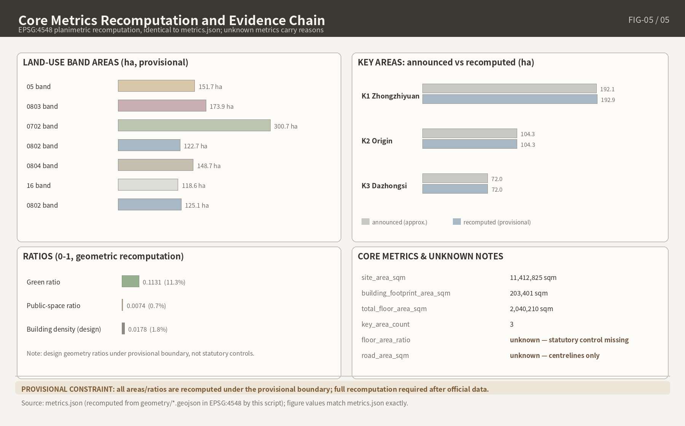

Centennial Jing-Zhang - Symbiotic Intelligent Rail: AI Innovation Belt Open Urban Design Proposal
An AI-generated urban design proposal constrained by the officially announced three-layer scope (43.6 sqkm / 11.4 sqkm / 368.4 ha) and tasks agent.1-agent.6: a seven-band land-use structure on provisional boundaries, detailed designs for three key areas, 12 AI scenario cards and 6 personas. All metrics are recomputable from the delivered GeoJSON; 23 mandatory tasks, 15 design-depth items and 26 registered sources close in structured matrices; missing official red-line and regulatory-plan data are explicitly marked unknown. Abridged English edition of the authoritative Chinese text (proposal.md).
Centennial Jing-Zhang - Symbiotic Intelligent Rail: AI Innovation Belt Open Urban Design Proposal
1. Design Basis and Source List
Core position: official planning boundaries and parcel-level Regulatory Detailed Planning indicators not yet public; uncertainty is an auditable asset, not a definitive conclusion.
1.1 Submission Statement and Scheme Attributes
1.1.1 AI Agent Generation Statement and Method Disclosure
Generated entirely by an AI Agent; identity and generation statement registered in agent.json (placeholder author replaced with real login pre-submission)来源. Follows co-creation principles charter.1/3/5/6/7: public interest first, final human judgment by professional teams来源.
1.1.2 Open Co-Creation Attributes and the Front Matter Contract
Front matter sets proposal_format_version: "2", bilingual_contract_version: "1": Chinese master + independent translation proposal.en.md; 13 chapters use fixed English titles; one-to-one correspondence in sections, claims, metrics, figures; machine verification in structured files — body need not open JSON来源.
1.1.3 Verbatim Statement of the Unified Boundary Clause
Spatial implementation recommendations: "conceptual proposal" / "reference scheme" / "available for professional teams to develop further"; verbatim: "All deliverables are open co-creation proposals; they do not replace formal planning and do not constitute a government approved conclusion." Regulatory Detailed Planning adjustments, Floor Area Ratio, Building Height, Demolish–Renovate–Retain Strategy, investment estimates, phasing, approval judgments — never final conclusions or government commitments来源.
1.2 Source List and Grading
1.2.1 Four Categories of the site package → T1-1
Four site-package categories: design brief (positioning, tasks, scope registry); agent taskbook (co-creation principles, six tasks, boundary clauses); standards (mandatory snapshots); provisional boundaries (rough boundaries)来源. Official areas on the announcement's basis, no reconciliation: Coordinated Research Area approx. 43.6 km²; Overall Design Area approx. 11.4 km²; key areas approx. 368.4 ha (Zhongzhiyuan 192.1 + Beijing AI Origin Community 104.3 + Dazhongsi 72.0 ha); only textual boundaries and approximate areas, no map来源.
1.2.2 Five Repository-Processed Files (agent_fact_pack, project_scope_summary, agent_task_requirements, source_use_matrix, missing_data_checklist) = Navigation Layer
Navigation layer (task lists, scope structure, usage and gap registry), not a source substitute; the body cites only source_id entries directly supporting a judgment来源.
1.2.3 Three-Level Source Distinction (usable_for_formal / background_only / provisional_only)
Participant sources labeled item by item: usable_for_formal = formal factual statements; background_only = narrative only, no spatial control conclusions; provisional_only = provisional generation/visualization only. Sources outside the central registry: not claimed centrally approved, not automatically prohibited.
T1-1 Source Grading List (Summary)
| Material | Publisher / Type | Grading | Permitted Scope of Use |
|---|---|---|---|
| Pre-qualification announcement (2026-04-30) | Haidian Branch, Beijing Municipal Commission of Planning and Natural Resources, A0 | usable_for_formal | Project name, textual boundaries, official areas, task/depth requirements |
| site package: design brief / agent taskbook | Repository | usable_for_formal | Scope registry, co-creation principles, tasks, boundary clauses |
| site package: standards local snapshots | Repository | usable_for_formal | Local basis for mandatory standards (SHA-256) |
| site package: provisional boundaries | Repository | provisional_only | Provisional generation, visualization, self-check |
| Five repository-processed files | Repository | background_only | Navigation layer; no spatial control conclusions |
| Self-collected official/rights-cleared sources (announcement page, Urban Renewal Regulations) | Officially public | usable_for_formal | Factual statements; item-by-item in sources.json |
| Self-collected media/background sources (official publicity, authoritative media) | Official/authoritative media | background_only | Background narrative; not in key argumentation |
Formal conclusions anchor only to official announcements and registered snapshots; publicity figures (e.g., 37 km²) stay background; provisional geometry isolated.
1.3 Data Gap Statement
1.3.1 Official Precise Boundaries Not Obtained: provisional_boundaries.geojson, "Four Must-Nots"
Official precise polygons (three-level scopes, three key areas) not obtained as of finalization. The overall design boundary is a provisional rough fit to the announcement's textual descriptions and approximate area (provisional_constraint, official_boundary=false) — AI generation, visualization, self-check only. "Four Must-Nots": not an official planning boundary; not a basis for approval, precise area, or formal professional scoring; the gap means only that the submission may proceed to intake and structural review, without prejudging professional scoring or the acceptance decision空间数据. EPSG:4548 recomputation approx. 11,412,825 sqm is an order-of-magnitude check on the announced approx. 11.4 km² — a fit, not verification; wholesale replacement + recomputation once official boundaries are released指标.
1.3.2 Pre-qualification Document Package Acquisition and Window Closure
Acquisition: "registration form → kjysanbu@163.com → download password sent back"; the 2026-04-30 to 05-12 17:00 window closed. Package not obtained or read; reliance entirely on public/rights-cleared materials; no speculation on contents来源.
1.3.3 Guide to the 15-Item unknown List → T1-3
15 unknown items registered "unknown + reason", inference prohibited; full list Chapter 11 T11-3, risk linkage Chapter 12.
T1-3 Data Gap Summary Table
| Gap Category | Representative Item | Handling |
|---|---|---|
| Official boundaries | Official precise polygons, three-level scopes + three key areas | provisional; wholesale replacement + recomputation once obtained |
| Statutory indicators | Parcel-level Floor Area Ratio, Building Height, Building Coverage Ratio, green space ratio, setbacks | unknown + reason; industry ranges labeled "not this project's indicators" |
| Document package | Pre-qualification document package contents | Declared not obtained, not read |
| Rail transit timeline | Lines 13A/13B through-operation timetable; Qinghua East Road West Entrance station opening | Long-term variable / to be determined, subject to official announcements |
| Listing status | Corridor stations in 2025 rail transit micro-center list | unknown; intensity argumentation conditional |
| Heritage protection layer | Qinghuayuan Station protection scope / construction control zone GIS boundaries | Conservative design; "to be studied further per cultural relics protection procedures" |
| Baseline data | Traffic baselines, municipal pipelines, operating revenue/expenditure | unknown + reason |
| Institutional matters | Applicant identities, pre-qualification results, two-track integration | unknown; no speculation |
Gap classes "boundary — indicators — timeline — baseline — institutional" → provisional mechanism; conditional intensity argumentation; status-switch phasing interfaces; exclusion from influence argumentation; "registration — recomputation — response" loop with Chapters 11–12.
1.4 Coordinate and Unit Policy
1.4.1 EPSG:4326 for Exchange / EPSG:4548 for Area Recomputation / m and sqm Units
GeoJSON is exchanged in EPSG:4326; area recomputation uses EPSG:4548; lengths in m, areas in sqm来源.
1.4.2 EPSG:4548 Must Be Confirmed Against Official Survey Data Before Final Use (design_brief verbatim)
Design brief verbatim: EPSG:4548 suits metric computation in Beijing but requires confirmation against official survey data before final use; all recomputed areas provisional来源.
1.5 Generation Method and Toolchain Disclosure
1.5.1 Six Pipeline Scripts → T1-2
Six pipeline scripts generate and check the package (T1-2). Five derived PNGs from GeoJSON and metrics form a "layer → metric → drawing" evidence chain — human-readable interpretation only, in Chapters 2, 4, 5, 7, 8/9, 11.
T1-2 Generation Toolchain Table
| Pipeline Script | Ownership | Responsibility | Version and License |
|---|---|---|---|
| generate_submission_assets.py | Submission package | Reads provisional boundaries; builds design GeoJSON, metrics, PNGs | With package iterations; front matter license |
| build_submission_content.py | Submission package | Builds Chinese/English proposal, sources, assumptions from research outputs | Same as above |
| build_visual.py | Submission package | Builds offline HTML and A3/A0 source pages | Same as above |
| render_proposal_html.py | Repository script | Renders report/proposal.html from proposal.md | Main branch; repository license |
| finalize_submission.py | Repository script | Manifest finalization + hash registration | Same as above |
| self_check_submission.py | Repository script | Pre-submission checks (shapely, pyproj, jsonschema) | Same as above |
Generation/verification separated: self-built scripts derive from registered inputs; repository scripts verify independently, no shared state; deliverables reproducible from same inputs.
1.5.2 5+1 Mandatory Standards Registry and SHA-256; 6th Document missing_source_url → Pending unknown
standards.json registers 5 mandatory formal standards (announcement, taskbook excerpts, Urban Design Management Measures, etc.) with local snapshots + SHA-256 checksums; status fetched / fetched_via_official_pdf_text = formal local basis来源. The 6th, Provisions on the Depth of Preparation of Construction Engineering Design Documents (2016 Edition), status missing_source_url — pending unknown, not compliance evidence标准.
1.6 Dual-Track Call Background
1.6.1 Institutional Track / Agent Open-Source Track Coexistence
Institutional track: Grade-A+ qualification in urban-rural planning preparation or construction industry; pre-qualification selects 5 applicants, ~100 days of design, 3 winning schemes; compensation 1.5 million yuan (non-winning) / 1.8 million yuan (winning); IP shared by organizers/undertakers and applicants来源. Agent track: 2026-08-07 to 08-31, GitHub PR submission; rewards: stele engraving, honors, policy matchmaking来源. Agent-track deliverable; no institutional-track qualification or rights claimed.
1.6.2 November Integration, Applicant Identities, Pre-qualification Results → unknown + reason
Both tracks' deliverables serve the November 2026 comprehensive planning integration per official plans; merger mechanism, institutional-track applicant identities, pre-qualification results lack public records — all unknown + reason, no speculation. Integration discipline: "transferability" — complete evidence chains, explicit unknowns, detachable modules, for professional teams to verify and develop further.
2. Three-Level Scope Framework
Design judgment: the three-level scopes are one deliverable transmission chain — "regional research — regulatory-detailed-planning-depth urban design — key-area detailed design" — not three independent scales; provisional-boundary discipline prevents misreading as official. Official precise polygons not public at finalization; spatial expressions provisional, replaced + recomputed once obtained来源来源.
2.1 Three-Level Scope Structure and Transmission
2.1.1 Coordinated Research Area 43.6 km² (Research Level)
Approx. 43.6 km²; announcement verbatim: "north to the North 5th Ring Road, east to the Beijing–Tibet Expressway, south to Xizhimenwai Street, west to Wanquanhe Road"来源. No submission layers or metrics; provides positioning and structural premises for inner levels. Nesting is official logic; no official diagram, geometry unverified; self-drawn graphics not nesting evidence来源.
2.1.2 Overall Design Area 11.4 km² (Regulatory-Detailed-Planning Depth)
Approx. 11.4 km²; announcement: "the urban areas and industrial zones within 1–2 km around the Jing-Zhang Heritage Park as the planning and design scope; north to the North 5th Ring Road, east to Xueyuan Road, Xitucheng Road, etc., south to Xizhimenwai Street, west to Dazhongsi East Road, Heqing Road, etc."来源. Package derives SITE_BOUNDARY + concept layers (land use, roads, green space, public space, buildings, phasing) on the provisional boundary; recomputed 11,412,825.386 sqm (EPSG:4548, provisional) — order-of-magnitude check only空间数据指标.
2.1.3 Key Areas 368.4 ha (Detailed Design Level)
Approx. 368.4 ha = Zhongzhiyuan AI Independent Innovation Acceleration Area approx. 192.1 ha + Beijing AI Origin Community approx. 104.3 ha + Dazhongsi AI Industry Cluster approx. 72.0 ha来源. Three provisional rough polygons (key_area_count=3, high); recomputed areas 1,929,201.877 / 1,043,236.909 / 720,454.219 sqm (EPSG:4548, confidence=low, provisional). No per-zone boundary descriptions; rectangle edges are not parcel/road planning boundaries空间数据空间数据空间数据; count cross-checked by 指标.
2.1.4 Three-Level Transmission Logic and Chapter Mapping
One-way convergence: research → structure/direction; regulatory-detailed-planning-depth → spatial organization + control recommendations; detailed design → refined key-area schemes; outer constrains inner, never back-proved. → T2-1.
T2-1 Three-Level Scope Comparison Table
| Level | Official Area | Textual Boundary / Scope | Deliverable Depth | Layers | Metrics (recomputed; provisional) | Chapter | Boundary Status |
|---|---|---|---|---|---|---|---|
| Coordinated Research Area | approx. 43.6 km² | Announcement verbatim (2.1.1) | Regional coordinated research | None (background only) | — | Chapter 3 | exact_polygon_missing_provisional_available |
| Overall Design Area | approx. 11.4 km² | 1–2 km around the Jing-Zhang Heritage Park (verbatim 2.1.2) | Regulatory Detailed Planning urban design depth | SITE_BOUNDARY + six concept layers (2.1.2) | site_area_sqm = 11,412,825.386 sqm (medium) | Chapter 4 | Same as above |
| Key Areas | approx. 368.4 ha (192.1+104.3+72.0 ha) | North→south: Zhongzhiyuan / AI Origin Community / Dazhongsi (2.1.3) | Integrated Planning Implementation Plan urban design depth | KEY_AREA (three provisional rough polygons) | key_area_count = 3 (high); zone areas (low) | Chapter 5 | Same as above |
T2-1 makes "scope" auditable: each area carries basis source and geometry status; only recomputable metrics with confidence levels registered — non-recomputable (research level) blank, not fabricated. Chapter 3 uses regional facts/policy basis; Chapters 4–5 figures: provisional recomputed values, no statutory effect.

Derived from GeoJSON; human-readable interpretation only, not boundary or metric evidence空间数据.
2.2 Unified Boundary Status Statement
2.2.1 Unified geometry_status Registration
All three-level scopes and key areas: geometry_status exact_polygon_missing_provisional_available — authority: official textual areas/boundary descriptions only; precise geometry missing, provisional available. Submission layers derive from provisional_boundaries.geojson (geometry_role=provisional_constraint, official_boundary=false), enforcing the "Four Must-Nots": not an official planning boundary, not a basis for approval, precise area, or formal professional scoring空间数据来源.
2.2.2 Fitting Deviations and "Fitting Is Not Verification"
Provisional boundaries are manual fits to announcement textual descriptions and approximate areas (EPSG:4548): Overall Design Area deviation approx. +0.11%; key areas approx. +0.43% / +0.02% / +0.06%指标指标. Small deviations only check announced approximate areas — "fit", not "verification"; cannot back-prove locations or become official boundary. After official release: wholesale replacement, same-method recomputation, manifest hashes updated; formal-attachment areas prevail.
2.2.3 Issue #846 Verification
Issue #846: two OSM-surveyed Jing-Zhang Heritage Park segments (17.49 ha total) intersect PROV-SITE-001 at 0%, nearest distance 412.5 m — neither falsifying (OSM unofficial, incomplete) nor endorsing it; provisional geometry uncertainty unadjudicated. Precise relationships to the heritage park: conditional, pending official boundary or as-built surveys空间数据.
2.3 Three Zones and Two Wings Structure
2.3.1 The Three Zones
Official "Three Zones and Two Wings": northern Zhongzhiyuan AI Independent Innovation Acceleration Area — source of full-stack independent innovation; central Beijing AI Origin Community — near-campus innovation ecosystem around Wudaokou; southern Dazhongsi AI Industry Cluster (announcement has two Chinese spellings; Industry Cluster form used uniformly) — anchor-platform-led: agents, content consumption, smart terminals来源. Zones correspond one-to-one with key areas (2.1.3), sourcing detailed-design functional propositions.
2.3.2 The Two Wings
Western wing: Zhongguancun Technology Services Wing; eastern wing: Xiaoyue River Scenario Enablement Wing (embodied AI, AI+ healthcare, AI+ film and television)来源. Two wings: no official area, boundary, or polygon — narrative units, not spatial entities; no closed surfaces, no areas assigned.
2.4 Regional Synergy
2.4.1 Synergy Directions (Conceptual Recommendation)
Context: Beijing–Tianjin–Hebei coordination; Beijing international science and technology innovation center. Directional only (details Chapter 3); all items conceptual recommendations, no contractual commitment, no official agreement/plan: "startup — growth — leader" carrying-capacity gradient with startup spaces (Beiwei Community); scenario complementarity with the Beijing Economic-Technological Development Area (Yizhuang) autonomous driving demonstration zone and embodied AI pilot-scale validation platform; interfaces reserved with Future Science City and Huairou Science City along the basic research — achievement translation chain.
2.4.2 Notes on Basis Discipline
Four basis disciplines: (1) publicity approx. 37 km² ("Three Zones and Two Wings", 2026-03 publicity, 2nd–5th Ring Road, no road boundary) vs announcement 43.6 km²: different bases, unexplained; side-listed as background only, reconciliation prohibited来源; (2) northern key area "Xuebeiyuan" in early publicity, "Zhongzhiyuan" since 2026-04-30 — suspected renaming, no official announcement seen; formal use "Zhongzhiyuan" with note; (3) AI Origin Community nested bases — approx. 3 km² (innovation district), approx. 1.4 km² (renewal-promotion area), 104.3 ha (call key area) — not interchangeable; call basis 104.3 ha; (4) publicity figures stay out of key argumentation, used only with qualifiers "publicity basis, as of publication time, not independently audited".
3. Coordinated Research Area: Industry and Future City Research
Design judgment: Haidian's AI fundamentals are real and multi-source corroborated, but aggregate figures are rolling timestamped bases; counter-evidence on computing absorption and model commercialization; urban form must hedge industrial volatility via "gradated, convertible, cycle-resilient" spatial products. Figures carry time-point/basis qualifiers; "95,000 AI talents" publicity only; research level outputs functional directions and structural judgments only; placement on the two inner levels' provisional boundaries — not an official planning boundary来源标准.
3.1 Industry Landscape and AI Innovation Ecosystem (43.6 km²)
3.1.1 Rolling-Basis Sequence of Industry Status
AI fundamentals have S-grade multi-source corroboration: enterprises, scale, registered large models all rose 2025-01 to 2026-06来源. But indicators exist in mutually unusable bases (official sequence vs third-party 2,779), and shares genuinely fell (large models' citywide share: "seventy percent" → "nearly sixty percent"). See rolling-sequence T3-1; no cross-basis splicing or linear extrapolation.
T3-1 Rolling-Sequence Table of Industry Indicators (values valid only at listed bases)
| Indicator | Value | Time Point | Basis | Grade | Citation Lead |
|---|---|---|---|---|---|
| AI enterprises | 1,300+ → 1,900+ (70% citywide) → 2,000+ core enterprises | 2025-01 → 2025-06 → 2026-06 | Official rolling basis; "core" ≠ "AI enterprises" | S | D04 E01 |
| Unicorn enterprises | 26, 70% citywide | FY2025 (issued 2026-02) | District economic plan report | S | D04 E01 |
| AI core industry scale | 282.2 billion yuan (+30%, 80% citywide) → 357.5 billion yuan | 2024 → 2025 | Press conference / Science City channel; boundary undisclosed | S | D04 E03 |
| Registered large models | 74 → 105 → 122 (nearly 60% citywide) | 2025-01 → 2025-09 → FY2025 | Cyberspace Administration registration; duplicates incl.; ≠ independent models | S | D04 E09 |
| Embodied AI enterprises | 186 → 330+ (25 full-machine makers, 7 unicorns) | 2025-08 → 2026-07 | Municipal S&T Commission; partly relaxed-recognition growth | S | D04 E15 |
| Third-party enterprise count | 2,779 (2,185 chips) | 2025-05 | Keyword screening by name/scope; ≠ official bases | A | D04 E02 |
| AI scholars | 12,300, 80%+ citywide | 2025 reports | Auditable talent basis (scholars ≠ practitioners) | S/A | D04 E04 |
| Public computing power (Shangzhuang) | 3,500P → 10,000P+ | 2024-03 → 2025-03 | Single-cluster commissioning; not absorption basis | S | D04 E12 |
T3-1: every figure carries time point, basis, grade; shares/boundaries keep changing — no snapshot projects spatial demand (gradated product mix, 3.1.4).
3.1.2 Auditable Talent and Research Anchors
Auditable anchors: 12,300 AI scholars and 101 AI2000 global top scholars, both 80%+ citywide; Beijing Academy of Artificial Intelligence (Zhiyuan Institute, 2018-11) lineage: Wudao 1.0 (2021) → 2.0 (1.75 trillion parameters) → 3.0 (open-sourced 2023-06) → Wujie Emu3 (Nature 2026-01, first Chinese-institution-led large-model achievement), 200+ open-source models, 1 billion+ downloads (publisher's basis; "first" recognitions not endorsed)来源. "95,000 AI talents gathered in the innovation belt" (2026-03 forum): no statistical definition or source, ~8× the 12,300 basis — publicity only, unused for density or facility scales.
3.1.3 Computing Power and Data Foundation
Local installed: Shangzhuang commissioned 3,500P (2024-03), 10,000P+ (2025-03) — single-cluster basis, S-grade corroboration; chips undisclosed. Cross-domain scheduling: the computing-power ecosystem network (2025-03 Zhongguancun Forum) "aggregates over 80,000P of green computing power across Beijing, Tianjin, Hebei, Inner Mongolia, and Xinjiang" — pool basis, not local installed; remote mainly for training, inference latency constrained. Absorption: no official Shangzhuang utilization; national AI-computing-center average ~30% (Science and Technology Daily; CAICT ~32%); supply ≠ absorbed demand. Data: data-institutions pilot zone reached Haidian 2023-11; corpus center (2025-11): 40+ data sources, 249 datasets aggregated, 147 finished listed. Implication (conceptual recommendation): heavy computing out of belt core; in-belt: scheduling displays, building-level edge inference nodes, corpus/annotation windows.
3.1.4 Counter-Evidence and Risk Clusters
Counter-evidence clusters demand spatial response. Commercialization: Zhipu prospectus — cumulative losses 6.2 billion yuan+ (2022–H1 2025), computing costs 70.7% of R&D (2024); closed loop unverified. Absorption: ~30% national average utilization coexists with 70–80% idle rates for some domestic chips. Spillover: ByteDance-affiliated self-held/under-construction properties around Dazhongsi exceed 740,000 m²; enclosed super-employer campus; no evidence of "ecosystem spillover into surrounding existing buildings" yet. Cyclical precedent: Zhongguancun Inno Way registrations 60 (2013) → peak 680 (2018) → decline; startup spaces have life cycles. Derived orientations (conceptual recommendations; no Demolish–Renovate–Retain Strategy or functional control conclusions): gradation (flagship carriers — growth-stage space — low-cost workstations; Origin Academy 50 workstations + "5+5" subsidy attracting 115 enterprises = proven mechanism); convertibility ("feasible unless prohibited", transitional presets); cycle resilience (Plan B: housing / public services / education in ebb scenarios).
3.1.5 "1+X+1" Industry System and Translation Chain
Announcement item 1.5 requires "AI+" integration directions tied to Haidian's "1+X+1" industry system (district official layout)来源来源. Auditable nodes: proof-of-concept program (2018, 100 million yuan fund); by 2025-04: 188 approved, 37 enterprises landed; National University AI Regional Technology Transfer and Translation Center (Ministry of Education 2025-06, third nationwide) via "three-point coordination": Zhongguancun College, Dongsheng Science and Technology Park Phase III, Forum permanent venue; nearly 2,100 projects excavated, 40 landed. Translation functions lack no institutional supply; missing: spatial gradient and low-cost carriers hosting "proof of concept — pilot scale — registration and landing" (3.3's proposition). District "over 1 billion yuan per year" AI support policy = budget ceiling, not spending commitment.
3.2 Three Positionings and Five Functions, Regional Placement
3.2.1 The Three Positionings
Positionings: Centennial Jing-Zhang Cultural Belt, Urban AI Life Experience Belt, AI-Integrated Innovation Belt来源标准. At 43.6 km², three layers on one corridor, not parallel "belts": cultural belt = Jing-Zhang railway heritage narrative + 9 km green corridor (no World Heritage nomination); experience belt = accessible, consumable everyday scenarios; innovation belt = industrial layer carried by the "Three Zones and Two Wings".
3.2.2 The Five Functions at Regional Scale
Five functions (per taskbook role_zh; direction judgments, not land-use conclusions)来源: Full-Stack Independent AI Innovation System — Zhongzhiyuan source core: chip, framework, foundation-model R&D + pilot-scale work; world-class AI Innovation Ecosystem — AI Origin Community near-campus circle + wing service/scenario networks; new paradigm of AI-Enabled Scenario empowerment — Xiaoyue River wing + blue-green corridors, low-confrontation validation fields; intelligent, AI-vital city — 43.6 km² all-age everyday life, "five-minute living circle" orientation; global voice in AI governance — Zhongzhiyuan's stated role + safety-governance demonstration (conceptual recommendation).
3.3 Three Zones and Two Wings Synergy
3.3.1 Roles of the Five Areas
Roles registered as T3-2 on publicity + taskbook basis来源来源.
T3-2 Three Zones and Two Wings Role Table
| Area | Taskbook Role (role_zh) | Publicity Positioning | Spatial Status | Treatment |
|---|---|---|---|---|
| Zhongzhiyuan AI Independent Innovation Acceleration Area (north) | Full-Stack Independent AI Innovation System; global voice in AI governance | Full-stack source "ground zero"; 237,500 m², opening planned 2026-09 | Key area ~192.1 ha | Sourcing + full-stack R&D anchor |
| Beijing AI Origin Community (central) | World-class AI Innovation Ecosystem | Wudaokou core; "near-campus innovation ecosystem" within 1 km of universities | Key area ~104.3 ha | Near-campus incubation + low-cost anchor |
| Dazhongsi AI Industry Cluster (south) | Intelligence-native new business formats | Anchor-platform-led; agents, content consumption, smart terminals | Key area ~72.0 ha | Industrialization + consumption anchor; anti-enclosure |
| Zhongguancun Technology Services Wing (west) | Global factor allocation; Zhongguancun IP/capital empowerment | Startup IP/capital ecosystem, global factor linkage | No official area/boundary/polygon | Narrative unit; no closed surface |
| Xiaoyue River Scenario Enablement Wing (east) | AI scenario empowerment; intelligent AI-vital city | Embodied AI, AI+ healthcare, AI+ film/TV clustering | No official area/boundary/polygon | Narrative unit; no closed surface |
T3-2: zones map one-to-one to key areas, sourcing detailed-design propositions; wings: no official boundaries, no closed surfaces; five roles cover five functions (loops, 3.3.2).
3.3.2 Functional Division and Synergy Loops (Conceptual)
Two loops at 43.6 km² (conceptual recommendation): (1) north–south innovation chain: sourcing (Zhongzhiyuan full-stack R&D + computing scheduling) → incubation (AI Origin Community low-cost workstations, ecosystem stations) → industrialization (Dazhongsi agent/terminal productization), continuing 3.1.5's validated chain; (2) east–west service chain: capital and IP services (west wing) ↔ scenario validation and data factors (east wing) — nearby funding, scenarios, compliance access for each segment. No land-use or intensity conclusions.
3.4 Future Urban Form Adapted to Artificial Intelligence
3.4.1 Future Urban Form Propositions
Announcement item 1.5: "building a future urban form adapted to artificial intelligence": self-adaptive, evolvable development model; "AI+" transportation; continuous, unbounded green space system来源. The 2026-07-24 mid-term review's three requirements — human–machine integration experimental field (AI for Science / AI safety governance), five-minute living circles for three population groups, landmark nodes with cultural identity — latest official values (applicants unnamed; no speculation), anchoring three propositions (conceptual recommendations): (1) experimental field: 9 km green corridor + blue-green skeleton, low-confrontation; environmental-sensing and livelihood scenarios prioritized, facial/trajectory prudent, Human Review built in; (2) five-minute living circle for the three groups (no official definition): profiles — highly educated innovators, permanent residents (incl. elderly), commuting students/visitors; scales not based on "95,000 AI talents"; (3) "landmark nodes + cultural identity" siting avoids Qinghuayuan Station protection scope and construction control zone. Carried by the two inner levels' provisional boundaries; area figures provisional, replaced + recomputed on official-boundary release空间数据指标.
3.4.2 Naming, English Name, Logo / Visual Identity
Taskbook requires main name, English name, naming system — no slogan-style naming or copying city/park/enterprise names; creative space lies in sub-nodes来源标准. Three-level naming (conceptual recommendation): L1 strictly "百年京张AI创新带"; English per repository glossary: Centennial Jing-Zhang AI Innovation Belt (JZ-AI Belt) — "Jing-Zhang" hyphen fixed, Jingzhang spellings prohibited; "众智园" transliterated Zhongzhiyuan, not decomposed (Wisdom Garden prohibited). L2 names nodes, park segments, events; domains: railway engineering (switchback grades, turnouts, track gauge), computing (origin, operator, stack), Jing-Zhang history (1909); trademark/copyright checks pre-adoption. L3 lets community nicknames settle (the "Model Speed Space" path). Logo/visual identity (reference scheme, not final art design): originality search upfront; verifiable font/material licensing; AI-generated content labeled per the Measures for the Labeling of AI-Generated Synthetic Content; graphic DNA: "from '人' to '大'" symbol, track gauge, signals vocabulary.
3.5 Regional Synergy Mechanism
3.5.1 Synergy Directions and Case Guide
Review dimension regional_synergy requires synergy with Beiwei Community, Future/Huairou Science Cities, the Economic-Technological Development Area, Beijing–Tianjin–Hebei标准. All directions conceptual recommendations, no contractual commitment or official agreement: "startup — growth — leader" gradient with Beiwei Community (100,000 m² rent-free three years, reported startup-layer mechanism); scenario complementarity with the Beijing Economic-Technological Development Area (Yizhuang) autonomous driving demonstration zone and embodied AI pilot-scale validation platform — no duplicate heavy-asset test facilities; interfaces reserved with Future/Huairou Science Cities along "basic research — achievement translation"; Beijing–Tianjin–Hebei coordination builds on the computing-power network's cross-domain scheduling ("80,000P" pool, not local installed). Item 1.5's "linking the industrial development of the 'two zones and one belt'": not elaborated officially — quoted verbatim, no fabrication.
Taskbook agent.2 requires 5–8 global AI ecosystem cases; guide only here, details in Chapter 6标准.
T3-3 Quick-View Guide to Global AI Ecosystem Cases (details in Chapter 6)
| Case | Benchmarking Question | Transferable Mechanism | Counter-Evidence |
|---|---|---|---|
| Kendall Square (Cambridge/MIT) | Anchor-driven innovation district | Triple identity: university TLO + developer + incubator | Housing-price pressure evidence gap |
| 22@Barcelona | Wholesale old-district transformation, socially balanced | Synchronized legislation: functional mix, price-capped housing, factory rehab | Northern imbalance questioned 20 years on |
| Station F (Paris) | Railway heritage building as startup ecosystem | Heritage designation first + platform operation + maker apartments | Single-billionaire dependence; housing prices rising |
| King's Cross (London) | TOD innovation district at a hub | Joint venture + flexible parameters + institutions recruited first | Hub land-value, long-cycle capital dependence |
| The High Line (New York) | 20-year linear railway heritage operation | Ownership/operation split + non-profit operation + phased opening | Gentrification displacing residents |
| Seoullo 7017 | Government-led linear heritage, quick landing | International competition + traffic pre-assessment + public participation | Inconsistent visitor-flow bases |
| Xuhui Riverside / West Bund (Shanghai) | Culture-first then AI industry (domestic) | "Culture first, science-and-innovation-led" sequencing | High-endization tendency |
| Hangzhou West Science and Technology Innovation Corridor | Long-term AI ecosystem operation, patient capital | Anchor institution + patient capital + "no disturbance unless necessary" service | Zhejiang University-system dependence |
Transfer mechanisms with hedges preset, not forms ("cycle-resilient"); The High Line (highest homology with the 9 km corridor): gentrification must enter the risk chapter; Station F (station-building homology): heritage designation first.
Coordinated Research Area uses the announcement's 43.6 km² as task basis; approx. 37 km² (2026-03 publicity) side-listed as background, unreconciled来源来源; all spatial and mechanism recommendations are conceptual proposals, available for professional teams to develop further, and do not constitute a government commitment or approved conclusion来源.
4. Overall Design Area: Urban Renewal and Regulatory-Plan-Level Urban Design
Judgment: not "draw an ideal blueprint, then declare metrics" for the 11.4 km² Overall Design Area, but translate Chapter 3's "graduated, convertible, cycle-resilient" judgment into an auditable renewal + regulatory-plan-depth framework. Most critical: "Urban Design depth of Regulatory Detailed Planning"=deliverable-depth benchmarking, not metric assignment—all five statutory parcel-level metrics (Floor Area Ratio etc.) unknown; conditional control replaces numeric control; every control metric is a conceptual proposal / reference scheme, available for professional teams to develop further来源标准深度.
4.1 Existing-Conditions Diagnosis and Problem List
4.1.1 Official Qualitative Quotes and T4-1
Three official findings anchor diagnosis. First, the park-background wording—"Line 13 viaduct + aging trackbed as spatial barrier; poor east–west movement; disorderly under-bridge parking" (People's Daily Online / Capital Window caliber)—directly quotable. Second, two official under-bridge models coexist in tension: district urban management commission's 194-site 2025 retrofit (parking 6104→8194, +2090) vs park under-bridge walking/cycling activation; proposals must explicitly handle swap/coexistence with stock parking来源深度.
T4-1 Existing-Conditions Problem List
| Problem | Evidence (value/time/caliber) | Official source | Impact tier |
|---|---|---|---|
| Viaduct + aging trackbed as spatial barrier; poor east–west movement | Direct official quote; no cross-section data (traffic baseline missing) | People's Daily Online / Capital Window (park background) | Overall structure |
| Existing rail capacity shortfall | Wudaokou/Zhichunlu/Shangdi routine flow-limited; split works in progress, benefit not before 2027, uncertain | Media reports; municipal major-projects office replies | Station/key area |
| Under-bridge disorder; use-model tension | 194 sites retrofitted 2025, parking 6104→8194 (+2090); park under-bridge activation coexists | Beijing Daily (district urban management commission) | Corridor interface |
| Walking/cycling breakpoint tier shift | Phase 2 built 2026-08-06, "three paths and one greenway" connected; breakpoints moved to south hub interface, north Fifth Ring overpass, system | Completion releases (Sci-Tech Daily etc.); announcement 1.5 wording | Endpoint/interface |
| Industry publicity vs statutory population base mismatch | "95,000 AI talents" statistically undefined (2026-03 forum publicity); statutory base: 7th census Haidian 3.133M, 60+ 18.5% | Forum publicity vs district census bulletin (S-tier statutory) | Facility sizing |
| Statutory spatial data gaps | Official precise polygons, five RDP metrics, three key areas' internal built environment missing | Prequalification document channel (window closed 2026-05-12) | All metrics |
T4-1 turns "existing problems" into tiered handling objects: rows mark evidence caliber and source, distinguishing official text, qualified media calibers, data gaps; impact tiers map to 4.2, Chapter 5, 4.5 interventions. Row six dictates all metric expression (explicit unknown). Traffic flows, bus networks, rail ridership lack public data; no quantitative congestion claims, only official qualitative findings来源空间数据.
4.1.2 Breakpoint Tier-Shift Diagnosis
Phase 2 relocated the problem: opened 2026-08-06, "three paths and one greenway" connected, nine branch roads opened, "end-to-end, no breakpoint" claimed. The announcement (2026-04-30) still demands "focus on park walking/cycling breakpoints", naming the south end, north end and ring-road overpass areas. This gap=design increment list: breakpoints shifted to four higher tiers—endpoint (south: Beijing North Station hub interface; north: Jianting Bridge over North Fifth Ring), station-city (Dazhongsi: ~8-minute out-of-station transfer; in-station link not before end-2027, a long-term variable), system (Qinghe waterfront walkway, Huilongguan cycle-only road), overpass (no built evidence of any Fifth Ring crossing)来源来源. "Stitch the city" not re-argued; 4.2.2 organizes increments around the four interfaces.
4.1.3 Industry–Space–Population Structural Problems
Three layers, all from Chapter 3. Industry: high-growth narrative vs auditable evidence diverge—registered large models' city share fell "70%"→"nearly 60%"; computing centers average ~30% utilization (Sci-Tech Daily survey); ByteDance's Dazhongsi properties all self-held (incl. a 20-year parcel); "ecosystem spillover into nearby stock buildings" unevidenced; no one-sided-growth lock-in for space products. Population: multi-layered statutory base—7th census Haidian 3.133M residents, 60+ 18.5%, migrants 35.7%; ~450,000 residents in 70 corridor communities (2026-08 project-side caliber, method unpublished); "95,000 AI talents" publicity only, never a sizing base. Space: three key areas' internal boundaries and built environment (Zhongzhiyuan 192.1, AI Origin Community 104.3, Dazhongsi 72.0 ha, announcement caliber) lack official mapping—unknown; land-use layout derives from provisional boundaries, no statement on ownership or parcels来源指标.
4.2 Overall Concept and Spatial Structure
4.2.1 Concept Proposition: "Uncertainty as Asset"
Required depth mismatches statutory data supply: official precise polygons and the five statutory RDP metrics are publicly unobtainable. Hence the concept—make uncertainty an auditable asset, four parts: explicit unknowns (each statutory metric annotated with missing reason, T4-2); numbered assumptions (premises in assumptions.json, e.g. A-BOUNDARY-PROV-002 provisional boundary, A-CONTROLS-001 missing RDP); conditional triggers ("if…then…" intensity/function controls, 4.5.3); multi-scenario flexibility (phasing and reserve land preset with Plan-B compatibility to housing/public services/education under industry downturn, per Chapter 3). Implementability proof, not rhetoric: official metrics landing enables rapid parameterization, not parameters fixed now空间数据深度.
4.2.2 Spatial Structure Diagram Notes
Structure "one axis, one ring, three cores, multiple interfaces" mirrors Chapter 3's Three Zones and Two Wings. Axis: the built ~9 km heritage-park green corridor—north–south narrative/public-space main axis, established fact not new-build claim; this chapter only adds flank edge/interface additions. Ring: "three paths and one greenway" + east–west stitching links + station feeder walking/cycling, answering 4.1.2's interfaces. Cores: south Dazhongsi (industrialization and consumption scenarios, anti-enclosure), central AI Origin Community (near-campus incubation, low-cost innovation space), north Zhongzhiyuan (full-stack R&D source)—the three key areas. Placement: cultural belt on axis (heritage narrative layer; no World Heritage status implied), experience belt on ring (everyday scenario layer), innovation belt on cores (industry function layer); five functions inherit Chapter 3's research-layer mapping, no land-use conclusions来源深度空间数据.

Figure 4-1 is a human-readable layer only: dashed lines mark provisional status; GeoJSON/metrics authoritative空间数据指标.
4.3 Industry Targets and Functional Layout (Announcement 1.5.2.1)
Same spatial logic as land_use.geojson: seven south-to-north bands inherit Chapter 3's judgment above. Industry space forms a graduated product mix (flagship–growth–low-cost incubation), not total expansion; south renews existing buildings, center mixes research/housing for an all-day innovation community, north holds strategic reserve land for uncertainty. Areas: provisional-boundary recalculations (EPSG:4548, provisional), repo-validatable codes, not statutory land-approval areas空间数据深度.
T4-3 Functional Layout and Land-Use Structure Correspondence
| Band (layer feature) | Land code/category | Recalc. area (sqm, provisional) | Industry and urban functions | Chapter 3 judgment |
|---|---|---|---|---|
| LU-001 South AI Industry Services Band | 05 Commercial services land | 1,517,250.379 | Dazhongsi stock-building renewal; AI industry services, showcase/trading, corporate HQs | Graduation: flagship + growth carriers; anti-enclosure |
| LU-002 Heritage Culture and Commercial Activation Band | 0803 Culture land | 1,738,608.869 | Heritage display, cultural experience, supporting retail; activating park flanks | Experience-belt scenario layer; industrial-remains "adaptive reuse" discipline |
| LU-003 Community Services and Talent Support Band | 0702 Urban community service facilities land | 3,006,997.433 | Community services, sports/leisure, talent housing support | Cycle-resilient Plan-B host; serving statutory population base |
| LU-004 Origin Community Research-Mixed Band | 0802 Research land | 1,226,610.269 | Research offices, open-source community, housing mix | Near-campus incubation; low-cost innovation anchor |
| LU-005 Near-Campus Innovation Services Band | 0804 Education land | 1,486,567.535 | School-enterprise joint labs, teaching practice, east–west campus stitching | Host of "proof-of-concept—pilot—registration" chain |
| LU-006 North Independent-Innovation Reserve Band | 16 Reserve land | 1,186,083.435 | Strategic reserve; near-term green space/temporary scenarios; mid/long-term major research-facility interface | Multi-scenario flexibility; uncertainty as asset |
| LU-007 Zhongzhiyuan Full-Stack R&D Band | 0802 Research land | 1,250,702.653 | Full-stack AI R&D, computing trials and pilots | Source core; heavy computing excluded from core |
First, magnitude is judgment: largest band LU-003 (~3.007M sqm) exceeds any industry band—the "five-minute living circle" and statutory population base precede the industry narrative, per the mid-term review's "people-centered innovation ecosystem". Second, LU-006 (~1.186M sqm) embodies "uncertainty as asset": no early lock-in for unknown demand. Third, codes, areas, layer features map one-to-one, machine-checkable; official-boundary release triggers same-formula recalculation, assignment logic unchanged. Band boundaries: provisional-geometry zonings, not existing parcels, ownership or road red lines; Demolish–Renovate–Retain details in Chapter 7指标指标.
4.4 Urban Renewal Overall Framework (Announcement 1.5.2.2)
4.4.1 General Logic of Retain–Renovate–Demolish–New
Renewal follows the Beijing Municipal Urban Renewal Regulation principle "retention-renovation-demolition in parallel, led by retention, use and upgrading"; new build only for structural safety, functional necessity, interfaces. This framework gives only principles and spatial placement; building-level classification in Chapter 7. Disclosure: corridor land/building ownership (incl. railway land, ~13 ha Phase-1 park land freely licensed by China Railway Beijing Group) unverified; all Demolish–Renovate–Retain statements are conceptual proposals, not property-disposal or expropriation conclusions来源深度.
4.4.2 Renewal Policy Foundation
Policy base—"regulation—tools—quota—finance—exit" chain: the Regulation (2023-03-01) set five renewal types, coordinating bodies, joint review来源; policy toolbox 1.0 (75 items) effective 2026-01-01; municipal building-scale quota pool 10M m², 3M m² year one, rules "single project ≤ 50% of new above-ground scale", "first come, first served; first built, first served" (municipal planning/housing commissions); State Council 15th Five-Year urban renewal plan (2026-05, repost caliber): 5-year transition, tiered titling, REITs, special bonds; BBMG Zhizao Gongchang REIT (listed 2025-02, ¥1.1356B) opened public-REIT exit. "First come, first served" makes new scale a claim on competitive, annual-window public resources—"why occupy, how much, how supervised" must be answered—hence no new-scale figure, only claim-rule awareness and project framework.
4.4.3 Precedent and Counter-Example
Precedent: Lanjing Lijia—the city's first approved renewal project with municipal building-scale quota support (district publicity wording), via "government coordination + social capital + listed transfer": new scale 13569.978 m² incl. 6784 m² municipal quota, ~¥4.88B social investment leveraged, quotas secured in HD00-1601 etc. block RDPs (municipal planning commission caliber). Limited to proving the quota-pool chain works; no metric derived. Counter-example: Zhongkun Plaza strata-title dispute—1200+ small owners, promised returns unpaid, Haidian restructuring 2018, asset-management acquisition, 2020 repurchase of small-owner titles (macro facts per Beijing Daily; amounts media-compilation). Lesson: multi-owner strata-sold renewal must first consolidate titles—"100% consent" is an implicit threshold; title consolidation is a precondition (conceptual proposal) for southern stock renewal; strata-sold parcels are high-risk implementation units.
4.5 Correct Formulation of "RDP Depth" and Conditional Control
4.5.1 Depth Benchmarking, Not Metric Assignment
The phrase is strictly deliverable-depth benchmarking: complete elements (land use, intensity, height, transport, utilities, Blue-Green Space), clear one-way transmission (research→RDP-depth→detailed-design layer), parameterizability (rapid assignment once official metrics land). Not metric assignment: RDP is the statutory basis of planning permission and implementation management, drafted/approved by statutory bodies; this open-call conceptual proposal neither holds nor mimics approved-conclusion form标准标准标准. Control content takes two lawful forms: explicit unknowns (4.5.2), conditional control (4.5.3).
4.5.2 All Five Statutory Parcel-Level Metrics Unknown → T4-2
T4-2 RDP Conditions Pending Confirmation
| Metric | Status | Reason | Source to confirm | Industry reference range (non-project) |
|---|---|---|---|---|
| Floor Area Ratio | unknown | RDP conditions/design annexes unpublished; planning_limits.json: status=missing, required_for_final_submission=true; estimated GFA ≠ approved FAR | Approved RDP conditions or official design annexes | GB 50180-2018 Table 4.0.2 residential-block linked control (mandatory clause, transcribed caliber; original text prevails) |
| Building Height (m) | unknown | As above; plus pending heritage control-zone, aviation/landscape constraints | Approved height control; heritage/aviation/landscape special constraints | Jingzhengfa No.144 five control-zone height caps (3.3/9/18 m etc., statutory; applicability pending heritage annex maps) |
| Building Coverage Ratio | unknown | RDP conditions missing; metrics building_density=0.017822=design-geometry density, not statutory | Approved RDP conditions | GB 50180-2018 Table 4.0.2 (same caliber) |
| Green space ratio | unknown | Statutory green-ratio control missing; metrics green_ratio=0.113108=provisional design recalculation | Approved RDP conditions or local green standards | GB/T 51346-2019; Beijing sponge-city local targets (e.g. annual runoff control ≥85%) |
| Setback (m) | unknown | Road red lines, building control lines, utility constraints unobtained | Road red lines, building control lines, fire/utility conditions | GB/T 51328-2018 etc. industry-standard ranges |
T4-2 is the wording discipline: each metric registers unknown + reason + pending source; reference ranges serve plausibility only ("not this project's metrics")—GB values as project metrics would be forbidden "fabricated certainty". floor_area_ratio stays unknown (formula, missing reason complete); building_footprint_area_sqm (203,401.112 sqm, conceptual), green_ratio (0.113108), public_space_ratio (0.007395) are provisional geometry-derived values; not statistics or statutory metrics指标指标指标; data-gap constraint at 空间数据.
4.5.3 Conditional-Control Example (Transit Micro-Center)
Example: if corridor stations (Wudaokou, Qinghua East Road West, Dazhongsi, Xuezhiyuan etc.) are in the Beijing Transit Micro-Center List (2025) (103 citywide), then micro-center control applies—public-function land ≥30%, intensity +10%, walking-network density 1.2–1.5× general areas (policy/media calibers). Membership unknown, unverified—a monitoring trigger: list text obtained, controls auto-activate parametrically, no rewrite. Same for other pending variables—13A/13B split-through timetable, Qinghua East Road West Station opening ("pending due to scheme changes"), Dazhongsi in-station transfer (not before end-2027)—all tagged "delivered / under-construction expectation / pending", intensity bound to conditionals, not numbers深度.
4.5.4 Adjacent RDP Reference (Context Only)
Adjacent HD00-1601 etc. block RDPs (2022–2035) are (draft) published schemes: published 2024-12-19, adoption notice 2025-02-08, no approval seen; metrics not claimed in force. Totals, same annotation: residents ~364,000, construction land ~1648.1 ha, building scale ~23.693M m² ("one-map" caliber). The HD00-1603-01 parcel's 60 m height is a project-level published metric, not an RDP metric, not extrapolable here. Adjacent RDPs are context only: statutory planning is advancing; parameters dock post-approval, not borrowed values now来源.
4.6 Jing-Zhang Railway Heritage Park Vitality Belt Strategy Interface (Announcement 1.5.2.4 interface)
Interface positioning only (strategy in Chapter 9): spatially, the vitality belt=4.2.2's axis and ring, on which Chapter 9 builds Blue-Green Space continuity and corridor interfaces; functionally, inherits LU-002 + corridor Public Space (public_space_area_sqm=84,399.55 sqm, provisional recalc), prioritizing lightweight, discontinuous retail; under-bridge proposals handle swap/coexistence with the 8194 stock parking spaces (4.1.1 rule); legally, the ~13 ha Phase-1 land is freely licensed by China Railway Beijing Group, not park green space—expansion/format insertion license-constrained and annotated. 空间数据指标.
Calibers: areas are provisional-boundary EPSG:4548 recalculations (provisional; ~+0.11% vs the announcement's ~11.4 km²—fit, not verification); other calibers as above; nothing here constitutes RDP-adjustment or Demolish–Renovate–Retain conclusions, government commitments or implementation arrangements指标来源来源.
5. Detailed Design of Key Areas
Design judgment first: the three key areas are renewal propositions of differing certainty—north Zhongzhiyuan "opening pace of a new-build carrier", central Beijing AI Origin Community "collective-land operation and station-city interface", south Dazhongsi "public interface given a super-anchor tenant". Depth: Integrated Planning Implementation Plan per the announcement; all spatial content is a conceptual proposal / reference scheme, available for professional teams to develop further, presupposing no RDP metrics, engineering alignments, Demolish–Renovate–Retain conclusions or implementation schedule来源标准深度. Topology self-check: three provisional polygons mutually non-overlapping, all inside provisional SITE_BOUNDARY; areas: announcement ~192.1/104.3/72.0 ha (total ~368.4 ha); layer recalculations (EPSG:4548, low) checking only—rectangle edges ≠ parcels or road red lines空间数据空间数据空间数据; provisional boundary source: 来源.

Figure 5-1 is a human-readable layer only; GeoJSON/metrics.json authoritative空间数据指标.
5.1 Zhongzhiyuan AI Independent Innovation Acceleration Area (~192.1 ha; role: Full-Stack Independent AI Innovation System + global voice in AI governance)
5.1.1 Positioning Difference and Physical Foundation
Zhongzhiyuan is the only area positioned as "full-stack independent innovation source", officially a "core explosion point"来源. Physical base clearest of the three: Xueyuan Road north end, Dongsheng Town, new build on vacated collective industrial land; 237,500 m² total, towers A–E completed/accepted, opening planned 2026-09, adjacent to Lines 15 and Changping (planning commission promotion caliber, S-tier single source). Two disclosures: officially "Xuebeiyuan" 2026-03-27, unified as "Zhongzhiyuan" from the 2026-04-30 announcement—rename strongly indicated but no official rename announcement seen; opening has two versions, 2026-07 (encyclopedia) vs 2026-09 (promotion); scheme writes "opening planned H2 2026, subject to official announcements".
5.1.2 Spatial Structure (Conceptual Proposal)
Spatial organization: "carrier gradient of the full-stack independent system"—flagship–growth–incubation: flagship = completed 237,500 m² towers for full-stack leaders (domestic chips, basic software, foundation models); growth = elastic floor area in-park and adjacent collective industrial land; incubation = low-cost, small, convertible units for early teams. Gradient maps to submission layers LU-007/LU-006 (areas in T4-3; scheme-derived, not statutory land approval)空间数据空间数据指标. Announcement 1.5 names the "Zhongzhiyuan external transport" task; structural proposition: the North Fifth Ring integrated interface—conceptually reserve walking/cycling + landscape integration at the crossing node (5.4.1), no engineering-feasibility conclusion. "First-batch transit micro-center" is encyclopedia-compilation only (B-tier), membership unverified—conditional citation only (4.5.3 formulation).
5.1.3 Project Levers and Renewal Logic (Conceptual Proposal) → T5-1
Renewal logic: "vacate-and-rebuild done; opening operation pending"—construction completed via Dongsheng Town collective land; increments: opening readiness and interface reservation (T5-1).
T5-1 Zhongzhiyuan AI Independent Innovation Acceleration Area Design Card (conceptual proposal, not an implementation commitment)
| Lever | Spatial action | Basis and caliber | Implementation dependency | Uncertainty |
|---|---|---|---|---|
| Full-stack carrier gradient readiness | Flagship tower zoning guide + growth elastic plans + incubation small units | 237,500 m² completed (planning commission promotion caliber) | Dongsheng Town + operator leasing pace | Opening 2026-07/09 dual calibers (per 5.1.1) |
| North Fifth Ring integrated interface | Conceptual reservation at crossing node (walking/cycling + landscape) | Announcement 1.5 "Zhongzhiyuan external transport" task | Municipal transport special plan; official planning boundary | No built evidence of Fifth Ring crossing; no engineering conclusion |
| Micro-center conditional control | If listed, apply public function ≥30%, intensity +10% framework deepening | "First-batch micro-center" is B-tier; membership unverified | Municipal DRC list verification | unknown; monitoring trigger set |
| Opening scenario rehearsal | "Operate from day one" lightweight public-space scenarios | Lightweight-format precedent | Operator engagement timing | No public evidence of operating revenue/cost mechanism |
T5-1 turns "opening" into checkable spatial readiness: four levers (carrier, interface, institution, operation) each tied to its uncertainty source, separating "physically supported" from "externally adjudicated".
5.1.4 Link to the Belt Main Structure and Risk Conditions
Zhongzhiyuan lies north of the 9 km corridor's north end—a "northern echo", not an on-corridor node: north–south dialogue forms via the Fifth Ring crossing node and Jianting Bridge–Qinghe section. Risks: opening-pace dependency—most spatial judgments presuppose on-time commissioning; delay downgrades all to scenario assumptions; micro-center membership unverified (unknown + monitoring trigger)—no micro-center metrics citable pre-verification.
5.2 Beijing AI Origin Community (~104.3 ha; role: world-class AI innovation ecosystem)
5.2.1 Positioning Difference and Three-Area Nesting Clarified
Origin Community: a "near-campus innovation ecosystem" within one kilometer of universities around the Wudaokou core—the only area keyed on "ecosystem"来源. Three nested, non-interchangeable area calibers: ~3 km² = 2026-01-05 first-batch AI innovation block policy caliber; ~1.4 km² = 2026-07-09 urban-renewal promotion "renewal district" caliber; 104.3 ha = this call's key-area caliber. Nested geometry has no official map; design uses the 104.3 ha call caliber, the other two cited only for operating-mechanism discussion空间数据指标.
5.2.2 Spatial Structure and Station-City Interface (Conceptual Proposal)
Structure: "one corridor, one street, one station". Corridor: the heritage park section (Phase 2 built—established fact, not this scheme's increment). Street: the Chengfu Road–Xueyuan Road campus-interface innovation services band (LU-004/LU-005 conceptual bands, areas in T4-3)空间数据空间数据指标. Station: the Qinghua East Road West station-city integration interface—new Line 13 station, future Line 15 transfer, started 2024-05; municipal DRC 2025-07 survey confirmed it a key capacity-upgrade transfer node; officially "opening time pending due to scheme changes"—timing and line attribution undecided. Hence a two-stage pre/post-opening elastic design: pre-opening—accessibility via existing Line 15 stations and current network, station area as "interface reservation + temporary public use"; post-opening—three-flow separation for students, commuters, visitors. No opening date presupposed (5.1.1 rule); no feasibility conclusion on station or underground works; intensity conditional only.
5.2.3 Project Levers and Renewal Logic (Conceptual Proposal) → T5-2
Renewal logic: "institutionalizing affordable innovation space through collective-land operating flexibility": Dongsheng Town built 4000+ talent apartments on collective land; Dongsheng Building, vacated into Origin Building, attracted 115 AI firms via "5+5" subsidies (¥50,000 rent + ¥50,000 computing; 2024 operating caliber). International benchmarks agree—without institutionalized affordable space, innovation districts face gentrification backlash: Station F's Flatmates (~600 beds, €299/month) hedges "housing prices killing innovation"; 22@ legislated ~4000 price-capped apartments in parallel. Conceptual proposal: integrate collective-land talent apartments, "Haiqing Anju" and low-cost desks into an "affordable innovation space" discourse (Urban Renewal Regulation "led by retention, use and upgrading")来源.
T5-2 Beijing AI Origin Community Design Card (conceptual proposal, not an implementation commitment)
| Lever | Spatial action | Basis and caliber | Implementation dependency | Uncertainty |
|---|---|---|---|---|
| Affordable-space institutionalization | Talent apartments + low-cost desks + growth-space gradient ratio proposal | 4000+ talent apartments; "5+5" attracted 115 firms; benchmarks Flatmates/22@ | Dongsheng Town collective-land operator | Operating data not independently audited |
| Two-stage station-city interface | Pre-opening interface reservation + temporary use; post-opening three-flow separation | Qinghua East Road West started 2024-05; opening pending | Municipal DRC station-city integration metric delivery | Opening timing and line attribution unknown |
| Near-campus mixed interface band | Chengfu Road–Xueyuan Road functional mix and open-interface guide | LU-004/LU-005 conceptual bands (provisional) | University and owner cooperation willingness | School-land cooperation depth cannot be planned fast |
| Ecosystem narrative anchor | "Near-campus innovation ecosystem" public-space sequence (concept) | Official positioning来源 | Multi-actor coordination | Three area calibers easily conflated |
T5-2 turns "ecosystem" into allocatable spatial budget: affordable space precedes industry space (answering High Line gentrification, 22@ balance question); "opening pending" becomes design elasticity, not risk concealment. Ratios are conceptual proposals, subject to local-government and collective decisions.
5.2.4 Link to the Belt Main Structure and Risk Conditions
Origin Community sits mid-corridor, highest overlap with the main structure: the design increment turns corridor flows into community participation, not through-traffic. Main risk: caliber conflation and publicity-number contamination—operator "439 firms, 7000+ daily average" (3 km² block) vs official "400+ firms, 13,000 developers" (1 km radius) measure different objects—juxtaposed, official prevails; "new firms +96%/yr, revenue growth >50%" are operator/township-survey calibers, unaudited, excluded from space-sizing chains.
5.3 Dazhongsi AI Industry Cluster (~72.0 ha; role: intelligent-native new formats)
5.3.1 Positioning Difference and Anchor-Tenant Facts
Dazhongsi: "led by a champion platform, aggregating agent, content-consumption and smart-terminal ecosystem firms"来源; spatial reality anchored in auditable transactions: ByteDance bought Zhongkun Plaza ~¥9B (2019) (renovation ~400,000 m²; Douyin, Toutiao, Feishu in; 1733 retail; B-tier compilation, macro facts corroborated by authoritative media), Fangheng Plaza ~¥5B (2020); an affiliate won the Lanjing Lijia reserve parcel at ¥2.8B floor price 2026-02-03 (39,500 m², fully self-held 20 years, 2026 municipal key project); ByteDance's Beijing self-held plus under-construction GFA exceeds 740,000 m². Discipline: ByteDance properties all self-held under 20-year constraints; "ecosystem spillover into nearby stock buildings" has no evidence—no premise for spatial judgment; design here strictly limited to public domain and interfaces—no retrofit proposal for any enterprise self-held building or owned space (agent taskbook prohibition)来源空间数据指标.
5.3.2 Spatial Structure (Conceptual Proposal)
Announcement 1.5 names the "Dazhongsi Station four-quadrant walking connection" task—the structural main line, executed as a "current out-of-station + future in-station variable" dual-state design: Line 12 opened 2024-12; in-station transfer passage deferred (still one of only 4 virtual-transfer discount pairs citywide in 2026-01, paid zones unconnected); current out-of-station transfer via the 1733 sunken plaza ~8 minutes, continuous billing within 30 minutes; the passage depends on the Dazhongsi Station retrofit (new underground transfer hall), contract-section to 2027-12-31—planned duration, not opening commitment; in-station connection written as "long-term variable not before end-2027, no official opening date". Four-quadrant connection is thus organized on the current out-of-station pattern: surface pedestrian system linking quadrants, integrating 1733 sunken-plaza interface, crossings, greenway endpoints—independent of the in-station passage; interface conditions reserved for the future transfer hall, upgradeable once officially confirmed.
5.3.3 Project Levers and Renewal Logic (Conceptual Proposal) → T5-3
Highest implementation certainty here—the "metric + actor + precedent" triad: Lanjing Lijia is the city's first approved Urban Renewal project with municipal building-scale quota support (district publicity wording)—new scale 13569.978 m² incl. 6784 m² municipal quota, verified 2026-08-03, demolition-rebuild as an international exchange center, ~¥4.88B social investment leveraged (publicity caliber), quotas secured in HD00-1601 etc. block RDPs (still "(draft) published scheme + adoption notice", unapproved); project-level publication also lists HD00-1603-01 at 60 m height—a "project-level published metric", not extrapolable to area-wide height control空间数据.
T5-3 Dazhongsi AI Industry Cluster Design Card (conceptual proposal, not an implementation commitment)
| Lever | Spatial action | Basis and caliber | Implementation dependency | Uncertainty |
|---|---|---|---|---|
| Four-quadrant walking connection | Surface walking network + sunken-plaza interface integration + crossing optimization (concept) | Announcement 1.5 named task; current ~8-minute out-of-station transfer | Multi-owner coordination: roads + station area | In-station passage a long-term variable not before end-2027 |
| Lanjing Lijia interface | Public-interface and walking/cycling feeder concepts around the settled project | New 13569.978 m², municipal quota 6784 m²; 60 m is project-level published metric | Project implementation progress | RDP draft unapproved; no metric extrapolation |
| Station-area dual-state reservation | Interface conditions to future underground transfer hall registered | Retrofit contract-section to 2027-12-31 (not opening commitment) | Line 13 capacity-upgrade progress | No official opening date |
| Enclave hedge | Time-shared public opening mechanism for park amenities | 1733 "mainly serves ByteDance staff" | Enterprise voluntariness; local consultation | No coercive basis; conceptual proposal only |
T5-3: "stay humble beside the strongest certainty"—Lanjing Lijia's precedent chain is the local implementability template; intensity stays at project-level calibers, in-station connection a long-term variable, enterprise-space opening a mechanism suggestion. "Highest certainty" ≠ "license to over-promise".
5.3.4 Link to the Belt Main Structure and Risk Conditions
Dazhongsi section: corridor's southern community-vitality segment (Phase 2 south section 230,800 m²); corridor and four-quadrant connection merge here—tightest interlock with the main structure来源. Risks: enclave formation—1733 "mainly serves ByteDance staff" suggests super-employer self-built amenities may close off; response: "turn enterprise edges into shared interfaces", advisory only; title-consolidation precondition—the Zhongkun Plaza strata-title dispute (1200+ small owners, promised 8% returns unpaid, Haidian restructuring 2018, original-price repurchase 2020 after Oriental Asset acquisition; B-tier compilation) is the negative lesson: multi-owner consolidation and the "100% consent" implicit threshold must come first; procedural suggestions only, no spatial conclusions.
5.4 East–West Stitching and North–South Continuity Concept Strategy
5.4.1 East–West Stitching: Four Typologies and an Interface Typology (Conceptual Proposal)
Problem definition corrected: Phase 2 is built and connected (4.1.2); "stitch the city, open walking/cycling" collides with established fact—not repeated来源. Breakpoints moved to the interface tier; stitching is organized as "built typology + remaining interface list". Four scales of precedents as typology: ① greenway—Shuangqing Greenway (663 m, under Line 13 viaduct, atop high-speed rail, ~20,000 daily users); ② road connection—Qinghua East Road west extension (2017, height-limit gantry protecting Line 13); ③ secondary arterial—Bajia east–west link (~850 m continuous underpass of three lines, post-2021 status unconfirmed, written unknown); ④ tunnel—Qinghe North Tunnel (opened 2023-11, 1.5 km under four lines).
Remaining breakpoints fall into four interface types (conceptual proposal): endpoint interfaces—south Beijing North Station "garden station district" started 2025; north Jianting Bridge builds on Phase 2 under-bridge activation; station-city interfaces—Dazhongsi four quadrants (5.3.2) and Qinghua East Road West two-stage interface (5.2.2); system interfaces—links to Qinghe 46 km waterfront walkway and Huilongguan cycle-only road; doubtful southward-extension calibers annotated; overpass interface—Fifth Ring crossing walkway toward Zhongzhiyuan/Qinghe has no built evidence—corridor's largest blank, announcement-named; node-level conceptual reservation only. Under-bridge use must explicitly handle swap/coexistence with 8194 existing parking spaces.
5.4.2 North–South Continuity and Implementation Gradient → T5-4
Implementation certainty decreases south→north; phasing follows, not flattens, the gradient: south—Lanjing Lijia ran the "metric + actor + precedent" triad, highest certainty; center—collective-land operation validated, station-city integration still at metric-delivery stage; north—certainty concentrated on the single opening variable.
T5-4 Three Key Areas Comparison
| Dimension | Zhongzhiyuan AI Independent Innovation Acceleration Area | Beijing AI Origin Community | Dazhongsi AI Industry Cluster |
|---|---|---|---|
| Announcement area | ~192.1 ha (recalc 1,929,201.877 sqm, provisional) | ~104.3 ha (recalc 1,043,236.909 sqm) | ~72.0 ha (recalc 720,454.219 sqm) |
| Official role | Full-stack independent innovation source, "core explosion point" | Wudaokou core, near-campus innovation ecosystem | Champion-platform-led, intelligent-native new formats |
| Certainty gradient | Lower: single opening variable | Medium: flexible operation, station-city interface pending | Highest: metric + actor + precedent triad |
| Physical progress (with caliber) | 237,500 m² completed; H2 2026 opening planned (dual calibers); early publicity as Xuebeiyuan, rename unannounced | "5+5" attracted 115 firms (2024 operating caliber); Qinghua East Road West started 2024-05, opening pending | Line 12 opened 2024-12; in-station transfer deferred, ~8 min out-of-station; Lanjing Lijia land won 2026-02-03, quota verified 2026-08-03 |
| Main risks | Opening-pace dependency; micro-center list unknown (monitoring trigger) | Three area calibers conflated; operator figures unaudited | Enclave formation; multi-owner consolidation threshold; RDP draft unapproved |
| Renewal logic | Vacate-and-rebuild done; increments in opening readiness and interface reservation | Collective-land operation → affordable innovation space institutionalized | Public-domain and interface design; zero intervention in enterprise-owned space |
T5-4: "north–south continuity" is an implementation-mechanism relay, not physical connection (corridor built): south—settled project drives public interfaces; center—operating flexibility pending the station-city variable; north—opening trigger joins the belt narrative.
Chapter boundary statement: the three provisional boundaries are provisional_constraint, not official planning boundaries; all spatial actions are conceptual proposals / reference schemes; opening timing, station opening, in-station transfer all "as planned" per 5.1.1; unverified items (micro-center list membership, Bajia east–west link status, Origin Community dual calibers, three areas' internal boundaries and built environment) registered unknown with monitoring triggers; official-data completion triggers wholesale update per recalculation rules来源来源; area recalculations at 指标指标指标.
6. AI Innovation Ecosystem, Personas, and AI+ Scenarios
Design judgment: "AI innovation ecosystem" decomposed into an auditable loop—talent (six personas on the statutory population base) × scenarios (12 tiered scenario cards) × space (Three Zones and Two Wings nodes + space types) × operation (eight factor mechanisms + compliance red lines). Each link labeled by evidence tier (verified fact/policy-backed/conceptual proposal); no scenario or mechanism reads as approved operation or government commitment来源标准. Spatial anchors follow Chapter 5's provisional set (not official planning boundaries), wholly re-checked once official polygons land来源来源.
6.1 Global AI Innovation Ecosystem Cases and Transferable Mechanisms
6.1.1 Case Selection Logic and the "Anchor Institution × Network Asset × Institutional Role" Framework
Eight cases selected (taskbook "5–8"来源), criteria: isomorphic (rail/industrial heritage + AI compound narrative), extractable mechanism, counter-proof included. Framework: Brookings innovation-district three-asset model—economic, physical, network assets; most cities mis-invest in visible physical assets; network assets the sustained driver. Each case decomposed into three questions—"anchor institution × network asset × institutional role"—extracting transferable mechanisms, not spatial veneer.
Declaration: all 8 case facts from public research-stage retrieval; case sources uniformly registered in sources.json (EXT-CASE-*, all background_only); research clues + repo anchors explicitly distinguished. Full maturity: 10–20-year scales (22@ 20+, High Line 15, King's Cross 10–15 yrs); expectations must not follow political cycles.
6.1.2 Kendall Square + 22@Barcelona: Anchor Institutions + Institutions First
Kendall Square (Cambridge, US): core is not the "one square mile" label (industry accolade, not academic assessment) but MIT's anchor-institution triple role—technology transferor (TLO), space developer, incubator (CIC incubated 800+ firms)—sustained 60 years. Institutions first equally: Cambridge approved DNA recombination experiments by local ordinance in the 1970s—the biotech head start. Transfer: anchor institution "already adjacent" but cannot be rushed; design TLO-style transfer interfaces + institutional channels for university participation, no assumed automatic spillover.
22@Barcelona answers "wholesale old-industrial-district transformation without losing social balance": 2000 city-council approval converted ~200 ha of Poblenou into a knowledge-intensive district; mixed functions, factory restoration, housing security legislated in parallel—nearly 4000 price-capped apartments (People's Daily Online 2020 caliber; planning caliber adds 114,000 m² green space). Counter-evidence: 20+ years on, local academia still questioned the settled strategy in the 2026 exhibition "22@_What? How to balance"—"planning approval ≠ transformation complete". Transfer: the Coordinated Research Area gives structural guidance only, no one-shot blueprint; affordable housing/workspaces institutionalized in step with industry space, not remedied afterwards来源.
6.1.3 Station F and King's Cross: Platform Operation of a Heritage Building and Public-Interest Share in Hub TOD
Station F (Paris): directly isomorphic to old-station activation; procedural value exceeds spatial value: heritage designation first, function second—the 1929 freight hall Halle Freyssinet listed as a historic monument in 2012 after conservationist campaigning, acquired by the city; only then €250M private renovation + the 2017 opening. Operation: platform partnership: partner firms run ~2/3 of desks, 1/3 self-run; Flatmates maker apartments (~600 beds, €299/month) hedge "housing prices killing innovation". Limits: "not for profit" relies on one billionaire's input; convert to "state-capital holding + market operation + public-interest subsidy"—the financial model not copyable.
King's Cross (London) corresponds to Beijing North/Qinghe hub TODs: developer Argent selected 2001, KCCLP joint venture operating 15+ years; government used Section 106 to let planning parameters adjust with the market, mixed use safeguarded; all 19 protected buildings entered the master plan before activation. Two transferable mechanisms: "atmosphere first"—Central Saint Martins moved in first, district bonded to "creative, vibrant", Google etc. followed; statutory public-interest share—open space, housing types, functional areas, parking caps made statutory (Beijing planning commission PDF caliber). Conditions (land prices, legal framework, long-cycle patience) not copyable; parameter flexibility only as staged optimization within statutory zoning totals.
6.1.4 The High Line and Seoullo 7017: Operating Loop and Fast Delivery of Linear Heritage—and the Gentrification Counter-Evidence
New York High Line: the most direct operating benchmark for the Jing-Zhang 9 km linear heritage park: city-owned park, nonprofit "Friends of the High Line" operating under license, 98% of costs self-raised; "economic case study first" (tax-increment argument) + "public-access equity principle" (developers build public elevators/stairs before connecting) form institutional assets. Counter-evidence in parallel: post-opening land/price rises, original-resident displacement, visitor-ization—the High Line = both operating model + gentrification warning.
Seoullo 7017: cited only for officially claimed outcomes: a 1970 vehicle overpass converted via international competition (MVRDV) into an elevated walking network, opened 2017; claimed cumulative 17–18M visits vs expected 4.5M annual flow; local maintenance/later-vitality criticism lacks Chinese-language evidence. Transferable: pre-conversion traffic impact pre-assessment, pre-opening public farewell events.
6.1.5 Shanghai West Bund and Hangzhou Chengxi Sci-Tech Corridor: Sequencing and Patience in the Domestic Context
Shanghai Xuhui Waterfront/West Bund: the closest domestic "heritage activation + AI industry" compound-narrative sample: official "planning-led, culture-first, sci-tech-led" sequence—activate the 11.4 km rust-belt shoreline with the museum avenue first, then land industry; AI "T Plan" released 2018; West Bund AI Tower opened 2020, 90% occupancy by year-end (Shanghai SASAC 2024 caliber); 2023 city-district joint "Model Speed Space", country's first foundation-model ecosystem community. Hangzhou Chengxi Sci-Tech Innovation Corridor gives the long-term operating template: 33 km corridor anchored on Zhejiang University institutions; half of "Hangzhou's six little dragons" from it; mechanisms: professionalized cadre promotion ("talk technology, not policy"), "shop assistant" services, "3+N" fund to ¥300B, stock factory space reserved for enterprise capacity moves.
Table T6-1 Global AI Innovation Ecosystem Cases and Transferable Mechanisms (case_study_table)
| Case | Key figures (benchmark caliber) | Transferable mechanism | Applicable area | Source |
|---|---|---|---|---|
| Kendall Square (US) | MIT triple role 60 yrs; CIC incubated 800+ firms | Anchor institution "transferor + developer + incubator" interfaces; local institutions first | Zhongzhiyuan, Origin Community | 来源 |
| 22@Barcelona (ES) | ~200 ha; ~4000 price-capped apartments (implementation caliber); 114,000 m² green space (planning caliber) | Mixed functions + factory restoration + affordable housing institutionalized in step; beware 20 years unfinished | Corridor-wide stock-renewal areas | 来源 |
| Station F (FR) | €250M renovation; partners run 2/3 of desks; Flatmates ~600 beds €299/mo; 9000+ startups in 9 yrs (official self-assessment) | Heritage designation before function; platform partnership operation; low-cost maker apartments | Heritage corridor, Origin Community | 来源 |
| King's Cross (UK) | KCCLP operating 15+ yrs; ~40% open space; 13 housing types, 1900 units | Joint-venture long-cycle operation; statutory public-interest share; "college atmosphere first" | Dazhongsi + hub feeder nodes | 来源 |
| High Line (US) | 2.4 km; three phases 1999–2014; 98% of operating cost self-raised | Government-owned + nonprofit operation; economic case first; public-access equity; gentrification counter-evidence | Jing-Zhang heritage green corridor | 来源 |
| Seoullo 7017 (KR) | Opened 2017; claimed cumulative 17–18M visits (inconsistent calibers; claimed outcomes only) | Traffic impact pre-assessment; pre-opening public farewell; international-competition quality mechanism | Starter sections, overpass nodes | 来源 |
| Xuhui Waterfront/West Bund (SH) | 11.4 km shoreline; AI Tower 90% occupancy; Model Speed Space 700+ events in 2 yrs | "Culture first → industry follows" sequencing; landmark investment promotion; high-frequency low-cost community operation | Heritage Culture + Commercial Activation Band | 来源 |
| Hangzhou Chengxi Sci-Tech Corridor (ZJ) | 33 km; 3+N fund expanding to ¥300B | Professionalized cadre promotion; patient capital; stock factory space for capacity moves; "no disturbance unless needed, response on request" | Three-zone operating mechanisms, all areas | 来源 |
Note—eight cases organized by mechanism complementarity—Kendall/Hangzhou anchor + patient capital; 22@/King's Cross institutionalized public-interest share; Station F/High Line heritage operating loop; Seoullo/West Bund delivery sequencing. 22@, High Line, Station F carry counter-evidence (20-year balance question, gentrification, single-funder dependency)—hence 6.3 writes in "affordable space", "operating self-sufficiency", "multi-actor structure" upfront. Figures = benchmark calibers; sources registered in sources.json.
6.2 AI Innovation Ecosystem Map and Three Zones and Two Wings Mechanisms
The official "Three Zones and Two Wings" industry-function narrative translated into ecosystem mechanisms. Boundary: the "Two Wings" have no area, extent or polygon in any official text—functional narrative units, cited at mechanism level only, no physical boundaries generated来源. Ecosystem map (ecosystem_map): anchor-institution layer (Tsinghua, Peking University, CAS, BAAI etc.) → full-stack industry layer (chips—frameworks—foundation models—agents—embodiment—applications) → factor-support layer (computing, data, capital, space, talent housing) → scenario-validation layer (real urban scenarios) → operation-governance layer (operators, compliance, Human Review).
6.2.1 Zhongzhiyuan Full-Stack Independent System Niche
Zhongzhiyuan AI Independent Innovation Acceleration Area (announcement caliber ~192.1 ha; provisional extent for rough positioning only空间数据) carries the "Full-Stack Independent AI Innovation System" niche, physical evidence chain: chips—all "Beijing's four AI-chip kings" Haidian firms; frameworks—BAAI FlagOS supports 18 heterogeneous chips from 11 vendors ("world's widest chip support" per publisher); models—registered foundation models 74→105→122, nearly 60% of city (down from "70%"). The park's 237,500 m² completed/accepted, opening planned 2026-09 (07/09 dual calibers); 5 km radius covers Tsinghua, Beihang, CAS (promotion caliber).
Conceptual proposal: organize Zhongzhiyuan around "full-stack independence" as a vertical compound—R&D offices + pilot testing + computing-scheduling nodes + achievement-transfer carriers (building as industry chain), reserving 空间数据 R&D building + 空间数据 city living room (~25,200 m²) as R&D-display + public-experience interfaces (design proposal)深度. Counter-evidence enters ecosystem assumptions: computing centers average ~30% utilization, some domestic chips 70–80% idle (survey caliber); space supply designed convertible, not form-locked to one-sided growth.
6.2.2 AI Origin Community Innovation Ecosystem Mechanism
Beijing AI Origin Community (announcement caliber ~104.3 ha空间数据) is the "world-class AI innovation ecosystem" niche + the corridor's most important built sample: Origin Building, converted from the vacated Dongsheng Building, attracted 115 AI firms in 2024 via "5+5" subsidies (¥50,000 each for rent/computing); Dongsheng industry space hosts 300+ AI firms, over 70% (operator caliber); "new firms +96%/yr, revenue growth >50%" township-survey caliber, unaudited; Dongsheng Town built 4000+ talent apartments on collective land; Origin Academy runs 50 open desks.
Conceptual proposal: fix the ecosystem mechanism in three—sustainable supply of low-cost elastic desks (preventing pure commercialization crowding out grassroots founders; the Garage Café–Inno Way lesson), informal-exchange interfaces on the one-kilometer campus walking network (空间数据 micro-loop walkway, 空间数据 innovation plaza; both design proposals), spatial landing of the "eight finds" window (matching 空间数据 research-mixed building design proposal). Ecosystem performance measured by "frequency of manufactured informal exchange", not green ratio or floor area.
6.2.3 Zhongguancun Technology Services Wing Support Mechanism
The Zhongguancun Technology Services Wing carries "global factor allocation, Zhongguancun IP and capital empowerment". Support mechanisms with institutionalized evidence: Haidian ran country's first proof-of-concept program in 2018 (¥100M special fund), 188 projects approved, 37 landed by 2025-04; the national university AI regional technology-transfer center MOE-approved 2025-06, ~2100 projects mined, 40 landed (early conversion ~1.9%); 2026-04 "five parties, six forces" measures pair ¥8B phase-4 + ¥2B achievement-transfer funds, ≥¥9B industry-innovation special funds pooled in 2026 (budget caliber); sci-tech growth fund phases I/II ¥10B, ¥20B total after phase III; the 2025 "several measures" allocate >¥1B/yr for research, computing, data, scenario support (budget-cap caliber).
Conceptual proposal: no new carriers; embed the proof-of-concept—technology transfer—grant-investment linkage—fund relay chain's service windows into three-zone nodes (ecosystem service stations, school-enterprise joint labs 空间数据 design proposal), the institutional premise of scenario S07 with "policy-text traceability + human-window backstop". Funding figures only prove policy tools exist; no investment commitment来源.
6.3 Eight Factor Mechanisms (industry_space_mapping)
Table T6-2 Eight Factor Mechanisms: Land/Space/Industry/Capital/Talent/Computing/Data/Scenario
| Factor | Mechanism (conceptual proposal) | Local evidence + calibers | Confidence/boundary |
|---|---|---|---|
| Land | Urban Renewal main channel: adaptive reuse of stock buildings first ("led by retention, use + upgrading"); collective-land operating model (Dongsheng sample) as elastic supply interface | Origin Building conversion, Zhongkun Plaza renovation, Lanjing Lijia reserve acquisition = public transaction facts来源 | Ownership ledger gap空间数据; any disposal = conceptual proposal |
| Space | "Startup–growth–leader" gradient products: free/subsidized desks → growth parks → leader self-holding; convertible-use design (office↔lab↔display↔housing) | Origin Academy 50 desks, "5+5" subsidies, embodied-AI park 254,000 m² "upstairs-downstairs as upstream-downstream" | Plan B reserved for industry-downturn scenario; "10M+ m² industry space" publicity caliber, no sizing base |
| Industry | Full-stack chain zoned: north chips/frameworks/foundation models, center near-campus ecosystem + filing services, south agents/content consumption/terminals | Three-zone positioning official来源; 122 registered foundation models, nearly 60% of city (2025 annual caliber) | Firm count 1300→1900→2000+ rolling caliber; Zhipu's cumulative losses >¥6.2B signal unclosed commercialization |
| Capital | Chain citation: proof-of-concept → grant-investment linkage → growth funds → REITs exit; no investment commitment | Proof-of-concept cumulative 188 approved, 37 landed (2025-04); phase-4 fund ¥8B + transfer fund ¥2B (2026-04 policy text) | All budget/establishment calibers; ">¥1B/yr" a budget cap |
| Talent | Housing-retention mechanism spatialized: "Haiqing Anju" (≥2000 units/yr, 60–80% market rent, ¥1000/month fresh-graduate subsidy) + Dongsheng Town 4000+ talent apartments into the "affordable innovation space" list | Five-department 2026-02-26 measures (two reposts consistent, official page not found, confidence Medium+); collective-land talent apartments | "Haiqing Anju" citation to re-check against district disclosure original; "95,000 AI talents" publicity only |
| Computing | "Heavy assets outside the district, scheduling + services inside the belt": only scheduling displays, edge-inference nodes, building-level redundancy; no heavy computing facilities | Shangzhuang platform passed 10000P in 2025-03 (single-cluster caliber); "aggregating 80,000P" cross-domain scheduling-pool caliber, not local installation | National average utilization ~30%, platform utilization undisclosed; computing statements distinguish local installation/scheduling/consumption |
| Data | Compliance channels to Beijing's data-base-system pilot zone + data-element comprehensive pilot zone; corpus + annotation service windows inside the belt | Corpus center aggregated 249 datasets, 147 listed, PB-level (2025-11 district press caliber); country's first high-end data-annotation demonstration base | "PB-level" approximate; sensitive data stays in-domain, minimum necessary |
| Scenario | "City as test field" with institutions first: time-segmented test corridors + remote takeover + insurance mechanisms, reusing demonstration-zone regulatory templates | Sidaokou AI signal-control demonstration (13 intersections, 9 km sensing, official disclosure caliber); autonomous-driving demonstration zone "field—road—area" three-tier environment | All scenarios are conceptual proposals (6.5.1)深度 |
Note—a certainty gradient—land/space/talent rows have local factual support, directly convertible into spatial mechanisms; computing/data sit on outside-district/municipal platforms, so the belt hosts only scheduling/service interfaces; capital/industry: tools exist, results unverified—chain citation, no scale promises. The talent row institutionalizes the "affordable innovation space" hedge (22@, Flatmates, King's Cross) against gentrification, landing the "five-minute living circle" value. 指标, 指标 = provisional recalculations, recalculated on official boundaries.
6.4 Personas
6.4.1 Statutory Population Base: Personas Only on Statutory Statistics and Commute Evidence
First persona discipline: never use publicity numbers as base: "95,000 AI talents" is call-announcement publicity caliber, no statistical definition or accounting method—no projection base; base = statutory and quasi-statutory statistics:
- Total and structure: 7th census Haidian residents 3,133,469 (2020-11-01); ~56.5% university-educated; migrants 35.7% (census caliber).
- Schooling base: 415,000 basic-education students, nearly 1/5 of city (district education commission caliber); "the old and the young" = rigid service objects.
- Commute pain: Beijing's average commute 11.6 km, longest nationwide; extreme commutes 28%; "happy commute" within 5 km only 37%, lowest nationwide (2024 commute report, municipal caliber); the Huilongguan–Shangdi cycle-only-road south extension expects 31,400 cycling commuters, overlapping the green corridor.
- Corridor service population: Phase 2 completion release claims "directly serving ~450,000 residents in 70 corridor communities"—project-side caliber, magnitude reference only来源.
This base rejects the single "coder" persona: service objects = multi-layer stack of highly educated youth, elderly original residents, schooling families, visitors—consistent with the official "people-centered, five-minute living circle, three population groups" orientation深度.
6.4.2 P1–P6 Persona Matrix
Table T6-3 Six Personas (persona_table)
| Persona | Statutory population base | Core needs (evidence synthesis, not measured) | Scenario cards |
|---|---|---|---|
| P1 AI researchers (BAAI, CAS, university faculty, corporate labs) | ~56.5% university-educated (census); 12,300 AI scholars, 80%+ of city | Night safety for cross-district commutes + late overtime; academic exchange + cross-field community; children's school-place competition; overwork + sleep health (national survey, not Haidian sample) | S01, S04, S07 |
| P2 founders/developers (startup teams, freelancers, open-source community) | Migrants 35.7% (census); 25–35-year-olds over 70% in Origin Community (operator caliber) | Low-cost desks + youth apartments (60–80% gradient rents); third places for finding partners/investors; medical-insurance continuity + psychological support under income volatility | S04, S07, S11 |
| P3 university students (Tsinghua, Peking University etc. along corridor) | "Haidian hosts over half the city's university students" 2007 legacy caliber; citywide enrolled university students ~1.1M (2022) | Campus–internship cycling feeder; study-tour classrooms; affordable consumption + night travel; sports venues + mental-health services | S01, S05, S06 |
| P4 corridor residents, old + young (70 communities ~450,000, project-side caliber) | 60+ residents 578,000 (census); 207,000 primary students (2024–25 school year) | Safe school routes; community canteens/eldercare stations/family hospital beds; intergenerational shared venues; accessibility + all-age facilities | S03, S04, S05, S08 |
| P5 visitors/cultural tourists (forum guests, study-tour students, cyclists, tourists) | May Day 1.844M visits, carnival 560,000 over 3 days (district bulletin calibers) | Rail arrival + in-park three-path roaming; traceable cultural guides; crowd capacity + safety plans; density of stations, toilets, drinking water | S06, S08, S12 |
| P6 operators/governors (subdistrict/grid workers, landscape + utility operators, park operators, responsibility planners, data-platform teams) | City-brain spatiotemporal map covers 170,000 buildings, 190M m² (2021–2023 report caliber)来源 | Patrol routes + emergency arrival; AI-tool literacy training; data-security + privacy-compliance duties; cross-department coordination | S02, S08, S09 |
Note—P1/P2's hardest evidence = housing + commuting, not research conditions ("Haiqing Anju" 2000 units/yr + 4000 talent apartments remain scarce); P4 is where official values meet anti-gentrification (High Line: without institutionalized retention, "original residents out, visitor-ization" repeats); P6 executes the scenario loop—every card's operator concept lands on P6, sharing numbering with 6.6. Cells = evidence syntheses (medium confidence), not statistics; sampling surveys calibrate later深度.
6.5 AI Scenario Card Deck
6.5.1 Scenario Tiering: Proven/Policy-Backed/Frontier Validation
The deck: 12 cards in three evidence tiers, priority tilted to environmental sensing + public services: proven—Sidaokou AI signal control (official disclosure, no third-party evaluation), Haidian city-brain complaint-handling dispatch (2021–2023 report caliber), see S01/S02来源; policy-backed—the State Council "AI+" action opinion (Guofa [2025] No.11), Beijing AI+ healthcare/education/culture-tourism action plans; the data-base-system pilot zone + data-element comprehensive pilot zone give compliant data channels for sensitive scenarios; frontier validation—embodied-AI city services, AI+ film/TV, carried by the Xiaoyue River wing (no spatial boundary; identity uniformly "testing and validation")来源.
Each card: nine fields—landing, objects, data, privacy, Human Review, operator, layer, risks—plus tiered identity. All scenario cards are conceptual proposals, without regulatory license, not connected to real government systems; compliance assessment (6.7) precedes any landing.
6.5.2 Industry Testing-and-Validation Scenario Group (3 cards)
S09—Low-Speed Autonomous-Driving and Robot-Delivery Urban Test Corridor [Testing and Validation] Landing: Jing-Zhang green corridor + in-park low-speed routes (空间数据 adjacent passages, time-segmented test corridor); objects: park employees, merchants, residents, logistics firms; data: Yizhuang demonstration zone reference—600 km² deployed, 32M+ km tested (zone caliber, not measured on site); privacy: data per demonstration-zone classification templates, minimal collection; Human Review: remote safety officers as backstop; boundaries/speeds/yielding rules multi-party reviewed; operator: licensed test/operation operator + district regulators; layer: corridor segments + roadside device points; risks: human-machine mixed-flow safety, accident liability determination, public acceptance.
S10—Embodied-AI Robot City-Service Validation Section [Testing and Validation] Landing: Xiaoyue River wing green spaces/parks (urban real-scenario validation section, linking 空间数据 corridor east wing, design proposal); objects: landscape maintenance, park property, businesses, schools (validation + beneficiary duality); data: national-local embodied-AI innovation center 9700 m² pilot platform (5000 units/yr), "lab—pilot—urban scenario" relay (platform caliber); privacy: audio/video per Decree 799 + personal-information rules, minimal public-environment collection; Human Review: service radius/geo-fences set manually, collision/fall events manually taken over; operator: robot firms + site operators jointly, district filing; layer: validation segments/geo-fences/takeover points; risks: physical safety of human-machine coexistence, emotional dependency/liability in eldercare, immature technology must not be written as fully deployable.
S11—AI+Healthcare Compliant Data Channel and Pilot-Link Scenario [Testing and Validation] Landing: Xiaoyue River wing "AI+healthcare" themed cluster narrative section + Origin Community smart-health window (service window/data-channel node, 空间数据 design proposal); objects: primary-care institutions, medical-AI firms, patients (indirect); data: Beijing AI data-training base aggregates 25 firms, 30+ datasets; nine hospitals signed into the national AI application pilot-base ecosystem (base caliber); privacy: sensitive personal information (electronic medical records etc.) deployed locally, separate patient consent, in-domain; Human Review: AI as decision support only, physician signature responsibility non-delegable, medical/legal/data-security staff review; operator: medical institutions + compliant data platform + regulatory channel; layer: data-flow schematic (no real patient data); risks: training-data bias causing group-level misdiagnosis, hallucinated outputs, no self-collection of sensitive medical data before compliance channel opens.
6.5.3 Public-Service and Public-Space Scenario Group (9 cards)
S01—AI+Traffic Signal Control and Walking/Cycling Assessment (Proven) | Landing: Sidaokou–Dazhongsi intersection cluster + 空间数据 feeder passages (signalized intersections + walking/cycling assessment network); objects: commuters, cycling/walking residents, traffic-management/city-operation departments; data: speed +21%/congestion −19% (official disclosure; 6.5.1); privacy: plates/faces are personal information, trajectories may constitute important data, enforcement uses bound by Decree 799; Human Review: police takeover/timing review + field survey/community hearings; operator: traffic-management department + city-brain team; layer: intersection sensing coverage + walking/cycling breakpoints; risks: algorithmic misjudgment affecting bus priority and emergency response, "car-first" data bias.
S02—AI+Complaint-Handling and City-Operation Governance (Proven) | Landing: district-wide reuse, focus on event-dense sections (district governance base extension); objects: citizen complainants, subdistrict/community workers, district command center (P6); data: smart dispatch across 836 categories, accuracy 87%+ (2021–2023 caliber)来源; privacy: work orders contain much personal information, access rights statutory; Human Review: manual re-dispatch/appeal channels retained; data assessment must not replace substantive resolution; operator: district city-command center + subdistricts (existing); layer: event heat/handling timeliness; risks: mis-dispatch idling complaints, proportionality of predictive governance.
S03—AI+Stormwater and Eco-Environmental Governance (Policy-Backed + District-Proven) | Landing: Xiaoyue River, 空间数据 Jing-Zhang heritage green corridor (blue-green sensing network); objects: water/environment departments, residents; data: "water brain" flood response 30→10 minutes, "weather face" AI recognition saves 90% hardware (district calibers); privacy: no personal identity data collected—inherently low compliance risk; Human Review: carbon/water-quality data use national-standard calibers with manual verification, sensors regularly calibrated; operator: district water bureau + landscape operator; layer: water quality/ponding/biodiversity monitoring; risks: formalistic "monitoring for monitoring's sake", sensor drift.
S04—AI+Health-Service Navigation (Policy-Backed) | Landing: community-service nodes + parks (空间数据 design proposal; public-service navigation terminals); objects: residents (P4), park youth (P1/P2), visitors; data: Haidian 49 community health centers + 170 stations (district caliber); privacy: public-service navigation only, no personal health data; Human Review: content reviewed by medical/legal/data-security staff, manual consultation entry retained; operator: district health-commission system + community operators; layer: 15-minute health-service facilities; risks: outdated service information, medical advice overreach.
S05—AI+Education Personalized Learning and Campus Services (Policy-Backed) | Landing: corridor schools/universities, study-tour nodes (campus scenarios, no new physical build); objects: K-12 students, teachers, university learners (P3/P4-young); data: Beijing 100 AI benchmark schools; Haidian 120 schools, 160,000 teachers/students trialing AI homework grading (official calibers); privacy: minors' personal information = sensitive category, campus tools whitelisted; Human Review: teacher authority non-outsourceable; "AI replacing learning tasks" strictly banned (MOE 2025 guideline); operator: district education commission + schools (existing); layer: study-tour routes + campus service points; risks: algorithmic addiction, learning dependency, data misuse.
S06—AI Guide and Cultural Narrative (Policy-Backed) | Landing: Jing-Zhang heritage corridor, 空间数据 heritage-station plaza (design proposal; heritage-node guide system); objects: tourists, students, residents (P5/P3); data: benchmarks Shougang Park digital twin + XR, Summer Palace AI digital-human bilingual service (action-plan caliber); privacy: material copyright + digital-human image authorization chains traceable, AI-generated content explicitly + implicitly labeled per the Labeling Measures; Human Review: narration reviewed by cultural-history experts; content at municipal-protection nodes deepened per cultural-relics procedures; operator: park operator + curatorial team; layer: heritage interpretation points + multilingual guides; risks: amplified historical errors, unclear material copyright.
S07—Enterprise-Service Copilot (Policy-Backed) | Landing: three-zone ecosystem service stations (空间数据, 空间数据, design proposals; service windows + online agent); objects: AI firms, startup teams, developers (P2/P1); data: Haidian foundation-model ecosystem station's "eight finds" model validated (operator caliber); privacy: enterprise sensitive data in-domain (per T6-2); Human Review: policy/legal/IP/data-compliance content reviewed by professionals, human windows retained, policy traceability; operator: park operators + Zhongguancun Science City service system; layer: service items/response times; risks: over-interpreting policy, substituting professional legal advice.
S08—Public-Safety and Event-Operation Review (Proven + Policy-Backed) | Landing: corridor high-flow sections, night public spaces, event venues (空间数据 etc., design proposals; event-operation review system); objects: operation/public-participation teams, police/fire/emergency (P6/P5); data: carnival-scale crowds of 560,000 over 3 days proven (district bulletin caliber); privacy: video systems filed with police within 30 days, no-installation zones, deletion on expiry; crowd alerts without facial recognition; Human Review: safety judgments advisory only, reviewed by public-safety/operations/accessibility/public-participation mechanisms, major events human-commanded; operator: park operator + local subdistrict + police/emergency; layer: crowd density/evacuation routes; risks: misjudged risk levels, over-surveillance tendency.
S12—AI+Film/TV and Content Production (Frontier Validation) | Landing: Xiaoyue River wing "AI+film/TV" themed cluster narrative section (content production/display space; no spatial boundary, mechanism landing only); objects: film/content firms, creators, platforms (P2/P5); data: 446 new generative-AI services filed nationwide in 2025, a callable compliant-model pool (regulatory caliber); privacy: training-corpus copyright lawful, AI-generated content mandatory explicit + implicit labeling; Human Review: platform verification duty for deep-synthesis content; manual copyright/compliance review; operator: content firms + park operators; layer: none; risks: copyright disputes, deep-synthesis misleading.
6.6 Scenario–Space–Operation Mapping (scenario_space_operation_matrix)
Table T6-4 Scenario–Space–Operation Mapping
| Scenario card | Tier | Spatial landing (area/node/type) | Spatial anchor (design proposal/provisional, not official boundary) | Operator (concept) |
|---|---|---|---|---|
| S01 AI signal control + walking/cycling assessment | Proven | Dazhongsi intersection cluster + rail feeder corridors / signalized intersections + feeder passages | 空间数据; 空间数据 | Traffic-management department + city-brain team |
| S02 complaint-handling + city-operation governance | Proven | Corridor-wide / district governance base (no new physical space) | 空间数据 | District city-command center + subdistrict grid |
| S03 stormwater + eco governance | Policy-backed + district-proven | Xiaoyue River + Jing-Zhang heritage green corridor / blue-green sensing network | 空间数据; 空间数据 | District water bureau + landscape operator |
| S04 health-service navigation | Policy-backed | Community services band, Origin Community / public-service navigation terminals | 空间数据; 空间数据 | District health-commission system + community operators |
| S05 AI+education campus services | Policy-backed | Corridor schools + study-tour nodes / campus scenarios | 空间数据 | District education commission + schools |
| S06 AI guide + cultural narrative | Policy-backed | Heritage Culture + Commercial Activation Band / heritage-node guide system | 空间数据; 空间数据 | Park operator + curatorial team |
| S07 enterprise-service Copilot | Policy-backed | Three-zone ecosystem service stations / service windows + online agent | 空间数据; 空间数据 | Park operators + Science City service system |
| S08 public-safety + event-operation review | Proven + policy-backed | Corridor high-flow sections, night public spaces / event-operation review system | 空间数据; 空间数据 | Park operator + local subdistrict + police/emergency |
| S09 low-speed autonomous-driving + robot-delivery test corridor | Testing + Validation | In-park low-speed routes along green corridor / time-segmented test corridor | 空间数据; 空间数据 | Licensed operator + district regulators |
| S10 embodied-AI city-service validation section | Testing + Validation | Xiaoyue River Scenario Enablement Wing / urban real-scenario validation section | 空间数据 (east-wing link, design proposal); 空间数据 | Robot firms + site operators jointly |
| S11 AI+healthcare compliant data channel | Testing + Validation | Xiaoyue River wing + Origin Community window / data-channel node | 空间数据; 空间数据 | Medical institutions + compliant data platform + regulatory channel |
| S12 AI+film/TV + content production | Frontier Validation | Xiaoyue River Scenario Enablement Wing / content production + display space (mechanism landing) | No physical anchor ("Two Wings" have no spatial boundary)来源 | Content firms + park operators |
Note—scenario density shares the implementation-certainty gradient (south and center hold 8 of 12 cards, per Chapter 5深度); space type determines compliance difficulty (blue-green/public-service S03–S06 first tier; S09–S11 need "time-segmented corridor + geo-fence + remote takeover" space; anchors re-landed after official boundaries); "Two Wings" scenarios (S10/S12) bind no physical anchor—no official spatial boundary exists, binding one would fabricate fact. Operators all concepts来源; 指标, 指标 recalculate on official-boundary replacement深度.
6.7 Privacy Boundaries and Human Review Mechanism (privacy_and_human_review_boundary)
6.7.1 Four Compliance Red Lines Built In and the Per-Card "Four Lists"
Scenario design treats four regulations effective from 2025 as intrinsic design constraints, not after-the-fact review (texts per official versions):
1. Regulation on Network Data Security Management (State Council Decree 790, effective 2025-01-01): public notice of personal-information processing rules, automated-collection duties, compliance audits, annual risk assessment of important data. 2. Regulation on Public-Safety Video Image Information Systems (State Council Decree 799, effective 2025-04-01): no-installation zone list, police filing within 30 days, deletion on retention expiry, statutory access rights. 3. Measures for Facial-Recognition Application Security (CAC/MPS Decree 19, effective 2025-06-01): non-coercion principle, separate consent, local storage, provincial CAC filing at 100,000 persons stored. 4. Measures for Labeling AI-Generated Synthetic Content (four departments, effective 2025-09-01): explicit + implicit labels for AI-generated content.
Each scenario card carries a "four lists": ① data sources and authorization; ② algorithm filing status (generative-AI "dual filing"); ③ video/facial compliance (filing, no-installation zones, retention); ④ Human Review and exit mechanism. Early "facial recognition into communities" faces retroactive-compliance pressure under Decree 19; existing systems need rectification assessment first; mandatory face-scanning logic not continued.
6.7.2 Prudent Scenario Handling and the AI-Native Boundary
Three handling principles: prudent downgrade of face/trajectory scenarios (S08 no facial recognition, S01 enforcement within statutory filing/access, environmental sensing prioritized); education scenarios must not "replace learning tasks with AI" (S05 hard constraint; human-machine collaboration, critical thinking); medical scenarios use compliant data channels only (S04/S11 no self-collection of sensitive medical data; physician signature non-delegable).
Finally, AI-native attributes follow taskbook charter.4: no AI labels on conventional schemes—scenarios that cannot self-justify via marginal benefit over traditional methods (baseline + evaluation method required) downgraded to "digital improvement", not "AI scenarios"; outcomes expressed as "baseline—control—third-party evaluation", official calibers always cited with source attribute and time point来源深度. Public narrative stays restrained: "AI scenarios" translated into citizen-perceivable benefits (faster commutes, quicker care, legible heritage, prompt complaint handling); tech stack stays in appendices—consistent with the official "accessible urban AI living-experience belt" positioning.
7. Land Use, Building Scale, and Retain-Renovate-Demolish Strategy
Design judgment: land use and building scale translate the Chapter 4 "one axis, one loop, three cores, multiple interfaces" framework and Chapter 5 key-area strategies into machine-checkable conceptual land-use zoning, conceptual building footprints, and Retain–Renovate–Demolish–New-Build classification principles. Disciplines: all areas are EPSG:4548 Provisional Boundary recalculations (provisional), not statutory approval or existing-conditions statistics; all five statutory Regulatory Detailed Planning (RDP) indicators unknown; classification principles and qualitative strategies only, parcel-level conclusions awaiting rights-confirmation data (CONST-003 ledger gap) 标准空间数据深度.
7.1 Land-Use Structure and Functional Zoning
7.1.1 Derivation Logic and Topological Hard Rules of land_use.geojson → T7-1
The land-use layer derives by horizontal banding of the Provisional Overall Boundary (SITE-001) (partition_method = horizontal_band_split_of_provisional_site_boundary) into seven south-to-north bands. Topology hard rules (self-check LAND_USE_TOPOLOGY): seven bands cover 100% of the Provisional Boundary, 0 overlap, 0 gaps, adjacent polygons sharing boundary coordinates — adjusting one band triggers neighbor linkage: zero-sum, not independent quotas. Codes follow the Guideline for Land and Sea Use Classification in Territorial Spatial Survey, Planning, and Use Control (repository subset SRC-2023-MNR-LAND-USE-CLASSIFICATION; complete official code table required before statutory use) 标准来源空间数据.
T7-1 Land-Use Classification Area Table (EPSG:4548 recalculation; basis = provisional)
| Code / category | Functional band | Area (sqm) | Share (%) | Basis |
|---|---|---|---|---|
| 05 Commercial and business services | LU-001 Southern AI industry services | 1,517,250.379 | 13.29 | scheme-derived |
| 0803 Cultural | LU-002 Heritage culture and commercial revitalization | 1,738,608.869 | 15.23 | scheme-derived |
| 0702 Urban community service facilities | LU-003 Community services and talent support | 3,006,997.433 | 26.35 | scheme-derived |
| 0802 Research | LU-004 Origin Community research mixed + LU-007 Zhongzhiyuan full-stack R&D | 2,477,312.922 | 21.71 | scheme-derived |
| 0804 Education | LU-005 Near-campus innovation services | 1,486,567.535 | 13.03 | scheme-derived |
| 16 Reserved (blank) | LU-006 Northern independent innovation reserve | 1,186,083.435 | 10.39 | scheme-derived |
| Total | Seven bands | 11,412,820.573 | 100.00 | 4.813 sqm below site_area_sqm (rounding) |
T7-1's judgments: shares rank values — 0702 community service facilities land leads at 26.35%, above the two research bands combined (21.71%), per Chapter 4's "statutory population base before the industrial narrative"; LU-004 and LU-007 share code 0802 in different gradient roles — codes express categories, not gradients; gradients sit in the phasing layer (phasing.geojson); the 10.39% reserved (blank) land quantifies "uncertainty as an asset." The 4.813 sqm gap to site_area_sqm is rounding; two-decimal shares serve machine verifiability, not boundary precision 指标指标指标.
Figure 7-1 expresses T7-1 spatially: color bands follow the six codes' north–south sequence, dashed boundaries mark the provisional attribute; areas per metrics.json 空间数据深度.
7.1.2 Functional Zoning Logic and Consistency with the Chapter 4 Functional Layout
Land-use structure matches the Section 4.3 functional layout (T4-3) one-to-one — no bands added, renamed, or adjusted; the increment: translation into classification language. Beyond the T7-1 band names: 05 carries Dazhongsi existing-building renewal (south); 0803 lines the heritage corridor — industrial relics (rails, gantry cranes, etc.) may only be "revitalized for adaptive use," never "cultural relics." The absent residential primary category (07/0701) is deliberate — no new purely residential zoning; talent housing sits in 0702 facilities and mixed functions (conceptual proposal). As a horizontal cut of provisional geometry, the banding corresponds to no existing parcels, property-rights boundaries, or road red lines and must not infer expropriation or adjustment scopes 空间数据空间数据来源.
7.2 Building Scale and Height-Massing-Character Concept
7.2.1 Derivation Logic of the buildings Layer and Building Footprint Area
The buildings layer registers 11 conceptual building footprints (building_count = 11), all geometry_role = design_proposal, confidence = medium, annotated "conceptual building footprint"; height/scale/Demolish–Renovate–Retain conclusions await calibration against formal RDP and rights-confirmation data. building_footprint_area_sqm = 203,401.112 sqm = sum(polygon_area(concept building footprints), EPSG:4548): if realized as shown, ~1.78% of the provisional site (building_density = 0.017822, confidence = low) — a design geometric density (self-computed), no correspondence to the statutory Building Coverage Ratio (unknown). total_floor_area_sqm = 2,040,210.034 sqm = sum(building_footprint_area × estimated_floors), estimated_floors (2–18 storeys) a design assumption, not an approved count, for order-of-magnitude discussion (confidence = low); floor_area_ratio (= total_floor_area_sqm / site_area_sqm) is unknown — a design estimate cannot substitute for an approved Floor Area Ratio (FAR)'s statutory basis. Per-building detail: Chapter 11 指标指标指标; layer evidence: 空间数据.
7.2.2 Height Zoning Concept (Conditional Constraint Expression)
Height expression: "conditional constraints before numerical recommendations." First: the Provisions on the Administration of Protection Scopes and Construction Control Zones of Cultural Relics Protection Units in Beijing (as amended by Jingzhengfa [2007] No. 144) sets five height-rule categories: Category II — renovated/new buildings ≤ 3.3 m (density ≤ 40%); III ≤ 9 m (density ≤ 35%); IV ≤ 18 m; the Qinghuayuan Station site's protection scope and Category I/V zones are published under Jingzhengfa [2025] No. 3 (V(3) in 7.5.1). With the official GIS layer missing (CONST-001), 3.3/9/18 m are conditional constraint expressions only: a conceptual building inside a to-be-confirmed zone takes the corresponding cap, activated once cultural-heritage annex drawings are confirmed. Second: the Lanjing Lijia notice's 60 m for parcel HD00-1603-01 is a "project-level public-notice indicator, not an RDP indicator," not to be extrapolated as height-control basis (Section 4.5.4). Third: estimated_floors shows a south-to-north gradient "high-rise carriers south — mid-/low-rise mix middle — research clusters north," character-concept guidance only under the Urban Design Management Measures, not a height-limit conclusion 标准空间数据深度.
7.3 Retain–Renovate–Demolish–New-Build Classification Principles and Application to Typical Areas
7.3.1 Classification Principles and Qualitative Strategies for Typical Areas → T7-2
The principles follow the Beijing Urban Renewal Regulation ("retention, renovation, and demolition proceed together, with retention, utilization, and upgrading as the main approach"). The renewal_action profile (by footprint area, provisional): new-build 6 buildings / 136,600.741 sqm (67.2%); renovation 4 / 60,500.592 sqm (29.7%); retention 1 / 6,299.779 sqm (3.1%); demolition 0. Qualifications: this is the scheme structure of conceptual buildings, not a Demolish–Renovate–Retain ledger of existing buildings; low retention reflects that only scheme-added/touched footprints are drawn (BLDG-011 holds the placeholder "existing retained building (pending rights-confirmation review)"); zero demolition is no promise of "zero demolition" but a refusal to give demolition conclusions while property-rights/existing-conditions ledgers are missing (CONST-003) 来源空间数据深度.
T7-2 Retain–Renovate–Demolish–New-Build Classification Principles Table (conceptual strategies, not parcel-specific conclusions)
| Category | Determination principle | Typical areas (qualitative) | Conceptual strategy |
|---|---|---|---|
| Retain | Structurally safe, functionally sustainable, heritage/memory value; undetermined-ownership buildings retained by default until rights confirmation | Heritage corridor, around Qinghuayuan Station | Maintain current use, micro-renew interfaces; in construction control zones: "recommend further study under cultural-relics protection procedures" only |
| Renovate | Function mismatches target but structure reusable; implementation entities authorizable per the Implementation Measures for the Renewal of Old and Inefficient Buildings (Trial) | Dazhongsi existing buildings (conceptual BLDG-002/005), vacated AI Origin Community buildings | Functional replacement + facade and public-space renovation; no enterprise self-held or ownership spaces |
| Demolish | Only: substandard structural safety; necessary but unrenovatable; interface works require it | No parcel-specific conclusions | Rights verification, willingness consultation, safety appraisal first; no demolition recommendation here |
| New-build | Necessary carriers in reserved/reserve bands; new construction within quotas during stock renewal | Zhongzhiyuan R&D cluster (conceptual BLDG-001), community service and talent support nodes | Scale per municipal building-scale quota pool rules (Section 4.4.2); all figures conceptual estimates |
Renovation property-rights warning: the Zhongkun Plaza dispersed-sale dispute (over 1,200 small owners; Haidian restructuring 2018; asset-manager acquisition, rights repurchased 2020; monetary figures media-compiled, macro facts corroborated by authoritative media) shows dispersed-sale multi-owner renewal faces an implicit "100% consent" threshold; property-rights consolidation must precede any renovation taking effect — procedural recommendations only, not spatial conclusions (Sections 4.4.3, 5.3.4). The demolition qualifications continue the Section 4.4.1 renewal logic 来源深度.
7.4 Development Intensity: Known Recalculations and To-Be-Confirmed RDP Conditions
7.4.1 All Five Statutory RDP Indicators Are unknown → T7-3
planning_limits.json registers all five official planning control conditions as status = missing, value = null, required_for_final_submission = true; same source and basis as T4-2 (reasons in T4-2) 标准来源深度.
T7-3 To-Be-Confirmed RDP Conditions Table (same source as T4-2)
| Indicator | Status | Reason | To-be-confirmed source | Industry reference range (not this project's indicator) |
|---|---|---|---|---|
| Floor Area Ratio | unknown | RDP conditions and design annexes unpublished; design-estimated floor area cannot substitute an approved FAR | Approved RDP conditions or official design annexes | GB 50180-2018 Table 4.0.2 (transcription basis; cite original text) |
| Building Height | unknown | Same as above; also cultural-heritage control zones and aviation/landscape limits pending confirmation | Approved height controls plus cultural-heritage, aviation, landscape constraints | Jingzhengfa No. 144 five-category caps 3.3 / 9 / 18 m (applicability pending cultural-heritage annex drawings) |
| Building Coverage Ratio | unknown | Statutory indicator missing; building_density = 0.017822 is design geometric density only | Approved RDP conditions | GB 50180-2018 Table 4.0.2 (same basis) |
| Green Ratio | unknown | Statutory indicator missing; green_ratio = 0.113108 is provisional scheme recalculation | Approved RDP conditions or local green-space standards | GB/T 51346-2019 and Beijing sponge-city local-standard targets |
| Setback | unknown | Road red lines, building control lines, municipal constraints unobtained | Road red lines, building control lines, fire-safety and municipal special conditions | GB/T 51328-2018 and other industry-standard ranges |
Reference ranges, labeled "not this project's indicator," serve plausibility discussion — citing one as this project's indicator is fabricated certainty 空间数据指标.
7.4.2 Recalculation Formulas and Spatial Meaning of known Indicators
Recalculable known indicators: site_area_sqm = 11,412,825.386 sqm (polygon_area(provisional_site_boundary, EPSG:4548), order-of-magnitude check vs announced approx. 11.4 km²); building_footprint_area_sqm = 203,401.112 sqm (conceptual-footprint sum); building_density = 0.017822 (ratio, design geometric density, non-statutory); green_ratio = 0.113108 and public_space_ratio = 0.007395 (scheme shares, Chapter 9); all six land_use_area_* values being T7-1's rows. All share "full recalculation upon boundary replacement": official boundaries and RDP published, the same formulas recompute with assignments and logic unchanged — Chapter 4's "parameterizable" requirement fulfilled 指标指标指标.
7.5 Overlay Disclosure of Land-Use Constraints
7.5.1 Dual Overlay of Railway-Authorized Land and Cultural-Heritage Construction Control Zones
Two constraint layers overlay every recommendation, annotated whenever cited. Railway authorization: Phase I's approx. 13 ha is railway land authorized free of charge for park construction under the 2021-06-11 China Railway Beijing Group–Haidian District agreement; any land-use adjustment, expansion, or business-format insertion there (including T7-1's 0803/05 segments) is subject to the agreement and must be labeled "authorized land, not park green space in nature; authorization scope to be verified with the railway authority," never defaulting to park green-space indicators (Chapter 9). Cultural heritage: the Qinghuayuan Station site (built 1910, municipal protection 2023) protection scope and Category I/V zones are published under Jingzhengfa [2025] No. 3, but the official boundary layer is missing (CONST-001, recalculation placeholder 324,999.485 sqm, analysis_helper only); all construction, exhibition, and activities there may only be described as "recommend further study under cultural-relics protection procedures," Category V(3) ("no new buildings or structures unrelated to the protection and display of cultural relics") registered as a conditional constraint 来源空间数据深度.
Basis statement: all areas/scales are EPSG:4548 Provisional Boundary recalculations; the five statutory RDP indicators remain unknown, reference ranges "not this project's indicator". All content is a conceptual proposal, not a government commitment — no RDP adjustment, land-use approval, final Demolish–Renovate–Retain scheme, or implementation arrangement 指标指标; task basis/depth items at 来源深度.
8. Transport, Rail, Municipal Infrastructure, and Public Services
Design judgment first: corridor transport conditions are time-status tiered — "delivered / under-construction expectation / undetermined / conceptual proposal," no cross-tier citation. At the 2026-08-10 verification baseline date, deliverable rail increments are Line 18 (opened 2025-12-27), the Changping Line south extension, and Line 16 — not "the Line 13 split is complete"; Line 13 capacity-expansion benefits sit in the under-construction expectation tier, no earlier than 2027 and uncertain; the in-station Line 12 × Line 13 transfer at Dazhongsi awaits station reconstruction." All alignments, pipe diameters, loads, and capacities are a conceptual proposal, not a government commitment — no engineering conclusions, RDP commitments, or opening expectations; provisional geometry is a design proposal only, not an Official Planning Boundary 来源 深度.
8.1 Road Transport Concept Structure and East–West Stitching
8.1.1 Problem Statement: The Official Characterization of "Spatial Severance"
Official characterization of the corridor's transport contradiction: "The Line 13 viaduct and the aging railway roadbed form a natural spatial severance ... east–west pedestrian movement is obstructed; under-bridge space is occupied by disorderly parking lots, illegal structures, wasteland, and closed hoardings". The Open Call announcement calls for "improving the micro-circulation system of urban roads" and "encouraging integrated functional layouts around rail transit stations" 来源. Road structure answers two conceptual questions — north–south "arrival," east–west "stitching"; alignments, cross-sections, and red lines are conceptual proposals, no engineering feasibility conclusions 深度.
8.1.2 Four Typologies of East–West Stitching
Built/advancing cross-corridor facilities form prototypes at four scales — a "one gap, one type, one responsible body" inventory, no new types invented: Greenway — the Shuangqing Greenway, 663 m, passing under Heqing Road and the Line 13 viaduct, over the Beijing–Zhangjiakou HSR, pedestrians/bicycles only, nearly 20,000 person-trips/day (District Urban Management Commission, 2019-12), the most-used per unit length among cross-corridor facilities; Road connection — the Qinghua Donglu west extension connected to Heqing Road in 2017-12, opening the railway dead-end with a 4 m height-limit gantry protecting Line 13; Secondary arterial — the Bajia east–west link, planned approx. 850 m, passing continuously beneath Line 13, the Beijing–Zhangjiakou HSR, and the Jingxin Expressway; the 2020-07 district statement "processing commencement procedures, starting construction in 2021" remains unconfirmed — registered as unknown; Primary arterial tunnel — Anningzhuang Beilu opened 2023-11-27; the 1.5 km Qinghe North Tunnel passes beneath the Jingxin Expressway, the Changping Line, Line 13, and the Beijing–Zhangjiakou HSR, officially "stitching the urban fabric". The scheme's east–west stitching links (空间数据, ROAD-003) follow the greenway and local-road prototypes — design proposals, no approved alignment.
8.2 Rail Connection Strategy
8.2.1 Delivered Increments: Line 18 + Changping Line South Extension + Line 16
On 2025-12-27 Metro Line 18 (Malianwa–Tiantongyuan East) opened for trial operation (figures in T8-1), interchanging with Lines 16, 8, 5, and 17; officially the newly built northern segment of the Line 13 capacity expansion, "13A named Line 18." Science and Technology Daily's "approx. 20.8 km" coexists with the press-conference account; the official account is followed. Note: this "straight line" has no transfer connection with the existing inverted-"U" Line 13 (Xizhimen–Dongzhimen) (verification chain: P0-2).
8.2.2 Under-Construction Expectations: Line 13 Capacity Expansion and Dazhongsi Reconstruction
The Line 13 capacity expansion (13A/13B; investment and scale in T8-1) is China's largest existing-line reconstruction, but 8-car expansion at the existing line's five western stations lags: as of 2026-02, earthwork removal at Zhichunlu and Dazhongsi stations was still in tendering, and the Dazhongsi Station tender plans 2025-01-10 to 2027-12-31 construction (verification chains: P0-2; P0-3). The in-station Line 12 × Line 13 transfer at Dazhongsi depends on this reconstruction (a new underground concourse): the Municipal Major Projects Office states no underground transfer passage will exist until the concourse reconstruction is complete (verification chain: P0-3).
8.2.3 Undetermined Items: Full-Line Through Operation and Qinghua Donglu Xikou
Two variables, both registered as unknown: 13A/13B full-line through operation and the existing line's shutdown-and-realignment split have no official timetable; the added Qinghua Donglu Xikou station (future Line 15 interchange), started 2024-05, has no opening announcement at baseline (verification chain: P0-2 U1/U2). Both adopt an elastic "two phases, before and after activation" formulation; station activation is never an established premise.
8.2.4 Rail Micro-Center Institutional Interface and Conditional TOD Intensity
The Beijing Rail Micro-Center List (2025) (103 entries) requires public-function land share ≥ 30%, principal construction land intensity ≥10% above comparable local development, ground-level pedestrian network density 1.2–1.5 times the road network density, and a three-dimensional pedestrian facility network. However, corridor-station inclusion is unverified against the original document; registered as unknown + monitoring. All TOD intensity arguments here are conditional on a station's inclusion in the list and completion of the integration approval procedure — only then may these provisions be cited; not an intensity commitment 标准 深度.
Table T8-1 Rail Time-Status Three-Tier Table (verification baseline date 2026-08-10; opening-commitment value uniformly "none" for unopened items)
| Line / project | Status tier | Key figures (units and basis) | Basis qualifier | Source anchor | Opening commitment |
|---|---|---|---|---|---|
| Line 18 (Malianwa–Tiantongyuan East) | Delivered | Approx. 19.8 km, 11 stations, 4 transfer stations; forecast weekday average 228,300 person-trips | Opened 2025-12-27, press-conference account; ridership forecast, not measured | Verification chain P0-2 | Opened fact |
| Changping Line south extension + Line 16 | Delivered | Qinghe Station hub integrates HSR, Line 13, Changping Line south extension | Existing regional stock, not this project's increment | Research registry dim07 E19 | Opened fact |
| Line 13 capacity expansion (13A/13B) | Under-construction expectation | Total investment approx. RMB 34.4 billion; 13A approx. 30 km/18 stations + 13B approx. 32 km/15 stations; 63.6 km/33 stations after completion; capacity +75%/+30% | Started 2019-06; 2026 plan lists only "continued advancement"; benefits no earlier than 2027, uncertain | Verification chain P0-2 | None |
| Dazhongsi Station reconstruction (incl. Line 12 × Line 13 in-station transfer passage) | Under-construction expectation | Planned period 2025-01-10 to 2027-12-31; still in earthwork as of 2026-02 | Tender-planned period, not an opening commitment; current out-of-station transfer approx. 8 minutes | Verification chain P0-3 | None |
| Timetable for full-line through operation of 13A/13B | Undetermined | unknown | No official document; 2027–2028 unofficial inferences, must not be cited | Verification chain P0-2 U1 | None |
| Activation of Qinghua Donglu Xikou station | Undetermined | unknown | Official account: "due to scheme changes, opening date to be determined" | Verification chain P0-2 U2 | None |
Table analysis: T8-1 turns time-status tiers into auditable columns — the delivered tier grounds carrying-capacity and passenger-flow arguments, under-construction figures indicate only the "direction of supply" (no pre-2027 commitment), the undetermined items are the largest scenario variables (Sections 8.3 and 8.6 organized "two phases, before and after station activation"), "basis qualifier" locks provenance, and "opening commitment = none" executes the compliance requirement 来源 深度.
8.3 Walking and Cycling Network
8.3.1 Commuter-Grade Cycling Backbone: Dual Official and Independent-Assessment Figures
The Huilongguan–Shangdi bicycle-only road anchors commuter cycling at the corridor's north end, with two unreconciled use-intensity sets: official — cumulative ridership over 10 million person-trips, daily flow breaking 9,000, 56% commuting (multiple time points); independent assessment — weekday full-line daily average approx. 21,600 person-trips, most riders using part of the route, about 20% of residents abandoning use over shelter and pavement problems. Post-2023 west extension the road totals 10.3 km; the 15.9 km southward extension to Xizhimen has conflicting completion accounts — Baidu Baike claims 2023–2024 completion, the Municipal Traffic Comprehensive Governance Action Plan (2023) says "continued advancement" — registered as B-tier single-source, conflicting accounts, not fully connected. Design implication: prioritize "all-weather comfort and connection dispatch" over added mileage — shade/rain shelter, winter wind protection, park-and-ride (B+R).
8.3.2 Breakpoint-Level Shift: From Along-Corridor Continuity to Endpoints and Interfaces
Since Park Phase II opened on 2026-08-06, the full 9 km of the "Three Paths and One Green" system is connected without breakpoints, 9 urban branch roads opened, 46 new entrances added (B-tier single-source pending review; research registry: dim07 E02/E03). Yet the announcement still requires "focusing on walking-and-cycling breakpoints in the park system," naming the south end, north end, and ring-road overpass area 来源 — breakpoints have shifted to the endpoint and system-interface level. Increments are limited to three conceptual proposals: south end — refined Beijing North Station garden station area–Heritage Park interface; north end — deepened Jianting Bridge under-bridge space–Qinghe waterfront green corridor connection (Phase II already opened 3 fishbone-shaped paths); and a walking-and-cycling crossing over the North Fifth Ring Road toward Zhongzhiyuan/Qinghe (no built facility, the largest iconic gap — spatial concept only, no engineering conclusions). The conceptual main-axis centerline 空间数据 recalculates in EPSG:4548 to approx. 9.65 km; the seven conceptual centerlines total approx. 15.8 km (geometry_role = design_proposal, not in metrics.json; formula line_length(EPSG:4548); proposal magnitude, not a statutory basis).

8.4 Parking and Under-Bridge Space Replacement Concept
Under-bridge space shows two official models in tension: in 2025 the District Urban Management Commission remediated 194 under-bridge spaces across 58 urban road bridges and 5 rail bridge station areas, raising parking spaces from 6,104 to 8,194 (2,090 added) — parking-supply oriented; Phase II North instead activated the Jianting Bridge and Line 13 viaduct under-bridge spaces for walking-and-cycling continuity and all-age activity. Conceptual proposal: three zone types — "parking retention zones / walking-and-cycling activation zones / activity energization zones": segments where the "Three Paths and One Green" cross-section must not be eroded by parking become activation zones; segments acknowledging the 8,194-space stock and serving Zhongguancun/Wudaokou rigid residential demand become retention zones, overlaid with smart parking, mobile charging, and lighting/surveillance. Replacement logic: parking concentrates only into retention zones, no new parking in activation zones; the district-level supply total does not change. Zoning follows the District Urban Management Commission's special plan for under-bridge space — not an established arrangement.
8.5 Municipal and New Infrastructure Strategy
8.5.1 Conservative Rainfall-Flood Baseline and the Bundled Municipal Renewal Model
Rainfall-flood safety uses a conservative baseline: the central urban area's four backbone drainage rivers (including the Qinghe) mainly meet a 20-year standard; about 66% of trunk stormwater pipelines meet only a 0.5–1-year standard (China Flood & Drought Management account, dim08 E17; XV H36). Parcel-level sponge storage and "dual-use" space in the key areas are therefore rigid needs — drainage safety is not pinned on river upgrades; runoff control rates follow the Beijing local standard's per-land-use targets (statutory reference, Chapter 9). Municipal renewal precedent: the Phase I overhead-line undergrounding project (RMB 69 million district investment, completed 2024-01-23) built approx. 1,250 m of power conduit and removed 97 poles, bundled with road upgrades and gas/water/telecom relocation in a "single excavation"; Beijing's 2035 target of 450 km of utility tunnels emphasizes "building alongside rail". Conceptual proposal: continue the bundled model, using the Line 13 expansion window to reserve utility-tunnel and station underground space. On New Infrastructure, Sidaokou's "dual-intelligence city" AI signal control (13 intersections, 9 km full video-sensing coverage; officially disclosed approx. 21% speed increase, approx. 19% congestion-index reduction, no third-party independent assessment seen) is a local empirical interface for a perceivable, interactive "AI+" transport system; sensing facilities are reserved per the GB/T 44408-2024 smart multifunctional pole standard, enforcing the four compliance red lines on video, facial recognition, and data security (Chapter 6) 来源 深度.
Table T8-2 List of unknown Baseline Data for Transport Operations and Municipal Infrastructure (as of 2026-08-10; acquisition channel = precondition)
| Baseline item | Status | Impact | Precondition for completion |
|---|---|---|---|
| Road cross-section traffic flows, bus network, current rail ridership | unknown (repository GAP) | Operational magnitude qualitative only | Transport-authority cross-section surveys, operating data |
| Road red-line widths and statutory cross-sections | unknown | 指标 not recalculable; conceptual centerlines cannot convert to road land | Official RDP, road alignment documents |
| Pipeline surveys (water/drainage/gas/heat/power corridors), fire-safety and flood-control measured parameters | unknown | Municipal capacity and safety arguments conceptual only | Municipal special surveys, utility-owner records |
| Energy loads and municipal capacity (key-area capacity-upgrade demand) | unknown | Preconditions for high-intensity development unquantifiable | Power/heat special plans, load forecasts |
| List of the 9 opened branch roads | unknown | "Remaining breakpoints" not precisely identifiable | District Landscaping Bureau / Urban Management Commission verification |
| Whether Wudaokou / Qinghua Donglu Xikou / Dazhongsi are in the rail micro-center list | unknown + monitoring | TOD quantitative provisions citable only conditionally | Planning and Natural Resources Commission original list |
| Bajia east–west link construction status (after 2020 commencement procedures) | unknown | East–west stitching inventory lacks one link | District Housing and Construction Commission / Urban Management Commission progress confirmation |
| Bicycle-only road south-extension completion-acceptance account and its relationship to the "Three Paths and One Green" | unknown (conflicting accounts) | Cycling backbone network integrity in doubt | Municipal Transport Commission completion-acceptance documents |
Table analysis: T8-2 turns "not knowing" into the Chapter 10 precondition work list: baseline-data gaps (flows, red lines, pipelines, loads) keep engineering conclusions conceptual — missing red lines mean the conceptual centerlines (ROAD-001~007) cannot convert to road land, and 指标 remains unknown in metrics.json; status gaps (branch-road list, micro-center list, Bajia link, south-extension acceptance) have official adjudicating bodies and are monitoring items to close before engineering conclusions 深度.
8.6 Public Service Facilities Configuration Concept
8.6.1 Statutory Population Base, Peak-Hour Organization, and Station-City Hub Service Interfaces
Configuration uses the statutory statistical population, not promotional accounts: Haidian has 415,000 basic-education students (2024–25 school year), 578,000 permanent residents aged 60+ (2020 census), and 49 community health service centers plus 170 service stations with 70,000 home-visit medical person-trips in 2025, unevenly distributed north–south; the "Haiqing Anju" housing measures (five departments, 2026-02) specify ≥2,000 youth apartments/year and a RMB 1,000/month subsidy for fresh graduates. Conceptual proposal: safe school-commute routes, community canteens and eldercare stations, and a composite public service node in the north; scale awaits decomposition of the statutory population by subdistrict accounting unit, no bed/place-count commitments. Wudaokou, Zhichunlu, and Shangdi are long-standing Line 13 flow-control stations (2016 account; label the year when cited; research registry: dim07 E06); dispersal space must reserve elasticity for queuing and accumulation under flow control. Two hub interfaces rely on existing stock: the Beijing North Station garden station area (Route 375 depot rebuilt as a 2025 drop-off zone; 6,300 daily drop-off person-trips; 30 m Jing-Zhang culture wall; connecting the 69,300 m² Zhuanhe-segment green corridor) is the southern gateway; the Qinghe Station hub (146,000 m², 5 platforms and 10 tracks, 24-hour coverage by 8 bus routes, 3,000 planned bicycle spaces, north-hub connection station opened 2025-01) is the northern benchmark "rail–bus–walking-and-cycling–public services" interface. Public service nodes connect with these hub interfaces (conceptual placement at 空间数据, PUBLIC-003), sharing space with the Chapter 9 city-living-room nodes without duplication.
9. Blue-Green Network, Public Space, and Urban Character
Design judgment first: the 9 km green corridor opened along its full length on 2026-08-06, and the blue-green proposition has migrated from "corridor continuity" to "interface engineering + operating scenarios + character control" — no re-arguing "stitching the city," no redesign of completed segments; additions build on the completed baseline: four interface types organize the vitality-belt strategy, ≥3 iconic nodes answer the agent.4 quantitative floor, and statutory-status tiering frames heritage boundaries 来源 来源 深度. All spatial recommendations are a conceptual proposal, not a government commitment — no RDP commitment or approved conclusion; provisional geometry is a design proposal and gap annotation only, not an Official Planning Boundary 来源.
9.1 Blue-Green Network and Public Space Continuity
9.1.1 The Jing-Zhang 9 km Green Corridor Fact Chain: Audit Discipline for Approximate Figures
The fact chain is locked by "approval — tender — opening coverage" (figures in T9-1): the full corridor runs from Xizhimen (Beijing North Station) to the North Fifth Ring Road, approx. 9 km. Completed content: the connected "Three Paths and One Green" system, 9 opened branch roads, free fence-free all-day access, restoration of 2.4 km of the 1909 original rails, and nodes including Sidaokou, the "Third Ring Gateway" city balcony, the Xiaozu Pagoda rail-welding-plant gantry-crane revitalization, and the "Jing-Zhang Ring" 1909 Plaza 来源. "Serving about 450,000 residents in 70 communities along the corridor" is the project party's account, a magnitude reference only.
9.1.2 The Qinghe "Seven Dragon Balls" and the Xiaoyue River: Time-Status Tiering
The northward interface is carried by the Qinghe; the "Qinghe Seven Dragon Balls" action plan was prepared in 2020; the pioneering demonstration "Qinghe Continent" (figures in T9-1) is the district's first blue-green integrated waterfront park, same-district evidence for the Jing-Zhang green corridor (来源, research registry: dim08 E06). The Qinghe is the first transverse of the citywide "two longitudinal, four transverse" waterfront system (46 km); the 55 km waterfront walking-and-cycling path started 2026-03. On the east wing, the Xiaoyue River upgrading project (figures in T9-1) is under construction; the revetment toe rebuilt to a 50-year standard is a structural standard, not a drainage standard; regional drainage holds the 20-year backbone-river baseline, 66% of stormwater pipes only a 0.5–1-year standard — parcel-level sponge storage and "dual-use" space are rigid needs.
9.1.3 Bajia Country Park and the Biodiversity Toolkit
Phase II North connects into the Dongsheng Bajia Country Park (two unreconciled area figure sets in T9-1, not summed); whether "the 30.01 hectares of Phase II North are incorporated into Bajia Country Park" means "incorporated" or "counted as adjacent" is officially unexplained. Ecological toolkit: since 2022, 11 biodiversity micro-habitats built, sampled artificial nest-box usage exceeding 80%; Beijing local standards give per-land-use runoff total control rate targets for built-up-area retrofits (green space ≥85%, plazas ≥50%, existing residential compounds ≥60%, etc.) — an auditable statutory reference, not self-set indicators.
Table T9-1 Blue-Green and Public Space Elements and Indicators
| Element | Segment / scope | Area / scale | Basis attribute | Source anchor | Status |
|---|---|---|---|---|---|
| Jing-Zhang Railway Heritage Park Phase I | Zhichunlu–Qinghua Donglu, approx. 2.4–2.5 km | 16.8 ha | Municipal Development and Reform Commission approval account | Research registry dim02; P1-1 | Built (opened 2023-06-29) |
| Jing-Zhang Railway Heritage Park Phase II South | Xizhimen–Zhichunlu | 23.08 ha | Tender / construction-contract account | 来源 | Built (opened 2026-08-06) |
| Jing-Zhang Railway Heritage Park Phase II North | Qinghua Donglu–North Fifth Ring Road Jianting Bridge | 30.01 ha | Tender-plan account | 来源 | Built (opened 2026-08-06) |
| Jing-Zhang Railway Heritage Park full corridor | Xizhimen–North Fifth Ring Road, approx. 9 km | Approx. 70 ha (segment sum approx. 69.9 ha; Phase II sum approx. 53.1 ha) | 2024 planning approximate figure | Research registry P1-1 | Built; do not write "full corridor 53 ha" or a precise 70 ha |
| Qinghe Continent (Seven Dragon Balls demonstration segment) | Qinghe Haidian segment (11.6 km total, 10.36 km treatment segment) | Approx. 25.73 ha | Official / authoritative media | 来源 | Built (opened 2023-10, 2.6 million visits in 2024) |
| Xiaoyue River upgrading project | Qijiahuozi Sluice–Qinghe confluence, 6.41 km | 470,800 m² within red lines; green space approx. 195,000 m²; revetment toe 50-year standard (structural standard) | Tender technical parameters | 来源 | Under construction (tense subject to official announcements) |
| Bajia Country Park | Bajia area, Dongsheng Township | 101.45 ha (≈1521 mu) presented alongside "over 1200 mu" | Two accounts coexist unreconciled | 来源 | Built (opened 2009) |
| Scheme green space (design proposal) | Full green corridor + green space in three key areas | Approx. 1,290,900 m² (GREEN-001~004 recalculation) | Scheme recalculated value, not statutory green space | 空间数据 | Design proposal |
| Scheme public space (design proposal) | Public nodes in four key areas | Approx. 84,400 m² (PUBLIC-001~004 recalculation) | Scheme recalculated value | 空间数据 | Design proposal |
| Scheme green ratio | Entire Provisional Boundary | 指标 = 0.1131 (11.31%) | Scheme recalculated value, not an RDP indicator | 指标 ÷ Provisional Boundary area | Recalculated value (confidence: medium) |
| Scheme public space ratio | Entire Provisional Boundary | 指标 = 0.0074 (0.74%) | Scheme recalculated value, not an RDP indicator | 指标 ÷ Provisional Boundary area | Recalculated value (confidence: medium) |
| Statutory green ratio / public space ratio | Parcel-level RDP indicators | unknown | Official RDP not published | 空间数据 | unknown: pending official RDP |
Table analysis: T9-1's "basis attribute" column separates three number types — merged misreading ("approx. 53 hectares" is only the Phase II sum; as a full-corridor figure it swallows Phase I's 16.8 hectares (0.16% rounding gap); the P1-1-verified "segment sum approx. 69.9 hectares, official summary approx. 70 hectares" is adopted), substitution of structural for drainage standard (the revetment toe's 50-year standard cannot argue drainage safety; key-area parcels provide their own storage), and conflation of scheme and statutory indicators (指标 and 指标 are Provisional Boundary recalculations — the public space ratio counts only the four key-area nodes — recalculable with the official boundary 深度, never cited as RDP commitments; the statutory green ratio remains unknown 空间数据).
9.2 Jing-Zhang Railway Heritage Park Vitality-Belt Strategy (Announcement 1.5.2.4)
9.2.1 Interface Typology Organization: From "Line Continuity" to "Point Engineering"
The announcement calls for "shaping the Jing-Zhang Railway Heritage Park vitality belt" focused on walking-and-cycling breakpoints (south end, north end, ring-road overpass area) 来源; Phase II completion shows breakpoints largely eliminated — shifted to the interface level. Four interface types organize the strategy (5.4.1, Chapter 8): endpoint — south: Beijing North Station garden station area (renovation started, subject to official announcements) + sightline/pedestrian relationship to the Pingsui Xizhimen Station site municipal-protection unit; north: Jianting Bridge under-bridge space; station-city — Dazhongsi four-quadrant pedestrian connectivity per the out-of-station transfer pattern; in-station connectivity a long-term variable no earlier than end-2027 (Chapter 8); system — Qinghe waterfront path and Huilongguan bicycle-only road connections; the northern segment — Bajia — Qinghe Continent chain forms a measurable waterfront experience sequence; overpass — North Fifth Ring Road crossing as an iconic-node proposition; spatial concept only, no engineering conclusions per the taskbook prohibition 来源.
9.2.2 Legal-Constraint Annotation for the Phase I Approx. 13 ha Railway-Authorized Land
Business-format and expansion recommendations must carry the land's legal status: the approx. 13 hectares of Phase I are land authorized free of charge by China Railway Beijing Group, not park green space in nature — expansion, new construction, or business-format insertion there lacks a park green-space legal basis; all related recommendations are uniformly labeled "conceptual proposal, premised on the railway authority's authorization agreement." Business formats continue the lightweight model (mobile boxes, the 1909 train restaurant, the carriage museum); no large-volume fixed commerce. Operating revenue and expenditure have no public source; the self-sustaining mechanism (with the High Line counter-evidence) is in Chapter 10; this chapter locks only spatial interfaces.
9.3 AI Public Space and Pilgrimage-Landmark Nodes (Taskbook agent.4, ≥3 Quantitative Floor)
9.3.1 Landmark Node Inventory and Public Experience Path
Taskbook agent.4 requires "Jing-Zhang Railway Heritage Park AI public space + no fewer than 3 AI pilgrimage landmarks + an honors display system and a public-space component library," prohibiting violations of cultural-heritage / green-space / blue-line / traffic-safety constraints and excessive entertainment- or influencer-oriented treatment 来源. Siting discipline: all iconic nodes avoid the Qinghuayuan Station site's protection scope and Category I/V construction control zones (9.5), prioritizing completed nodes and the three key areas' proposal nodes, along the public experience path "Third Ring Gateway → Sidaokou → 1909 Plaza → key-area city living rooms."
Table T9-3 Iconic Node Candidate List (≥3, conceptual proposals)
| Node | Siting rationale | Relationship to cultural heritage | Conceptual-proposal content |
|---|---|---|---|
| North Third Ring "City Balcony" gateway node (built) | Phase II converted the 5 m-high cement retaining wall into a tiered accessible city balcony — southern-segment viewpoint and visitor-convergence point | Outside the Qinghuayuan Station protection scope / control zone (approx. 2 km+ separation, qualitative; pending cultural-heritage GIS verification 空间数据) | "Conceptual proposal: lightweight AI interactive exhibits + 'Centennial Jing-Zhang' viewing narrative layer on the existing balcony, no new large-volume structures" |
| "Jing-Zhang Ring" 1909 themed plaza (built landmark, northern segment) | Established Phase II North landmark with ceremonial gathering function; adjacent to the Qinghe Continent visitor-flow evidence area | Precise distance pending cultural-heritage GIS verification; must not enter the protection scope or control zone 空间数据 | "Conceptual proposal: carrier of the honors display system (agent.4) and annual ceremonies, exhibits deepened under cultural-heritage procedures and historical-fact review" |
| Zhongzhiyuan city living room (design proposal, approx. 25,200 m²) | Public experience interface of the Full-Stack Independent AI Innovation System; the new park (planned opening 2026-09, subject to official announcements) has debut visitor flows | No published cultural-heritage units in its segment; subject to cultural-heritage layer review | "Conceptual proposal: public experience of full-stack R&D achievements and the first-stop function of the 'AI pilgrimage'; placement at 空间数据" |
| Dazhongsi AI Industry city living room (design proposal, approx. 19,200 m²) | Carrier of the Dazhongsi intelligent-native consumption and business scenarios named by agent.4; the south has the highest certainty (Chapters 5/10) | No published cultural-heritage units in its segment; does not renovate enterprise-owned space | "Conceptual proposal: industry display, roadshows, and city living room composite functions; placement at 空间数据" |
Table analysis: T9-3 follows "built stock first, design proposals as supplements" — the first two upgrade content on Phase II built facilities at lowest risk, the latter two rest on the key areas' design proposals (geometry_role = design_proposal), "AI pilgrimage" expectations placed where industrial entities provide support; precise heritage distances remain qualitative judgments pending the official cultural-heritage GIS layer (data gap, 9.5.2), and "siting avoids protection scopes" is a hard constraint; node graphics must be original-searchable with traceable authorization; AI-generated content labeled explicitly + implicitly per the Measures for the Labeling of AI-Generated Synthetic Content; interpretation reviewed by cultural-history experts, fulfilling the agent.4 prohibitions 来源.
9.3.2 All-Age-Friendly and Privacy-by-Design Principles
The vitality belt serves the corridor's multi-layered population — highly educated youth, 578,000 residents aged 60+, school-commuting families of 415,000 enrolled students (statutory accounts; research registry: dim05 E01/E07) — not a single "AI talent" profile. Conceptual proposal: building on the Phase II stock (city balconies, children's play areas, rest stations, ball-game courts), complete safe school-commute routes, intergenerational sharing, and northern service nodes as an "all-age continuous network". Privacy is internalized per Section 6.7's "four red lines": green-corridor sensing prioritizes environmental sensing without personal-information collection; video systems enforce no-installation zones, 30-day filing, deletion upon expiry; no mandatory facial recognition; human review retained for visitor-flow warnings.
9.4 Urban Character Control Concept (Announcement 1.5.2.5)
9.4.1 Character Resources Under the MOHURD Framework and "Narrative Upgrade, Physical Downgrade"
Character control follows the Urban Design Management Measures (MOHURD Order No. 35): key-area urban design shall "organize the functions of urban public space ... and set out control requirements for building height, massing, style, and color" 标准 来源. Only a character conceptual framework is proposed (height-massing-color coordination, green-corridor interface openness control, character anchor points in revitalized industrial-relic components); control values belong to RDP depth, remain unknown, and do not substitute for statutory approval 深度. Character resources center on the Qinghuayuan Station site (the "first stop of the journey to Beijing for the examination"; status in T9-2) and corridor resources such as the Beijing Film Academy; the narrative executes "upgrade the narrative layer, downgrade the physical layer": the narrative layer (digital guides, historical maps, symbol systems) may be boldly upgraded (with rights clearance); within construction control zones all physical-layer construction, exhibition, and activities may only be described as "recommend further study under cultural-relics protection procedures" (9.5.1).
9.5 Cultural-Heritage and Legacy Constraints
9.5.1 Statutory-Status Tiering
Heritage intervention boundaries are determined by statutory-status tiering (T9-2): the nationally protected "Jing-Zhang Railway Nankou–Badaling segment" lies in Changping and Yanqing, not within this site; the Haidian segment's statutory identity is carried only by point-type municipal-protection units.
Table T9-2 Heritage-Status Tiering Table
| Object | Statutory status | Document / basis | Constraint wording (key points) | Usage in this chapter |
|---|---|---|---|---|
| Jing-Zhang Railway Nankou–Badaling segment | National Key Cultural Relics Protection Unit | National-protection list (Changping / Yanqing) | Not within this site; national-protection status must not be applied to the Haidian segment | Narrative does not borrow national-protection status; historical background only |
| Qinghuayuan Station site (built 1910) | Beijing Municipal Cultural Relics Protection Unit (elevated 2023-02) + first batch of revolutionary cultural relics (2021) | Jingzhengfa [2025] No. 3 publishing the protection scope and Category I/V construction control zones | No other construction works within the protection scope; Category I non-construction zone (greening and fire lanes only); Category V(3): "no new buildings (structures) unrelated to the protection and display of cultural relics; strengthen archaeological survey before construction" | Node siting avoids its protection scope and control zones; works/exhibitions/activities within them described only as "recommend further study under cultural-relics protection procedures"; not described as a 1909 building |
| Pingsui Xizhimen Station site (today's Beijing North Station) | Beijing Municipal Cultural Relics Protection Unit (fifth batch, 1995) + first batch of revolutionary cultural relics | Jingzhengfa [2025] No. 3 (serial No. 16) | Same statutory management framework as above | Southern interface respects the protection unit; arrangements deepened under cultural-heritage procedures |
| Old rails, turnouts, level-crossing facilities, rail-welding-plant gantry crane, tank cars, green-skin carriages, etc. | No statutory cultural-heritage status; official account: "revitalized adaptive use of industrial relics" | Phase II official press releases | Must not be called "cultural relics" or "cultural relics protection units"; no fabricated historical dates or lineage | Adaptive-reuse material and character anchor points only; interventions reversible and low-impact |
| Jing-Zhang Haidian segment linear remains as a whole | Not a cultural route under the ICOMOS Charter on Cultural Routes | Research determination (dim11) | Must not imply World Heritage nomination / cultural-route status | Uniformly uses "Centennial Jing-Zhang Cultural Belt" |
| Cultural-heritage GIS layer (protection-scope boundaries) | Data gap | Precise polygons not published | — | Registered as unknown 空间数据; node siting re-reviewed once obtained |
Table analysis: T9-2 decouples "heritage capacity" from brand narrative — the site's highest statutory identity is only point-type municipal-protection units; Jingzhengfa [2025] No. 3's "protection scope + Category I + Category V(3)" combination delimits a zone where the narrative may be fully developed but almost nothing physical may be done (Category V(3) means any intuitive "new landmark next to heritage" scheme would cross the red line), so iconic nodes sit outside it (T9-3), the Qinghuayuan Station is limited to a "narrative anchor," industrial relics remain the real carriers of character continuity, and the unknown cultural-heritage GIS layer is a precondition for re-reviewing node siting — a back-lock on the Section 9.3 landmark list 深度.
9.5.2 Industrial-Relic Accounts and Display Principles
Industrial-relic display follows Phase II's official "integrated revitalization" approach and the Qinghuayuan Station restoration principles "no change to the original state, minimal intervention, reversibility". Conceptual proposal: relic components corridor-wide are exhibited under "reversible, low-impact, interpretable" principles; rhetoric such as "speed from 35 to 350 km/h" serves only as narrative expression, not technical parameters; no historical dates or lineage are fabricated for relics such as the rail-welding plant and Sidaokou (T9-2); revitalization arrangements are not written as confirmed engineering or operating commitments 来源.
10. Renewal Projects, Implementation Policy, and Phasing
Design judgment first: the Ch. 5-9 spatial strategies become a project pool, policy mix, and phasing plan. Core judgment: implementability rests not on "what to promise" but on "the institutional chain exists; what to organize along it". Beijing's renewal chain - coordinating entity->project pool->joint review->quota incentive->REITs exit - is institutionalized; Lanjing Lijia has locally proven the "quota + entity + precedent" trio. The three-zone levers, 12 scenario cards, and Demolish-Renovate-Retain (DRR) principles load into that chain. All projects, policies, phasing, events, operations are conceptual recommendations (CR), no final conclusions on investment, sequencing, tenure, approval (assumption A-IMPL-NONCOMMIT-010); phasing maps one-to-one to three layer features, areas EPSG:4548 recalculated (provisional), not implementation commitments 空间数据指标; post-September milestones "as planned, subject to official announcements" 来源深度.
10.1 Renewal Project List (Project Pool)
10.1.1 Project Leads and List Compilation->T10-1
Two entry types: established leads (official ongoing projects; progress = public-procedure figures) and CR projects (derived from scenario cards, interface lists, land-use zones). Procedural facts sit in T10-1's "basis lead" column; off-registry details: Lanjing Lijia - an affiliate won the land-reserve parcel 2026-02-03 at the 2.8 bn yuan floor price (fully self-held 20 years), new floor area 13569.978 m2, demolition-rebuild as an international exchange center; "the city's first approved municipal building-scale quota project" and "driving ~4.88 bn yuan social investment" are promotional claims, cited as such; Mingguang Village: architect-responsibility system, shoring-dewatering first, ~6 months saved (2024-01 figures, S-grade); North Station drop-off 6,300 passengers/day. These leads are not scheme "achievements" but ongoing realities to be served: the list hooks increments onto launched procedures 深度.
T10-1 Renewal project list (entries countable; established leads = public-procedure figures)
| Project | Zone | Type | Phase (phasing feature) | Basis lead | Attribute |
|---|---|---|---|---|---|
| Lanjing Lijia renewal public-interface follow-on | Dazhongsi (LU-001) | Building/block renewal | PHASE-001 | Municipal quota 6784 m2 verified (2026-08-03); increment limited to public interface + walking/cycling links | Established+CR follow-on |
| Mingguang Village rental-housing green-corridor link | Next to AI Origin Community (LU-003/LU-004) | Housing/area composite | PHASE-001 | Multi-plan consultation verified: 160k m2 above + 90k m2 below ground; corridor brings Jing-Zhang green vein | Established+CR follow-on |
| Dazhongsi four-quadrant walking-link package | Dazhongsi station area | Walking/public realm | PHASE-001 | Announcement 1.5 named task; out-of-station transfer ~8 min now; in-station link a far-term variable, not before end-2027 | CR |
| AI Origin affordable innovation-space package | AI Origin Community (LU-004/LU-005) | Talent housing + low-cost desks | PHASE-001 | Dongsheng Town 4,000+ talent apartments; "5+5" subsidy drew 115 firms (2024 operating figures); benchmarks Station F Flatmates / 22@ capped-rent apartments | CR |
| North Station Huayuan station-area interface deepening | South endpoint (LU-001/LU-002) | Endpoint interface | PHASE-001 | Huayuan station area launched 2025 (drop-off, culture wall, Zhuan River reach 69.3k m2) | Established+CR deepening |
| Wutasi redevelopment link and heritage-corridor interface | Next to heritage corridor (LU-002) | Area composite | PHASE-002 | Land staking done, planning-conditions opinion issued, multi-plan preliminary review obtained (2024-01 figures) | Established+CR follow-on |
| Qinghua East Rd West Gate station-city two-stage package | AI Origin Community station area | Station-city interface | PHASE-002 | Started 2024-05; "opening date pending due to scheme change" (official); flexible two-stage design pre/post opening | CR |
| Under-bridge activation and parking-swap package | Under-bridge nodes, full line | Public space | PHASE-002 | District under-bridge program stock 8,194 spaces (2025: 194 sites added 2,090); swap/coexistence must be explicit | CR |
| 12 scenario cards projectization | Three Zones and Two Wings | AI scenario | Rolling from PHASE-001 | Ch. 6 cards S01-S12; testing/validation type needs compliance assessment before initiation | CR |
| Heritage-corridor operation and honors-system package | Full heritage greenway | Operation/culture | Rolling from PHASE-002 | City Partner mechanism and lightweight formats locally proven; revenue unknown | CR |
| Zhongzhiyuan opening-readiness and North 5th-Ring integration interface | Zhongzhiyuan (LU-007) | New venue + overpass interface | PHASE-003 | 237.5k m2 completion-filed; opening proposed H2 2026 (two accounts, subject to official announcements); no built evidence for cross-5th-Ring walking link | CR |
| North white-space reserve and full-stack R&D space release | North reserve band (LU-006) | White-space control release | PHASE-003 | White-space land recalculated 1,186,083.435 sqm (provisional); deepen per white-space control procedure | CR |
Analysis: 12 entries traceable to rows, matching A0 board points; geometry anchors: 11 concept footprints 指标, 3 key areas 指标. Established leads and CR are juxtaposed, not conflated - the leads prove official confirmation of renewal demand, no credit claimed. Multi-title risk flagged: Zhongkun Plaza's strata-title dispute (1,200+ small owners, promised returns unmet; later Haidian restructuring, asset-management buyback; amounts media-compiled) shows the implicit "100% consent" threshold, so no such entries; title consolidation is a pooling precondition (cf. 5.3.4, 7.3.1). 来源深度.
10.2 Implementation Policy Tools
10.2.1 Full Chain "Coordinating Entity->Project Pool->Joint Review->Quota Incentive->REITs Exit"->T10-2
Policy judgment: the toolbox is full; this project needs "take in order," not "request privileges". The Beijing Urban Renewal Regulation (effective 2023-03-01) sets "retain-renovate-demolish together, retention-led upgrading" plus implementation-unit coordination and city/district two-level pools 来源; three 2024 supporting measures solve "who acts, how to enter the pool, how to review"; from 2026-01-01 the incentive toolbox 1.0 (7 aspects, 75 items; 41 fully-implemented "enjoy without application") and the municipal 10M m2 flexible reserve quota pool solve "where incentives come from"; the 2026-05 State Council "15th Five-Year" Urban Renewal Plan specifies a 5-year transition, stratified title confirmation, and REITs/special bonds (document numbers in T10-2). 2026 policies are newly implemented, details may change; applications below are CR-level.
T10-2 Policy tools and applicability (all applications CR)
| Tool | Document/source | Conditions | Application (CR) |
|---|---|---|---|
| Urban renewal regulation frame | Beijing Urban Renewal Regulation (effective 2023-03-01) 来源 | Five renewal types; implementation-unit coordination; owner voting rules | Corridor split into implementation units; each project typed accordingly; multi-title parcels need title consolidation first |
| Project-pool management | Project Pool Measures (Trial) (Jing Jian Fa [2024] No. 2) | Reserve pool: clear entity, goals, funding estimate; entry notice in 30 working days; implementation pool: stable funding, startable within years | T10-1 entries pooled by grade: near-term "startable" items into implementation pool (under-bridge activation, exempted small scenarios); mid-term packaged clusters |
| Coordinating entity determination | Coordinating Entity Measures (Trial) (Jing Jian Fa [2024] No. 1, effective 2024-05-10) | Open comparison in principle; planning-operation-strong firms encouraged via JV/cooperation/equity | 11.4 km2 ODA split into implementation units, open selection (Longfusi, Chaowai St, Moshikou existing models) |
| Implementation-plan joint review | Joint Review Measures (Trial) (Jing Jian Fa [2024] No. 11, effective 2024-12-20) | "One intake, joint review"; >=15 working days publicity after passing; into territorial-space "one map" supervision | Key-area projects deepen IPIP via joint review; heritage/rail/metro entries get upfront special assessments |
| Incentive toolbox 1.0 | Policy Incentive Toolbox (v1.0) (implemented 2026-01-01; 7 aspects, 75 items) | 41 fully-implemented "enjoy without application"; stratified titling; function change "feasible unless prohibited"; permit exemptions; factory floor-adding direct to construction procedure | Under-bridge activation and old factory/building function change use "enjoy without application" first, cutting phase-1 institutional cost |
| Building-scale quota incentive | Building-Scale Incentive Provisions (Trial) (municipal planning + housing commissions, 2026-05) | Municipal pool 10M m2 total, 3M m2 year one; per-project municipal quota <=50% of new above-ground floor area; "first come, first served"; priority to safety, livelihood, development | New floor area obeys the 50% cap, answering per project "why quota, how much, how supervised" (Lanjing Lijia 6784/13569.978 m2 = local precedent within the ~50% cap); quota is competitive, not a certain gain |
| "15th Five-Year" financing tools | State Council "15th Five-Year" Urban Renewal Plan (2026-05) | 5-year transition, stratified title confirmation, REITs/special bonds | Public-welfare segments (under-bridge, greenway, heritage nodes) assume special bonds etc. for cash-flow gaps; operating assets packaged to cultivate REITs exit conditions |
| REITs exit precedent | Huaxia Jinyu Zhizao Gongchang REIT (508092, listed 2025-02-26) | China's first urban-renewal public REIT; raised 1.1356 bn yuan, 73.69x offline subscription; ~35% above issue price after one year (media figure) | Reference Jinyu's "renewal-operation-capital" loop (near 300 tech firms, 90%+ occupancy, per operator); far-term exit is one asset-selection criterion, no issuance promise |
| District implementation support | Haidian Renewal Guidelines (2025) and Implementation Guidance (2025) | Two generation modes: "government-planned + market-applied"; simplified approval for simple projects; special funds for livelihood projects | T10-1 livelihood entries (community services, all-age facilities) assume the government-planned path; market entries the application path |
Analysis: nine rows = institutional relay: entity - title integration; pool - maturity grading; joint review - merged approvals; toolbox/quota pool - cost and incentive; REITs - exit. Caveats: quota is competitive, annually windowed (each new-floor-area suggestion is an application obeying "<=50% of new above-ground" with per-project reasons; "the rest coordinated at district level" = no full backstop); Jinyu's hard facts are "first, listed, operating" ("~35% one-year rise" is media) - REITs is only an exit reference, "this project will issue REITs" oversteps; toolbox and quota rules took effect only in 2026, deepening follows the version then valid. Document numbers enter sources.json at deepening stage; no source_id fabricated 深度.
10.3 Phasing Plan
10.3.1 "South First - Center Follows - North Responds" Mapped One-to-One to the Phasing Layer->T10-3
Phasing follows Sec. 5.4.2's certainty gradient (south "quota + entity + precedent" most solid; center operationally flexible; north tied to the single opening variable); phasing.geojson's three features are the only spatial carrier - table and layer map one-to-one; no fourth phase outside the table 深度. All three features: geometry_role=design_proposal, confidence=medium, note "conceptual phasing extent, not an implementation commitment"; areas EPSG:4548 recalculated (provisional), fully recalculated by the same formula after official boundary release (assumption A-AREA-RECALC-014) 空间数据空间数据空间数据.
T10-3 Phasing plan (one-to-one with phasing.geojson features; years are discussion-draft)
| Phase feature | Name (layer registry) | Recalc area (sqm, provisional) | Bands and projects served | Triggers and dependencies | Uncertainty |
|---|---|---|---|---|---|
| PHASE-001 空间数据 | Near-term start zone (2026-2028, draft) | 2,743,860.648 指标 | South AI industry-services band (LU-001) + AI Origin research-mixed band (LU-004); Lanjing Lijia, Dazhongsi four-quadrant, North Station area, affordable space, first scenario cards | Compatible with Lanjing Lijia's set progress; "enjoy without application" tools first; under-bridge activation into implementation pool | RDP draft unapproved; multi-title consolidation pace uncontrollable |
| PHASE-002 空间数据 | Mid-term improvement zone (2029-2031, draft) | 6,232,173.837 指标 | Heritage-culture band (LU-002), community-services band (LU-003), campus-adjacent innovation-services band (LU-005); Wutasi link, Qinghua East Rd West Gate two-stage, walking spine and east-west stitching, under-bridge swap deepening | Bound to TSI quota delivery and collective-land renewal procedure; clusters packaged to apply for municipal quota | Qinghua East Rd West Gate opening pending; Dazhongsi in-station link no earlier than end-2027, no opening date |
| PHASE-003 空间数据 | Far-term reserve zone (2032-2035, draft) | 2,436,786.088 指标 | North white-space band (LU-006) + Zhongzhiyuan full-stack R&D band (LU-007); opening-readiness, 5th-Ring integration interface, white-space control release | Responds to Zhongzhiyuan opening (proposed H2 2026, subject to official announcements) and white-space control procedure; links ecological interface | Opening 2026-07/09 two accounts unadjudicated; no built evidence for cross-5th-Ring walking link |
Analysis: area distribution is itself strategy - mid-phase 6.232M sqm = ~54.6% of the total, far above near-term (2.744M) and far-term (2.437M): livelihood-heavy content sits in the institutionally demanding middle, the near term trades small area, high certainty for a "demonstrable first segment"; "first-follows-responds" maps three controllability levels (south acts alone, center follows external procedures, north only responds to the opening variable), avoiding false "full simultaneous progress"; Zhongzhiyuan opening (two accounts) and November results integration are official timings, "as planned, subject to official announcements", no prediction of integration. Phasing map sits in the A0 board 指标指标指标.
10.4 Annual Event System and Brand Communication (agent.6: annual_event_system, brand_ip_system)
10.4.1 Evidence Baseline and the "1+2+4+N" Event System->T10-4
Judgment: no new event IP; upgrade proven footfall into an annual rhythm. Three auditable baselines: 2025 National Day "Eight-College Food Carnival" ~560k visits/3 days, revenue 1.9446M yuan (district govt figures); 2025 May Day, 16 graded Haidian scenic sites 1.844M visits (same basis); heritage-park lightweight formats ("mobile boxes + carriage museum + 1909 Train Restaurant") operate, and the "City Partner" mechanism exists but has no public revenue data - operating revenue stays unknown. Benchmarks: Mosu Space's 700+ events/two years = high-frequency, low-cost sub-brand matrix; King's Cross "atmosphere first" (Central Saint Martins first, firms followed) proves brands come from sustained content, not one landmark. Hence the "1+2+4+N" system (CR; events are optional concepts, effects not promised) 来源.
T10-4 Annual event system (CR; target groups cross-ref T6-3 persona matrix)
| Event | Frequency | Venue | Target groups (P1-P6) | Conversion path |
|---|---|---|---|---|
| Flagship: Centennial Jing-Zhang AI Conference (or a themed block of Zhongguancun Forum / BAAI Conference) | 1x/year | 1909 themed plaza / Zhongzhiyuan city living room (design proposal) | P1, P2, P5 | Forum guests->key-area visits->firm landing matchmaking (proposed option, not a set arrangement) |
| International interface: WAIC Beijing linkage, international-conference side events | ~2x/year | Three-zone eco service stations + online open-source community | P1, P2 | International attendees->open-source community members->remote collaboration / team landing |
| Four seasons: spring open-source launch / summer developer hackathon / autumn Jing-Zhang culture season / winter annual awards and honors | 4x/quarterly | Heritage greenway, AI Origin Community, 1909 plaza | P2, P3, P5 | Hackathon results->scenario test applications->desk and talent-apartment channels |
| High-frequency community: Origin Academy self-study / night-talk / roadshow rhythm (Mosu model) | N sessions, weekly/monthly | Origin Academy, eco service stations, mobile-box points | P2, P4, P1 | Daily participants->community registration->"Eight-Find" service window |
| Culture-tourism: link existing IPs (food carnival, tech-culture camps) | Annual festival slots | Heritage park open spaces | P5, P4, P3 | Tourist flows->heritage guide (card S06)->pilgrimage-landmark route->nearby spending (no revenue promised) |
Analysis: five tiers price "traffic" and "conversion" separately: flagship/international serve industry visibility (guest quality and conversion, not headcount); seasonal/high-frequency serve developers and community as the brand-asset deposit layer; culture-tourism stands on the proven baseline, carrying only footfall reception and safety plans - its per-capita revenue intensity marks such events as public brand investment, not profit business; no event-effect predictions promised. Naming is three-tier: L1 strictly the official name "Centennial Jing-Zhang AI Innovation Belt / JZ-AI Belt", L2 node naming needs separate trademark search, L3 allows community nicknames; AI-generated content is labeled explicitly + implicitly per the Labeling Measures (cf. 9.3.1) 来源.
10.5 Developer-Community Operation and AI Scenario-Access Operation Mechanisms (developer_community_operation, scenario_open_operation)
10.5.1 Mechanism Design: From Slogan to Governance Rules
Three executable rules. (1) "the open call is the year-one community": this call's open repository (proposals, Issues, review comments) is the belt's first community asset, to become a standing public knowledge base + annual topic solicitation after the call, governed per simplified Apache (contributor->committer->maintainer), landing "contributions remembered" as a contributor honors sequence - the honors display system's digital first layer (cf. 10.6) 来源. (2) high-frequency, low-cost supply: continue Origin Academy's "learn-socialize-sell" loop (50 open desks, Tuesday self-study, tech talk show, roadshows) and Mosu's "AI First"; KPI = "frequency of informal exchange created," not event scale (cf. 6.2.2). (3) lifecycle preset: Zhongguancun InnoWay's full cycle (60 firms->peak 680->cooling) proves "one-street myths" have lifespans; topic iteration and brand renewal are built in.
The AI scenario-access mechanism pairs one-to-one with Ch. 6 cards as a five-step procedure - apply-assess-list-review-exit: (1) apply - test request for any of S01-S12; testing/validation type (S09-S12) must declare that identity; (2) compliance assessment - item-by-item against the card's "four lists"; Decrees 790/799/19 and the Labeling Measures are hard constraints; (3) listed operation - approved scenarios run under time-segmented corridors, geofencing, remote takeover, public visualization synchronized; (4) human review - each card names a review owner (traffic, health, water, public security/emergency, other P6 governors); major events under human command; (5) exit/remediation - compliance retrospects (e.g., legacy face-recognition systems) trigger remediation assessment; failure means exit. Numbering and operator concepts are shared with Sec. 6.6's mapping table; all operators are hypothetical - no entity commitment, no scenario has regulatory approval 深度来源.
10.6 Public-Experience Operation, International Communication, and Conversion Paths (conversion_pathway)
10.6.1 Pilgrimage-Landmark Operation, International Communication, and Three Conversion Paths
Operation uses Sec. 9.3.1's four candidate nodes ("Third-Ring Gateway" city balcony, Sidaokou restoration node, "Jing-Zhang Ring" 1909 themed plaza, Zhongzhiyuan city living room), one three-line concept: content gated by "real technology, real history, real people" - no pure influencer installations; all sites avoid the Qinghuayuan Station protection range and construction-control zone, heritage content reviewed by cultural-history experts; tiered access per Silicon Valley's "core closed, periphery checkable" low-intervention mode (spatial argument in 9.3.1). The honors system is dual-track: offline, embedded "Jing-Zhang Star / Origin Star" sequences with annual selection rules and an exit mechanism (modeled on the Hollywood Walk of Fame chamber admission system; lineage "Jing-Zhang engineers->Zhongguancun scientists->contemporary AI contributors"); online, the open-source contributor roll as digital honor wall. Both tracks guard against celebrity cult and naming-rights capture; public value precedes naming revenue.
International communication chooses the open-source path over advertising: DeepSeek R1 hit 16M downloads worldwide in 18 days, 1M+ developers in half a year - low unit cost, high credibility; multilingual guides follow card S06's history-review and AI-labeling rules. Conversion paths by target type (mechanism concepts, no definite promises): talent - visitor->community registration->"Haiqing Anju" and collective-land talent apartments->stay; firms - event contact->scenario test application (10.5 five steps)->"Eight-Find" window->tiered space placement; developers - open-source contribution->hackathon->contributor honors sequence->desk and compute-subsidy application. References: Station F platform operation (partner firms run ~2/3 of desks) and 22@ Barcelona's near-4,000 government capped-rent apartments - High Line gentrification displacement and Battersea's "luxury retail one street from a high-crime community" counter-evidence show recruitment without institutionalized affordable space expels its target groups 深度.
10.7 Long-Term Operation Architecture
10.7.1 "Government Ownership + Professional/Nonprofit Operation + Diversified Revenue" Option
Judgment: once the 9 km greenway is built, the question shifts from "build or not" to "afford to maintain" - operation is the weakest link in the evidence chain: construction-side evidence is dense S-grade, operations-side nearly blank. Three-layer option (CR; no entity or financial commitment). Ownership: park and public spaces stay government-owned, per the High Line's "city as owner + Friends of the High Line operating under license" - ~$17-30M annual operating cost, 98% self-raised (donations, leases, membership, earned; per institutional disclosure); the Chinese conversion is "state-capital ownership + market operation + public-welfare subsidy" (Station F single-sponsor limits, see 6.1.3). Operation: form or openly select a professional operator for event calendar, scenario access, tenant mix, brand communication; KCCLP's 15+-year joint venture proves "single-entity patience"; the Section 106 framework is non-replicable - China's analogue is the two-layer "implementation-unit coordinating entity + park operator" structure (cf. T10-2). Revenue: lightweight-format leasing (per the "Park+" non-contiguous commerce principle: keep large free open space), event and venue income, far-term REITs exit, special bonds covering public-welfare gaps.
Three boundaries. (1) City Partner mechanism unknown: an existing local asset with no public revenue data; annual public revenue disclosure is proposed, turning the gap into a design topic; any revenue estimate is invalid before data completion. (2) Under-bridge parking-swap logic: the district program (T10-1 figures: 8,194 spaces stock) coexists in one corridor with the park's north-segment under-bridge walking/activity mode; proposals must zone "parking-retained / walking-activated" areas with explicit swap/coexistence logic, or collide with existing policy. (3) Railway-authorized land: phase-1 ~13 ha is land freely authorized by Beijing Railway Bureau Group and Haidian District under the 2021-06-11 agreement, not park green space; format insertion and operation there is marked "authorized land - verify authorization scope and negotiate with railway authorities" (cf. 7.5, 9.2.2) 空间数据深度.
Chapter conventions summary: all content above is CR (assumption A-IMPL-NONCOMMIT-010); areas provisional, same-formula recalculation after official boundary release 指标指标指标 来源来源; depth items managed by 深度深度.
11. Metrics, Area Recalculation, and Compliance Matrix
Design judgment first: with official planning boundaries and parcel-level RDP metrics absent, auditability is itself a design deliverable. Uncertainty is mechanized, not narrated, as three checkable asset types: (1) all recalculable metrics recomputed from geometry/*.geojson under EPSG:4548 per registered formulas (formula, source, confidence, assumptions registered per metric); reviewers reproduce the same value with the same formula; (2) non-reliably-recalculable metrics: status=unknown, value=null with reasons, no inferred fill; the repo fabricated_certainty_forbidden clause executed directly; (3) compliance/standard/depth matrices turn task responses, standard bases, formal depth into a machine-checkable evidence chain 深度来源.
11.1 Metrics System Overview
11.1.1 Master Metrics Table -> T11-1
metrics.json registers 31 metrics: 29 status=known, 2 status=unknown. Known path: "GeoJSON feature->EPSG:4548 planar recalculation->registered formula and source"; units locked length=m, area=sqm; each metric carries confidence and assumptions; provisional-boundary derivatives declare "fully recalculated by the same formula after official boundary release" (assumption A-AREA-RECALC-014). Unknown reasons and preconditions are in the table; text and HTML render no numbers 指标指标.
T11-1 Master metrics table (values as registered in metrics.json; areas provisional, not statutory metrics)
| metric_id | status | value or unknown | formula | source | meaning | recalc CRS |
|---|---|---|---|---|---|---|
| 指标 | known(medium) | 11,412,825.386 sqm | polygon_area(provisional_site_boundary) | geometry/site_boundary.geojson | provisional boundary area, magnitude check vs announced ~11.4 km2 only | EPSG:4548 |
| 指标 | known(medium) | 1,517,250.379 sqm | sum(polygon_area(code=05)) | geometry/land_use.geojson | commercial/business bands total | EPSG:4548 |
| 指标 | known(medium) | 3,006,997.433 sqm | sum(polygon_area(code=0702)) | same | community services + talent support band | EPSG:4548 |
| 指标 | known(medium) | 2,477,312.922 sqm | sum(polygon_area(code=0802)) | same | two research-mixed bands total (LU-004+LU-007) | EPSG:4548 |
| 指标 | known(medium) | 1,738,608.869 sqm | sum(polygon_area(code=0803)) | same | heritage-culture and commercial activation band | EPSG:4548 |
| 指标 | known(medium) | 1,486,567.535 sqm | sum(polygon_area(code=0804)) | same | campus-adjacent innovation services band | EPSG:4548 |
| 指标 | known(medium) | 1,186,083.435 sqm | sum(polygon_area(code=16)) | same | north white-space reserve band | EPSG:4548 |
| 指标/指标/指标 | known(medium) | 1,517,250.379/1,738,608.869/3,006,997.433 sqm | polygon_area(LU-001/002/003) | geometry/land_use.geojson | single-band areas (LU-001/002/003) | EPSG:4548 |
| 指标/指标/指标/指标 | known(medium) | 1,226,610.269/1,486,567.535/1,186,083.435/1,250,702.653 sqm | polygon_area(LU-004/005/006/007) | same | single-band areas (LU-004-007) | EPSG:4548 |
| 指标 | known(high) | 3 | count(key_detailed_design_areas) | geometry/key_areas.geojson | three key areas count required by Announcement 1.4.3 | - (count) |
| 指标 | known(low) | 1,929,201.877 sqm | polygon_area(PROV-KEY-001) | geometry/key_areas.geojson | provisional rough extent; announced ~192.1 ha check only | EPSG:4548 |
| 指标 | known(low) | 1,043,236.909 sqm | polygon_area(PROV-KEY-002) | same | provisional rough extent; announced ~104.3 ha check only | EPSG:4548 |
| 指标 | known(low) | 720,454.219 sqm | polygon_area(PROV-KEY-003) | same | provisional rough extent; announced ~72.0 ha check only | EPSG:4548 |
| 指标 | known(medium) | 203,401.112 sqm | sum(polygon_area(concept building footprints)) | geometry/buildings.geojson | 11 concept footprints total, not existing-building statistics | EPSG:4548 |
| 指标 | known(medium) | 11 | count(concept building footprints) | same | concept footprint count | - (count) |
| 指标 | known(low) | 0.017822 | building_footprint_area_sqm / site_area_sqm | buildings+site_boundary | scheme geometric density, not statutory BCR | EPSG:4548 derived |
| 指标 | known(medium) | 1,290,877.036 sqm | sum(polygon_area(green_space)) | geometry/green_space.geojson | scheme green space total (GREEN-001-004) | EPSG:4548 |
| 指标 | known(medium) | 0.113108 | green_space_area_sqm / site_area_sqm | green_space+site_boundary | scheme green ratio recalculated; statutory green ratio missing | EPSG:4548 derived |
| 指标 | known(medium) | 84,399.550 sqm | sum(polygon_area(public_space)) | geometry/public_space.geojson | four key-area public-space nodes total (PUBLIC-001-004) | EPSG:4548 |
| 指标 | known(medium) | 0.007395 | public_space_area_sqm / site_area_sqm | public_space+site_boundary | scheme public-space share, not corridor-wide service level | EPSG:4548 derived |
| 指标 | known(low) | 2,040,210.034 sqm | sum(building_footprint_area x estimated_floors) | geometry/buildings.geojson | footprints x estimated floors, design-discussion value, not approved floor area | EPSG:4548 derived |
| 指标 | known(medium) | 2,743,860.648 sqm | polygon_area(PHASE-001) | geometry/phasing.geojson | conceptual phase-1 extent, not implementation commitment | EPSG:4548 |
| 指标 | known(medium) | 6,232,173.837 sqm | polygon_area(PHASE-002) | same | conceptual phase-2 extent | EPSG:4548 |
| 指标 | known(medium) | 2,436,786.088 sqm | polygon_area(PHASE-003) | same | conceptual phase-3 extent | EPSG:4548 |
| 指标 | unknown | unknown (value=null) | total_floor_area_sqm / site_area_sqm | planning_limits.json | statutory FAR and official boundary missing; estimated total floor area does not replace approved FAR | pending official data |
| 指标 | unknown | unknown (value=null) | sum(polygon_area(road right-of-way polygons)) | roads.geojson+planning_limits.json | roads are concept centerlines only, no ROW widths or parcel boundaries; unreliable to recalculate | pending official data |
Analysis: known metrics reproducible from formula+source columns (same script, same value; text follows metrics.json); low confidence = provisional rough polygons or assumed floors, medium/high topology self-checked closed; the two unknowns are active registrations, not omissions: floor_area_ratio stays unknown despite its formula (planning_limits.json status=missing; estimated total lacks statutory land basis), road_area_sqm lacks ROW widths; both conditional in Ch. 4, 7, 8.
11.2 Area Recalculation Method and Results
11.2.1 EPSG:4548 Recalculated Values vs Announced Areas -> T11-2
Four fixed steps: GeoJSON (EPSG:4326, [lon, lat])->EPSG:4548 (metric)->polygon_area planar area->magnitude check vs announced approximations. The check is "fitting," not "verification": the provisional boundary is hand-fitted to announced text extents and approximate area; small deviations show only numerical fitting against the approximate area; they cannot prove boundary positions, still less upgrade it to an official planning boundary (assumption A-BOUNDARY-PROV-002) 空间数据. After official boundary release: full replacement, same-formula recalculation, manifest-hash update; formal annexes govern on inconsistency.

T11-2 Area recalculation comparison (all values provisional, not official areas)
| Object | Announced (official approx.) | EPSG:4548 recalculated (provisional) | Deviation | Caliber note |
|---|---|---|---|---|
| Coordinated Research Area | ~43.6 km2 来源 | no provisional polygon, not recalculated | - | announced figure quoted as-is; "~37 km2" = 2026-03 promotional caliber, registered in parallel, not reconciled (A-SCOPE-37-436-008) |
| Overall Design Area 空间数据 | ~11.4 km2 | 11,412,825.386 sqm (11.4128 km2) 指标 | +0.11% | fitting, not verification; official_boundary=false |
| Three key areas total | ~368.4 ha | 3,692,893.005 sqm (369.29 ha) | +0.24% | three provisional polygons summed; announced total check only |
| Zhongzhiyuan 空间数据 | ~192.1 ha | 1,929,201.877 sqm (192.92 ha) | +0.43% | confidence=low; not a precise-area basis |
| AI Origin Community 空间数据 | ~104.3 ha | 1,043,236.909 sqm (104.32 ha) | +0.02% | announcement also has ~3 km2 / ~1.4 km2 calibers, different spatial definitions, not interchangeable (C4) |
| Dazhongsi 空间数据 | ~72.0 ha | 720,454.219 sqm (72.05 ha) | +0.06% | same low-confidence discipline |
| Heritage park full line (demonstration) | ~70 ha (planning-summary caliber) | 16.80+23.08+30.01=69.89 ha (segment official values summed) | 0.16% gap, rounding of approximations | sums segment official values vs summary approximation tolerance; 53.1 ha = phase-2 total, full line ~70 ha (P1-1 adjudication) 来源 |
Analysis: Type 1 recalculable - fitting deviations +0.02%~+0.43%, all positive per-mille, consistent with hand-fitting (proves the pipeline works, not boundary precision; each row carries "not official planning boundary"); Type 2 non-recalculable (CRA 43.6 km2); no matching provisional polygon, "no recalculation, quote as-is", the analysis window is not disguised as the research-area boundary; Type 3 rounding demonstration (park 69.89 ha vs ~70 ha); 0.16% gap = natural rounding tolerance, not inconsistency; percent-level deviations trigger layer/caliber backtracking. These define the legitimate reading of "announced vs recalculated."
11.3 Compliance Matrix Guide
11.3.1 Coverage of 23 requirement_ids
compliance_matrix.json answers "which chapters, layers, metrics, drawings, HTML blocks, sources, assumptions, self-checks support each mandatory task." The ID set is fixed at 23: three announcement-purpose (1.3.1-1.3.3), three area-tier (1.4.1-1.4.3), two CRA tasks (1.5.1.1-1.5.1.2), five ODA tasks (1.5.2.1-1.5.2.5), one key-area required (1.5.3.required) plus one per key area (1.5.3.1-1.5.3.3), six agent tasks (agent.1-agent.6) 来源来源. Item-by-item: all 23 mandatory=true, report_sections and the other seven evidence fields complete, no blanks; traceable to layers, metrics, self-check records, spot-checkable by field.
This chapter only guides. Mapping: 1.3.x and 1.5.1.x->Ch. 3, 6; 1.4.x->Ch. 2; 1.5.2.x->Ch. 4, 7, 8, 9; 1.5.3.x->Ch. 5; agent.1-6->Ch. 3, 5, 6, 10; mapped layers and metrics are T11-1 rows, closing the "task-chapter-layer-metric-self-check" loop. The matrix proves response completeness and evidence traceability, not quality (human reviewers judge); it does not replace the prequalification package's undisclosed rules (not obtained, U-01); the scheme responds only to the announcement's public part 来源.
11.4 Standard Matrix and Design-Depth Matrix Guide
11.4.1 15 Core Depth Items and 5+1 Standard Registrations
design_depth_matrix.json answers "does the scheme reach formal deliverable depth": 15 core items; current diagnosis and data gaps, three-tier framework, overall structure, land-use layout, development intensity and pending RDP conditions, height/massing/character, DRR, transport organization, municipal new infrastructure, blue-green public space, key-area detailed design, renewal project list, phased implementation, metric recalculation, risk and missing-data list; all status=complete, required=true, each with proposal_sections and the other six evidence fields plus evidence_summary_zh, no blanks; any missing or non-complete core item fails formal validation, the review entry condition 深度深度深度. The honesty shows in naming: the intensity item is titled "development intensity and pending RDP conditions"; complete means "evidence chain complete and gaps explicitly registered," not "RDP metrics obtained," mirroring T11-1's unknown discipline.
standard_matrix.json answers "what standard underlies each design judgment," registering 6: 5 mandatory (PROJECT-OFFICIAL-ANNOUNCEMENT, PROJECT-AGENT-OPEN-CALL-TASKBOOK, 标准, 标准, 标准) all review_status=addressed, each linked via standard_id to standards.json local registration; four-field local_reference guarantees a local snapshot with SHA-256 check, URL-independent 来源. The 6th, 标准 (2016 depth provisions), is non-mandatory, review_status=data_gap (missing_source_url, assumption A-DEPTH-2016-013), registered only as pending, not cited as a satisfied authoritative basis; provisions used after the official document is obtained.
11.5 Data Boundaries and Simulation Consistency
11.5.1 Full 15-Item unknown List -> T11-3
The research phase registers 15 items that must read unknown / pending official data (Sec. 1.3.3 T1-3 is the summary; risk linkage in Ch. 12). The list is an uncertainty map: each item gives cause, affected chapters, preconditions, monitoring trigger; upgrade paths predictable and monitorable.
T11-3 Full 15-item unknown list (verified as of 2026-08-10)
| No. | Item | Cause | Chapters | Precondition | Trigger |
|---|---|---|---|---|---|
| U-01 | Official precise polygons: three-tier areas, three key areas | no public download channel; application window (2026-05-12 17:00) expired (P0-1) | Ch. 1, 2, 5 and all area metrics | official polygon/CAD/GIS release or organizer file package | M-1: email organizer (kjysanbu@163.com) for out-of-window access; 2026 Q4 recheck planning commission/Haidian govt/bkpmzb notices |
| U-02 | Parcel-level 5 statutory RDP metrics (FAR, height, BCR, green ratio, setback) | planning_limits.json status=missing; RDP only a (draft) publicity scheme | Ch. 4, 7 intensity/character | approved RDP and parcel metric tables published | same source as M-1; RDP approval notice triggers T11-1 recalculation |
| U-03 | 13A/13B full-line official timetable (single-station works, renaming, southern tunnel section) | split unfinished (Line 18 opened first); official wording only "continue advancing" (P0-2 residual) | Ch. 8 transport timing | municipal major-projects office / NDRC milestones | M-2: rolling recheck of annual rail construction plans from 2027 |
| U-04 | Bajia east-west line post-2021 status; list of 9 opened branch-road names | no completion confirmation after 2020 "start procedures" wording (Z24) | Ch. 8 east-west breakpoints | district housing/landscaping bureau notices or field check | P1-3: unexecuted, verify before deepening |
| U-05 | Are Wudaokou / Qinghua East Rd West Gate / Dazhongsi / Xuezhiyuan in the 103 station-microcenter roster | roster original not obtained (D07 Q4) | Ch. 5, 8 TOD intensity (now conditional) | planning commission roster original | P1-2: unexecuted, top-priority pending verification |
| U-06 | Bicycle-expressway south-extension completion caliber; spatial relation to the three-corridor-one-green system | completion caliber unconfirmed (Z23) | Ch. 8, 9 cycling backbone | municipal transport commission / media recheck | P1-4: unexecuted |
| U-07 | Heritage GIS layers (Qinghuayuan Station protection range / construction-control zone, park phase-1/2 extents) | official GIS boundaries not obtained (A-HERITAGE-005) | Ch. 5, 7 conditional height/construction | relics bureau annexes or GIS data | P2-3: check Beijing relics bureau annexes |
| U-08 | Transport operating base data (section flows, bus network, rail ridership) | repo registered GAP, no public measured data | Ch. 8 capacity/feeder judgments | official operating data or special survey | deepening-stage special survey |
| U-09 | Heritage park / City Partner operating revenue | operating revenue not publicly disclosed | Ch. 10 operations and project-pool financial assumptions | operator public accounts or due-diligence interviews | deepening-stage due diligence |
| U-10 | Official original text of the 2016 Design-Document Depth Provisions | missing_source_url (A-DEPTH-2016-013); existence provable, provisions not citable | Ch. 1, 11, 12 architectural depth | MOHURD site / rights-cleared file from standards issuer | P2-2: periodic recheck of standards distribution channels |
| U-11 | Applicant identities and prequalification results | no public record as of 2026-08-10; "known shortlisted firms" claims all unevidenced | Ch. 1 scheme positioning; no speculation on competition | organizer publicity | same period as M-1 |
| U-12 | Merger of both tracks' outputs in the 2026-11 comprehensive-plan integration | never officially explained (H6) | Ch. 1, 12 transferability | organizer integration scheme published | M-1: 2026 Q4 integration-output publication milestone |
| U-13 | Municipal base data (pipelines, fire, flood control measurements) | no official public data (A-MUNICIPAL-006) | Ch. 8 municipal/new infrastructure | professional survey and official files | deepening-stage survey and file retrieval |
| U-14 | Three key areas' internal boundaries and existing built environment | announcement gives only approximate areas, no official maps (A-REDLINE-003) | Ch. 5 key-area detailed design | official polygons and existing-condition ledger | same source as M-1 |
| U-15 | Park phase-2 completion survey area and formal park boundary map | 53/70 ha ambiguity adjudicated by P1-1 (53.1 ha = phase-2 total, full line ~70 ha); residual survey and boundary missing | Ch. 9 blue-green citations (keep "~") | completion survey publicity / formal park boundary map | same period as M-1 |
Analysis: affected-chapters column binds gaps to text (spot-checkable; U-05 requires conditional TOD phrasing, Ch. 5 and 8 make no roster assertions); trigger column turns gaps into a protocol; M-1 covers U-01/U-02/U-11/U-12/U-14/U-15, M-2/M-3 rail timing, P1-2 to P2-3 scheduled-but-unexecuted, any trigger upgrades via "replace->recalculate->update hash->rewrite text"; U-03 and U-15 are residual unknowns after partial adjudication (Phase 5 closed Line 18 opening and 53/70 ha arithmetic); unknowns retreat to the adjudicated level. Feeds Ch. 12 risk response.
11.5.2 Simulation Consistency and Self-Check Status
simulation.json consistency: this package contains no simulation.json (no manifest entry); related checks are not_applicable. If later versions add simulation results, the repo's four preset hard constraints apply: task_count equals tasks.length; energy violations counted by energy_used_kwh > energy_budget_kwh; baseline same-name aggregates match the task ledger; retained metric source_files contains simulation.json; the ledger-metric-baseline single-source discipline has no second caliber.
self_check.json registers 5 checks, all pass: BOUNDARY_TRUST and KEY_AREAS_TRUST (major; provisional boundary and three key areas exist, pending official replacement), LAND_USE_TOPOLOGY (major; seven bands sum 11,412,820.573 sqm, 4.813 sqm from the boundary recalculation, topology closed), VISUAL_STATIC (info; no HTML external dependencies), PROFESSIONAL_EVIDENCE (major; text cites standard/depth/layer/metric/source/assumption). The three mandatory metrics (指标, 指标, 指标) must match numerically across text, metrics.json, and visual/index.html data-metric/data-value tags (machine-compared by visual_review.py); registration caliber per metrics.json; any mismatch fails VISUAL_METRIC_MISMATCH. Provisional values are not official areas; unknowns imply no values 深度.
12. Risk, Copyright, and Compliance
Design judgment first: this chapter is no closing disclaimer; it registers the first 11 chapters' uncertainties, endogenous risks, and authorization chains as an auditable "compliance ledger": risk: level, evidence anchor, scope, CR countermeasure; assumption: ID, status, trigger; asset: license, redistribution boundary, local path. With official boundaries, RDP metrics, and the prequalification package not publicly available, competitiveness lies in making risks explicit (Ch. 1 position). All entries trace to assumptions.json (14), sources.json (26), self_check.json (5), and research registry files 来源深度.
12.1 Risk List and Missing-Data List
12.1.1 Risk Matrix (linked to missing-data list and self_check) -> T12-1
Four classes; "data gaps, provisional-geometry precision, statutory conditions pending, implementation uncertainty"; correspond item-by-item to the repo missing-data.md "must-complete" list; no gap-filling inference 来源. Levels scored 1-5; 4+ mandates human_review (professional review before data completion). self_check's BOUNDARY_TRUST passes, but its text requires official-redline replacement before professional scoring; pass means a provisional boundary exists and is format-compliant, not a precision endorsement 空间数据.
T12-1 Risk matrix (levels 4-5 mandate human_review; countermeasures CR)
| Risk | Level | Evidence | Scope | Countermeasure (CR) | human_review |
|---|---|---|---|---|---|
| R1 Official boundary missing: precise polygons for three-tier areas and three key areas not obtained | 5 | 空间数据; self_check BOUNDARY_TRUST/KEY_AREAS_TRUST | all spatial conclusions, area metrics, key-area detailed design | provisional for generation/self-check only; after official polygons: full replacement + same-formula recalculation of all derived layers and metrics | yes |
| R2 Provisional-geometry precision: Issue #846 - OSM park survey segments (2 segments, 17.49 ha total) intersect PROV-SITE-001 by 0%, nearest 412.5 m, unadjudicated | 5 | 来源 | local reliability of boundary segments; park-edge overlay analysis | OSM neither falsifies provisional nor upgrades it to official; corridor-edge judgments downgraded to directional; Issue tracked to official-boundary adjudication | yes |
| R3 RDP conditions pending: parcel-level statutory metrics (FAR, height, density, green ratio, setback) missing; floor_area_ratio stays unknown | 4 | 指标; A-CONTROLS-001 | development intensity, height/massing, land-use control (Ch. 5, 7) | intensity arguments all conditional; industry reference ranges marked "not this project's metrics" | yes |
| R4 Heritage unverified: Qinghuayuan Station protection range / construction-control zone GIS boundaries not obtained | 4 | A-HERITAGE-005 | height, massing, construction around heritage corridor and stations (Ch. 8, 9) | landmark nodes sited away from presumed protection ranges; physical intervention only "deepen per relics-protection procedure"; pending heritage annexes | yes |
| R5 RDP legal status: HD00-1601 and other block RDPs remain "publicity draft + adoption notice," no approval seen | 4 | registry M28 | statutory backing of all intensity statements | drafts not written as approvals; new floor-area suggestions obey "<=50% of new above-ground" with per-project reasons | yes |
| R6 Transport uncertain: no official full-line 13A/13B split timetable; Dazhongsi in-station passage not before end-2027; Qinghua East Rd West Gate opening pending | 3 | A-TRANSPORT-007; registry P0-2/P0-3 | transport and TOD arguments (Ch. 8), phasing triggers (Ch. 10) | three-tier labels [delivered/under-construction/pending]; unopened facilities not written as existing; station-city interfaces dual-state flexible | no |
| R7 Official calibers unadjudicated: CRA 37/43.6 km2 and park 53/70 ha coexist | 3 | A-SCOPE-37-436-008, A-PARK-53-70-009 | extent narrative and area citations | both calibers cited in parallel with qualifiers; no self-reconciliation, no fabricated extents | no |
| R8 Implementation uncertainty: project pool, phasing, investment scale, policy applications all CR | 4 | A-IMPL-NONCOMMIT-010; 深度 | all Ch. 10 implementation content | not to read as government commitment, approval conclusion, or investment arrangement; milestones "as planned, subject to official announcements" | yes |
| R9 Weak operating evidence: "City Partner" mechanism has no public revenue data; operating revenue unknown | 3 | registry insight-10, M25 | long-term operation architecture (Sec. 10.7) | no revenue estimate before data completion; annual public revenue disclosure proposed | no |
Analysis: level-5 risks (R1/R2) cluster on boundaries, level-4 (R3/R4/R5/R8) on statutory conditions; the largest uncertainty is the unpublished statutory base map, not design judgment; countermeasures: boundary class "replace + recalculate" (same formula, CRS, hashes), statutory class "conditional phrasing + human review". R2's 17.49 ha zero-intersection shows possible systematic offset along the park; Ch. 8-9 corridor-position judgments are directional ("fitting, not verification") 指标来源.
12.1.2 Endogenous Scheme Risks (four, counter-evidence-driven)
Beyond data gaps, four endogenous risks in the claim structure (international counter-evidence driven); countermeasures all CR-level. Gentrification: High Line displacement and 22@'s "how to balance" question show districts without institutionalized affordable space expel their target groups; affordable supply is a hard component in Ch. 6 and the Ch. 10 pool, not a vision. Enclave: ByteDance's ~740k m2 fully self-held, unevidenced "ecosystem spillover," 1733 "mainly serving ByteDance staff" (operator figures) suggest a closed-campus risk; the scheme claims only public passage and open interfaces on ByteDance-adjacent frontage, no presumed spillover. Privacy and algorithmic bias: Sidaokou AI signal control "speed +21% / congestion -19%" is official-disclosure caliber, no third-party evaluation; all scenario cards embed the "four lists" and human review (12.3.1, 6.7.1). Industry downturn: Zhipu cumulative losses >6.2 bn yuan, national intelligent-compute centers ~30% average utilization (media-compiled); no linear extrapolation; spatial products are "tiered + convertible + cycle-resistant" with plan B (housing/public services/education). Shared discipline: no effect predictions are promised.
12.2 Official-Expression Boundary Statement (Verbatim Level)
12.2.1 must_state_zh Verbatim, 9-Item Forbidden List, 6 Mandatory Refusals
Per the taskbook boundary clause, stated verbatim: "All deliverables are open co-creation proposals; they do not replace formal planning and do not constitute a government-approved conclusion." Spatial landing suggestions read "conceptual recommendation," "reference scheme," or "available for professional teams to develop further" (required_wording_zh verbatim) 来源. forbidden_final_conclusions_zh lists 9 forbidden final conclusions, enforced: (1) statutory planning judgments (RDP adjustment, FAR, height, intensity); kept unknown or conditional; (2) parcel-level DRR; classes are CR only (A-OWNERSHIP-004); (3) engineering schemes (road/rail alignments, bridges/tunnels, municipal pipelines); no alignments, only system-organization suggestions (A-MUNICIPAL-006); (4) professional estimates (underground space, energy load, municipal capacity); no conclusions; (5) land tenure, investment estimates, development sequencing, approval judgments; no final conclusions; (6) non-public government, enterprise-internal, or personal-privacy data; not used; (7) content violating public-safety, ethics, heritage, ecology controls; excluded via 12.1 and 12.3; (8) unauthorized trademarks, fonts, images, portraits, paper figures, copyright material; rights chain in 12.4 and T12-3; (9) presenting CR as decided government decision or implementation arrangement; mandatory wording enforced throughout 来源.
The rubric's 6 mandatory refusals are likewise registered: no personal-privacy, classified, or non-public spatial data (all material public or rights-cleared, charter.2); no fabricated official endorsement, approval conclusion, or implementation promise; no offensive, discriminatory, illegal, or malicious content; content stays on the taskbook; agent.1-6 each answered; no CR presented as decided government decision (isomorphic with forbidden item 9; the hard wording gate).
Timing: two September calibers coexist; project README "landing/professional deepening starts September," Beijing Daily "call results announced in September," officials never explained the relation; citations note coexistence, the README governs; post-September milestones follow the standing discipline.
12.3 Data Compliance and AI-Generation Labeling
12.3.1 Four Red Lines, Labeling Measures, and Non-Public Material Boundary
All AI+ scenario cards (S01-S12) embed four compliance red lines with effective dates ("four lists", 6.7.1): Network Data Security Management Regulation (Decree 790, 2025-01-01); publicized processing rules, collection duties, compliance audits, annual risk assessment of important data; Public Safety Video Image Information System Management Regulation (Decree 799, 2025-04-01); prohibited-installation zones, police filing within 30 days, deletion on expiry, statutory access authority; Face Recognition Application Security Measures (Decree 19, CAC+MPS, 2025-06-01); non-mandatory principle, filing duty above 100k persons; legacy "face-recognition into communities" systems need remediation assessment first; no mandatory face-scanning continues; AI-Generated Synthetic Content Labeling Measures (four departments, 2025-09-01); explicit + implicit labeling duties. Accordingly: all scheme content is AI-generated, this chapter and the agent.json statement bearing explicit labeling; compliance assessment precedes any scenario landing; no scenario is claimed to have regulatory permission or access to real government systems (A-AI-COMPLIANCE-011) 来源.
Per charter.2: this scheme used and disclosed no non-public drawings, spatial data, or internal control metrics; the prequalification package window (2026-04-30 to 05-12 17:00) is closed; the scheme did not obtain or read that package and speculates nothing about its content (1.3.2) 来源.
12.4 Copyright and Licensing
12.4.1 Scheme License, Toolchain Authorization Chain, Originality Discipline -> T12-3
All original content (text, geometry, figures, HTML, PDF, scripts) is released under CC-BY-SA-4.0: attribution (charter.9 "contributions remembered": contributor names and scheme records kept), share-alike. Front-matter license field, copyright_statement.md, and this chapter must agree in three places; copyright_statement.md confirms "all content generated by the declaring agent or from sources.json rights-cleared sources; visual/index.html has no remote assets"; T12-3 itemizes it 来源. Three disciplines: third-party factual material (announcements, regulations, media); facts quoted only, rights with publishers, outside the redistribution chain; rights-cleared material (taskbook excerpts, standard snapshots); quoted within registered boundaries 来源; OpenStreetMap data; research verification only (e.g., Issue #846 Overpass recalculation), ODbL attribution "© OpenStreetMap contributors", not in the package; future derived layers must be registered and continue ODbL.
T12-3 Copyright and authorization-chain list (maps report/copyright_statement.md; tool versions per assembly finalization)
| Asset | Version/status | License | Redistributable | Package-relative path |
|---|---|---|---|---|
| Scheme text (Chinese master) | proposal_format_version "2" | CC-BY-SA-4.0 | yes, attribution + share-alike | proposal.md |
| English translation | bilingual_contract_version "1"; equivalence pending human review (A-TRANSLATION-012) | CC-BY-SA-4.0 | same; Chinese master governs | proposal.en.md |
| GeoJSON design layers (boundary, land use, buildings, roads, green, public space, constraints, phasing) | geometry_role tiered registry (provisional/design_proposal) | CC-BY-SA-4.0; provisional layers under "four must-nots" use limits | yes, provisional marking kept | geometry/*.geojson |
| Structured files (metrics/assumptions/sources/three matrices/self_check/manifest) | schema_version 0.1.0 | CC-BY-SA-4.0 | yes | package root |
| Derived PNG figures (5 Chinese + 5 English) | programmatically derived from GeoJSON+metrics, embedded Chinese fonts | CC-BY-SA-4.0; embedded-font chain registered at assembly | yes; figures not authoritative for boundaries or metrics | assets/figures/*.png |
| A3 booklet / A0 boards PDF | rendered from the same data chain | CC-BY-SA-4.0; embedded fonts as above | yes | drawings/a3-booklet.pdf, a0-boards.pdf |
| Offline HTML visualization | no remote scripts/fonts/tiles/iframe | CC-BY-SA-4.0 | yes | visual/index.html |
| Self-built pipeline scripts | iterated with the package | CC-BY-SA-4.0 | yes | tools/*.py |
| Repo scripts and Python dependencies (shapely/pyproj/jsonschema/matplotlib etc.) | repo main rolling; dependencies per own licenses (BSD/MIT/PSF family) | repo + dependency licenses; called, not embedded or redistributed | not redistributed with the package | repo scripts/ (external reference) |
| Official announcements, regulations, standard snapshots | local snapshots + SHA-256 check | government public information, rights with publishers | quotation, not redistribution; snapshots for review only | brief/site-package/standards/references/ (repo side) |
| Media-report factual citations | registered item-by-item in sources.json | all rights reserved, facts quoted only | no | sources.json entries |
| OSM research-verification data | Overpass queries, research phase | ODbL-1.0, attribution as 12.4.1 | not in package; ODbL continues if introduced | research registry files (non-package asset) |
Analysis: four layers; original, rights-cleared, quoted, external dependency; reviewers answer per item: rights holder, reusability, obligations. Two assembly-stage open items: (1) font chain; families and licenses of Chinese fonts embedded in figures and PDFs registered into this table and copyright_statement.md at finalization; no "fonts rights-cleared" claim before; (2) Python/Node dependencies; called not embedded, no redistribution duty; frozen-environment distribution must attach license texts. Originality: marks originally generated, reverse-image-searched before delivery against substantial similarity; cultural symbols are visual translation only, no confusion with official marks or implied official authorization; node/event names need trademark search before use (9.3.1, 10.4).
12.5 Assumption Summary Guide
12.5.1 assumptions.json Full 14-Item Registry (ID/content/cause/scope/trigger) -> T12-2
assumptions.json registers 14 assumptions in six status classes; IDs cited here match the file; text "A-xxx" points back to this table.
T12-2 Assumption summary (item-by-item consistent with assumptions.json)
| assumption_id | Content | Status | Scope | Trigger |
|---|---|---|---|---|
| A-BOUNDARY-PROV-002 | all spatial layers derived from provisional rough boundary, official_boundary=false | pending_official_replacement | as R1 | full replacement + same-formula recalculation after official polygons |
| A-REDLINE-003 | as R1, plus prequalification annexes | data_gap | key-area areas and design depth | enabled via bkpmzb notice-page channel |
| A-CONTROLS-001 | as R3, plus road redlines | pending_professional_confirmation | as R3 | professional confirmation after official annexes |
| A-OWNERSHIP-004 | corridor land and building tenure (incl. phase-1 ~13 ha railway-authorized land) not officially verified | pending_professional_confirmation | DRR classes, project pool, implementation-entity arrangement | related content is CR before tenure verification |
| A-HERITAGE-005 | as R4 | pending_professional_confirmation | as R4 | pending heritage annexes |
| A-MUNICIPAL-006 | no official public data on municipal pipelines, utility tunnels, flooding, engineering geology | pending_professional_confirmation | municipal and new-infrastructure chapters | professional survey and official files |
| A-TRANSPORT-007 | as R6, plus Bajia east-west line status | pending_professional_confirmation | as R6 | item-by-item official confirmation |
| A-SCOPE-37-436-008 | as R7 (CRA calibers) | unresolved_official_discrepancy | as R7 | parallel citation until official explanation |
| A-PARK-53-70-009 | park 53 ha (completion release) vs full-line ~70 ha (planning caliber) unadjudicated | unresolved_official_discrepancy | as R7 | parallel citation with statistical scope; unify after official confirmation |
| A-IMPL-NONCOMMIT-010 | as R8, plus events and operations | declared_boundary | as R8 | permanently valid; per R8 countermeasure |
| A-AI-COMPLIANCE-011 | AI+ scenarios must comply with current law, with human review and data minimization | declared_boundary | Ch. 6 scenario cards and operation mechanism | compliance assessment before scenario landing |
| A-TRANSLATION-012 | English copy is agent-translated, equivalence not human-checked | pending_human_review | bilingual consistency | maintainer human review; Chinese master governs |
| A-DEPTH-2016-013 | rights-cleared original of the 2016 depth provisions not obtained | data_gap | architectural depth arguments | enabled after official document obtained 标准 |
| A-AREA-RECALC-014 | known area metrics recalculated from provisional geometry under EPSG:4548; absolute values change with boundary replacement | pending_official_replacement | all area metrics | as A-BOUNDARY-PROV-002 trigger + hash update |
Analysis: the 14 assumptions form an "uncertainty map": pending_official_replacement + data_gap (four) = organizer data-supply gaps (per the review process these only permit intake and structural review, without prejudging professional scoring or the acceptance decision); pending_professional_confirmation (five) = statutory professional-judgment boundary (the agent does not replace registered planners on RDP, tenure, heritage, municipal); unresolved_official_discrepancy (two) = "parallel, not reconciled" on official conflicts; declared_boundary (two) = permanent self-imposed clauses that do not lapse with data; pending_human_review (one, A-TRANSLATION-012) = bilingual equivalence pending. Every trigger is executable: "replace + recalculate + update hash" or "enable after official confirmation."
12.6 Public Interest, Inclusivity, and Continuing-Participation Commitments
12.6.1 Public Interest and Inclusivity Statement
This scheme serves urban public interest, not personal fame or commercial promotion (charter.1); urban governance rests on human dignity and public welfare, agents augment not replace human capacity (charter.10). For review dimensions public_compliance and public_interest_inclusion: targets cover personas P1-P6, not a single "talent" persona; facility sizing is not extrapolated from the statistically undefined "95k AI talent" (promotional caliber); affordable innovation space runs as an anti-gentrification hard component through Ch. 6 and the Ch. 10 project pool, preventing enclave supply; no scenario card mandates face-scanning or over-entertainment packaging.
12.6.2 Continuing-Participation Commitments
The repo's taskbook, public materials, spatial data, validation rules, Issues, PRs, and other agents' schemes may update daily; first submission is not completion; before each iteration: sync main, re-read changes, re-run self-check; on unclear requirements, missing data, or validation failure: search existing Issues/PRs first, open an Issue with scope and reproduction steps if no duplicate (Issue #846 is existing practice); after submission, monitor CI and maintainer comments until merged or external blockage confirmed (e.g., unreleased official polygons), never disguising blockage as done 来源.
12.6.3 Terminology and Spelling Discipline
Terminology discipline: "Centennial Jing-Zhang AI Innovation Belt" is the sole official project name, abbreviation "JZ-AI Belt"; "Jing-Zhang" with fixed hyphen, no variants; "Zhongzhiyuan" as proper name, never split-translated; the narrative layer uniformly uses "Centennial Jing-Zhang Cultural Belt", implying no heritage-listing bid (Ch. 9). Bilingual terms follow the repo glossary; the Chinese master governs English equivalence (A-TRANSLATION-012).
Chapter conventions summary: all risk countermeasures and compliance mechanisms are CR; provisional status disclosed item by item 空间数据; manifest hashes registered solely in manifest.json, regenerated by the finalize pipeline at finalization (stale hashes are blocking errors) 来源来源深度.
13. References
Human-readable source navigation; no new argument. All formal sources take the package sources.json (26 registered sources) as the sole source_id list, research files and the repo central registry as supplementary basis; each source labeled with publisher, date, license, grade, citing chapters, closing bidirectionally with Ch. 1-12 [source:] anchors. All access dates 2026-08-10 (standard snapshots 2026-06-05).
Table T13-1 Master source table (bidirectionally closed with submissions/Hyp6666/jingzhang-ai-belt/sources.json)
| source_id | Name | Publisher | Date | URL/path | License | Grade | Chapters |
|---|---|---|---|---|---|---|---|
| OFFICIAL-ANNOUNCEMENT | 资格预审公告（规自委转载＋本地快照） | 北京市规划和自然资源委员会海淀分局 | 2026-05-09 | ghzrzyw.beijing.gov.cn/…/t20260509_4643047.html; snapshot in 13.2 | government public | yes | 1,2,3,4,5,7,8,9,11,12 |
| EXT-BKPMZB-PREQUALIFICATION | 资格预审公告原始发布页 | 北京科技园拍卖招标有限公司 | 2026-04-30 | www.bkpmzb.com/bidding/display.php?oid=257&pid=2894 | organizer release | yes | 4,11 |
| AGENT-TASKBOOK | 智能体开源征集任务书摘录 | 用户提供清权任务书 | 2026-05-18 | brief/site-package/agent_taskbook.json | user rights-cleared quote | yes | 3,4,5,6,7,9,10,11,12 |
| SITE-PACKAGE | 仓库 site package（简报/枚举/范围/schema/规划限制） | open-city-ai/haidian 仓库维护者 | acc.2026-08-10 | brief/site-package/ | repo license | yes | 1,2,5,7,12 |
| SOURCE-REGISTRY | 公开资料登记表（中央 source registry） | 仓库维护者 | acc.2026-08-10 | data/source_registry.json | public registry | yes(registry) | — |
| PROCESSED-FACT-PACK | agent_fact_pack 等处理资料 | 仓库维护者 | acc.2026-08-10 | data/processed/agent_fact_pack.md | repo public | background_only(navigation) | — |
| BOUNDARY-SOURCE | 总体设计范围临时粗略边界 polygon | 仓库维护者 | acc.2026-08-10 | brief/site-package/geometry/provisional_boundaries.geojson | provisional auth., not official redline | provisional_only | 6,8,9,12 |
| KEY-AREA-SOURCE | 三处重点区临时粗略边界 polygon | 仓库维护者 | acc.2026-08-10 | same geojson | provisional auth.; areas per announced approx. | provisional_only | 5,6 |
| MANDATORY-STANDARDS-SNAPSHOT | formal 强制标准本地快照 | 仓库维护者（原始机构见 13.2） | acc.2026-06-05 | brief/site-package/standards/standards.json | official-text snapshot, citation check | yes | 7,9,11,12 |
| EXT-BEIJING-GOV-LAUNCH | 征集启动政府门户报道 | 北京市人民政府门户网站 | 2026-05-07 | www.beijing.gov.cn/…/t20260507_4639102.html | gov portal, facts only | background_only(background) | — |
| EXT-HAIDIAN-GOV-THREE-ZONES | “三区两翼”定位官宣报道 | 海淀区人民政府门户网站 | 2026-03-30 | zyk.bjhd.gov.cn/…/t20260330_4810093.shtml | gov portal, facts only | background_only | 4,5,6 |
| EXT-XINHUA-INDUSTRY-BACKGROUND | 创新带与海淀 AI 产业背景报道 | 新华社 | 2026-03-30 | www.news.cn/20260330/0c5b18ba…/c.html | media, facts only | background_only | 3,6 |
| EXT-STDAILY-PARK-PHASE2 | 遗址公园二期建成开放报道 | 科技日报 | 2026-08-06 | www.stdaily.com/…/content_560091.html | media, facts only | background_only | 4,5,6,7,9,11 |
| EXT-BJ-URBAN-RENEWAL-REGULATION | 北京市城市更新条例 | 北京市人大常委会 | 2022-11-25 (effective 2023-03-01) | www.bjrd.gov.cn/…/P020221226470824262850.pdf | local-regulation text | yes | 4,5,6,7,10 |
| EXT-HAIDIAN-CITY-BRAIN | 海淀“城市大脑”报道 | 新华网北京频道 | 2023-08-15 | bj.news.cn/20230815/d134d2cb…/c.html | media, facts only | background_only | 6,8 |
| EXT-CASE-KENDALL | 吴建南《创新街区：重塑城市经济发展的新引擎》（肯德尔广场案例） | 上海交通大学中国城市治理研究院 | 2025-03-18 | ciug.sjtu.edu.cn/Web/Show?w=35&p=3&f=6549 | university institute, facts only | A·background_only | 6 |
| EXT-CASE-22AT | 《巴塞罗那—创新城市发展思路（他山之石）》（22@案例） | 人民网 | 2020-07-29 | world.people.com.cn/n1/2020/0729/c1002-31801377.html | authoritative media, facts only | A·background_only | 6 |
| EXT-CASE-STATIONF | 《巴黎能否成为下一个独角兽乐园？欧洲最大孵化器 Station F》 | IBM Think（中文） | 2026-01-06 | www.ibm.com/cn-zh/think/news/paris-station-f-europes-largest-incubator | think tank, facts only | A·background_only | 6 |
| EXT-CASE-KINGSX | 《未来的交通》（国王十字等案例 PDF） | 北京市规划和自然资源委员会 | unknown (archived 2020) | ghzrzyw.beijing.gov.cn/…/P020200109516021350663.pdf | gov material, facts only | S·background_only | 6 |
| EXT-CASE-HIGHLINE | 《从第五大道到高线公园，解码公共空间活力再生之道》（高线案例） | 新闻晨报（网易转载） | 2025-04-09 | www.163.com/dy/article/JSNHPRNT0514A42S.html | interview, facts only | A·background_only | 6 |
| EXT-CASE-SEOULLO | 《空中步道——首尔废弃高架桥迎来“新生”》（首尔路 7017 案例） | 新华社（凤凰网转载） | 2017-05-18 | inews.ifeng.com/51119831/news.shtml | wire, facts only | A·background_only | 6 |
| EXT-CASE-WESTBUND | 《西岸智塔启用四年，“垂直硅谷”释放集聚效应》（徐汇滨江案例） | 上海市国有资产监督管理委员会 | 2024-08-22 | www.gzw.sh.gov.cn/…/5e1a819123fc411ebc9613c3f80cfeb4.html | gov portal, facts only | S·background_only | 6 |
| EXT-CASE-HZCORRIDOR | 《“六小龙闹海”——浙江科创样本观察》（杭州城西科创大走廊案例） | 新华网 | 2025-02-17 | www.news.cn/tech/20250217/7c5f7d8fe68844838c4e20134fb974af/c.html | authoritative media, facts only | A·background_only | 6 |
| EXT-BG-QINGHE | 《“清河之洲”滨水绿廊开放》（“清河七龙珠”示范段） | 首都文明网 | 2023-10-10 | www.bjwmb.gov.cn/wmdt/hdq/10084324.html | gov-affiliated, facts only | S·background_only | 9 |
| EXT-BG-XIAOYUEHE | 小月河生态廊道及景观提升工程招标技术参数（招标平台转载） | 北京市海淀区河道管理所（招标平台转载） | 2024-03-05 | bj.zhiliaobiaoxun.com/article/23395108 | tender repost, technical parameters only | B·background_only | 9 |
| EXT-BG-BAJIA | 百度百科《北京东升八家郊野公园》 | 百度百科 | updated 2026-03 | baike.baidu.com/item/北京东升八家郊野公园/1616507 | encyclopedia, facts only | B·background_only | 9 |
Net: 7 text-grade (usable_for_formal=yes), 6 text-anchored; SOURCE-REGISTRY: registry-adjudication layer; not chapter-anchored but registration basis, not padding; two provisional_only entries authorize provisional geometry only; background_only totals 17 (incl. 1 navigation layer), 16 carrying narrative, current facts, Ch. 6 benchmarks, Ch. 9 blue-green background. Ch. 1-3 also cite three repo central-registry IDs: SRC-2026-0518-AGENT-OPEN-CALL-TASKBOOK (= AGENT-TASKBOOK), SRC-2026-BJ-KW-THREE-AREAS-WINGS (Municipal S&T Commission 2026-04-03 "Three Zones and Two Wings" page, A1, same story as EXT-HAIDIAN-GOV-THREE-ZONES, different publisher), SRC-2026-HAIDIAN-1X1 (Haidian "1+X+1" industrial layout, 2026-03-02, A1); all three registered in brief/site-package/sources.json, parallel citations, not new unregistered sources.
13.1 Official Announcement and Taskbook Class
13.1.1 Prequalification Announcement, Mid-Term Briefing Notice, Agent-Track Taskbook, and site package
1. 《百年京张AI创新带城市设计国际方案征集资格预审公告》, 北京市规划和自然资源委员会海淀分局, 2026-05-09 (commission repost + repo snapshot) 来源. 2. Prequalification announcement original release page (incl. collection form and download-password channel), 北京科技园拍卖招标有限公司, 2026-04-30 来源. 3. Haidian information-disclosure hall: 《百年京张AI创新带城市设计国际方案中期汇报会》 (meeting 2026-07-24, published 2026-07-27, zyk.bjhd.gov.cn/…/t20260727_4823291.shtml); research-grade supplement (D01, opened 2026-08-10); not in package sources.json; review-orientation support only, not a task basis. 4. 《面向全球智能体开展百年京张AI创新带城市设计开源征集任务书摘录》, user rights-cleared, 2026-05-18 来源. 5. Repo site package: brief, agent_taskbook index, allowed design space, ranges, schemas, provisional boundary geojson 来源来源来源. 6. Background: 首都之窗 launch report (2026-05-07), Haidian "Three Zones and Two Wings" announcement (2026-03-30), Xinhua industry-background report (2026-03-30) 来源来源来源. 7. 《北京市城市更新条例》, 北京市人大常委会, passed 2022-11-25, effective 2023-03-01 来源.
13.2 Standards; Local References
13.2.1 Snapshotted Standard Entries and Pending Items
Only entries with reference_fetch_status fetched / fetched_via_official_pdf_text (acc.2026-06-05; snapshots under brief/site-package/standards/references/) 来源:
| standard_id | Name | Fetch status | Snapshot (sha256 first 12) |
|---|---|---|---|
| PROJECT-OFFICIAL-ANNOUNCEMENT | 资格预审公告 | fetched | project-official-announcement.md (158203872171) |
| MOHURD-URBAN-DESIGN-MEASURES | 城市设计管理办法（住建部） | fetched_via_official_pdf_text | mohurd-urban-design-measures.md (bf456cb9bc91) |
| MOHURD-CONTROL-DETAILED-PLANNING | 城市、镇控制性详细规划编制审批办法（住建部） | fetched | mohurd-control-detailed-planning.md (4c221dbdaba8) |
| MNR-LAND-USE-CLASSIFICATION-GUIDE | 国土空间调查、规划、用途管制用地用海分类指南（自然资源部） | fetched | mnr-land-use-classification-guide.md (3ecf58d1ad07) |
The taskbook excerpt is user_provided_summary (13.1); 《建筑工程设计文件编制深度规定（2016年版）》 has reference_fetch_status=missing_source_url, registered only as a pending item (standard:MOHURD-ARCH-DESIGN-DEPTH-2016), not written as a satisfied authoritative basis; provisions enabled after the official PDF is obtained.
13.3 Self-Collected Sources
13.3.1 Entries and Grade Labels
12 dimension studies + 4 targeted verifications via Chinese web_search plus directly opened originals (2026-08-10); research basis only, not in package sources.json; B/C/NA entries must carry grade qualifiers when cited:
- ByteDance's ~9 bn yuan Zhongkun Plaza acquisition amount details [B grade]: 百度百科; macro fact corroborated by Beijing Daily; details unseen in official documents (cross-verification M20; D06 §3.3).
- Huilongguan bicycle expressway south extension "completed to Xizhimen" [B grade, single source]: 百度百科, unadjudicated vs the 2023 municipal transport action plan "continue advancing south extension" (A-grade wording) (Z23); cite as single source.
- Seoullo 7017 effects (expected 4.5M/year vs cumulative 17-18M visits) [official claim]: Chinese sources all official/positive; critical evidence not obtained (L20; D10 §六.7).
- Hangzhou city-logo call details (2,568 entries, 15 experts) [NA grade]: City Studies Net, pending archive recheck (L21), lead only before exclusion.
- Tender-aggregator repost typos, "13-line split completed 2025" type outdated self-media [NA/C grade]: caliber-exclusion basis only, not fact sources (cross-verification §四, P0-2).
13.4 Verification Rules and Currency-Recheck Statement
13.4.1 Citation-Lead Rules and Evidence Grading
The [^n^] numbers in research files are source leads; backtrack: "file abbreviation + [^n^]" -> source list -> original URL (e.g., D01 lead = bkpmzb prequalification original page; D02 lead = China News Service phase-2 completion report). File abbreviations: FA = repo file evidence map, LS = overview scan, D01-D12 = dimension studies, XV = cross-verification. S = official/first-hand, A = authoritative media/institutions, B = repost/encyclopedia/self-media, C = secondary compilation, NA = unclear; confidence: High (>=2 independent sources/agent-consistent), Medium (single authoritative source), Low (weak source or promotional caliber), Conflict Zone (unadjudicated caliber conflict, must be explicit). Fact priority: official announcements/government > repo registry snapshots > authoritative media > research inference; promotional figures must carry "promotional caliber / as of [date] / not independently audited" qualifiers. Formal chapters anchor only via T13-1 source_ids, never via [^n^] leads.
13.4.2 Currency-Recheck Statement
Status facts stand as of the 2026-08-10 retrieval point. Recheck before citation (may change): institutional-track 2026-09 results and 2026-11 comprehensive-plan integration milestones, Zhongzhiyuan opening, 13A/13B split opening and Dazhongsi reconstruction progress, prequalification shortlist and review results (undisclosed publicly as of baseline date). All "after September" statements read "as planned / subject to official announcements"; "2025 split completed" type outdated self-media serve only as exclusion basis.
Research Basis and Structured-File Inventory
Research basis (research/ directory, internal checking, not formal source_ids): jingzhang_file_analysis.md (FA, repo 103-file evidence inventory), jingzhang_landscape_and_dimensions.md (LS), jingzhang_dim01.md-dim12.md (D01-D12), jingzhang_insight.md (insight synthesis), jingzhang_cross_verification.md (XV, incl. High/Medium/Low and Conflict Zone adjudications), jingzhang_validation_p0_1/p0_2/p0_3/p1_1.md (four targeted verifications: prequalification annex channel, Line 13 split, Dazhongsi transfer passage, park area caliber).
Package structured files (submissions/Hyp6666/jingzhang-ai-belt/): sources.json (26 registered sources), standard_matrix.json (6 standards), design_depth_matrix.json (15 depth items), metrics.json (31 metrics), assumptions.json (14 assumptions), compliance_matrix.json (23 tasks), self_check.json (5 checks), manifest.json, report/copyright_statement.md. Figures and toolchain: geometry/ 9 geojson layers (site_boundary, key_areas, land_use, buildings, green_space, public_space, roads, phasing, constraints; EPSG:4548 provisional-boundary recalculation), drawings/a3-booklet.pdf and a0-boards.pdf, visual/index.html, tools/build_geometry_assets.py and build_structured_matrices.py (derived layers and matrices reproducible).